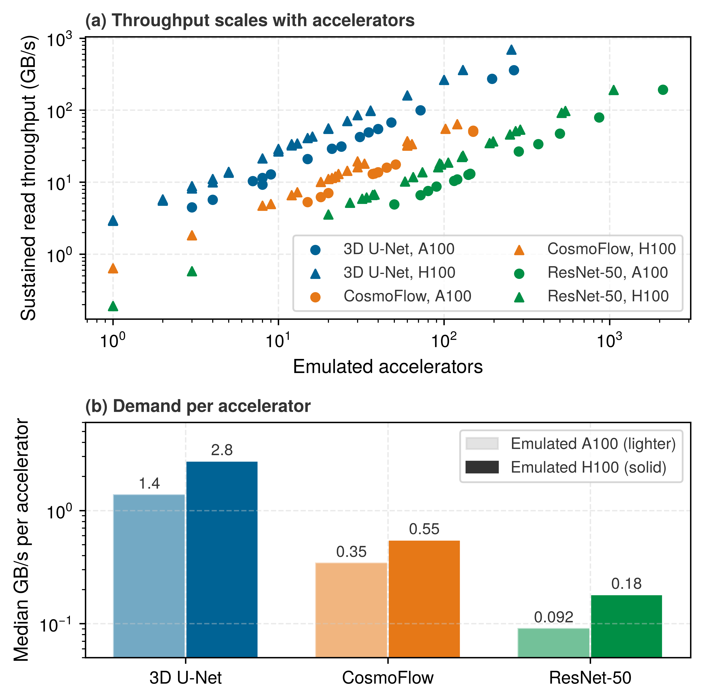
Содержание главы
Содержание
- 4 Хранение данных
- 4.1 Топливопровод
- 4.2 Как рабочие нагрузки ML инвертируют предположения систем хранения
- 4.3 Иерархия хранилищ для машинного обучения
- 4.4 Уравнение конвейера данных
- 4.5 GPUDirect Storage и обход копирования данных центральным процессором
- 4.6 Хранилище контрольных точек
- 4.7 Версионированные данные и границы фиксации
- 4.8 Экономика хранилищ
- 4.9 Хранилище для обслуживания
- 4.10 Технологии хранилищ, сдвигающие уровни
- 4.11 Заблуждения и ловушки
- 4.12 Итоги
4 Хранение данных
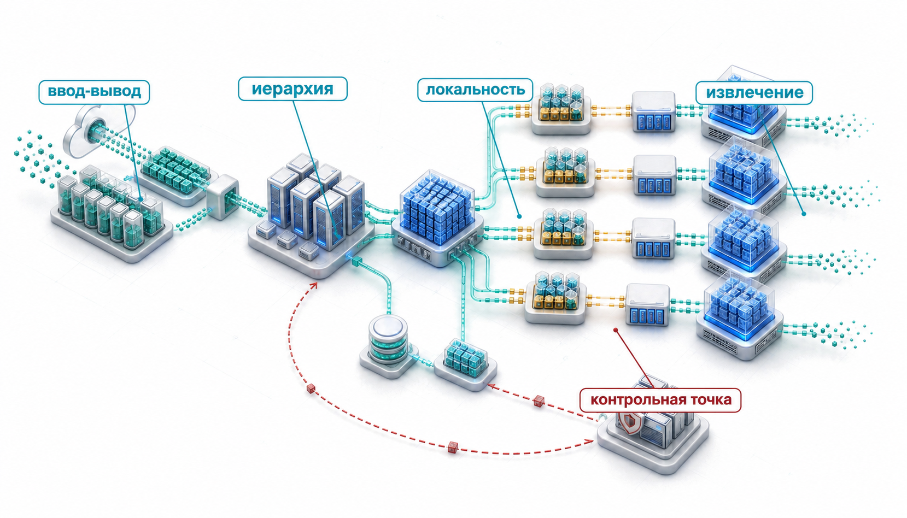
Цель
Почему хранилище становится невидимым узким местом, не дающим ускорителям раскрыть свой потенциал?
Задача обучения может оставить дорогие ускорители простаивающими, даже когда модели помещаются в памяти, а сеть обладает избыточной пропускной способностью, — ведь следующий батч должен прийти до того, как он понадобится вычислениям, а сохранённая контрольная точка (checkpoint) должна оставаться пригодной при отказе рабочего узла. Хранилище становится невидимым узким местом всякий раз, когда бенчмарки ускорителей начинаются с уже подготовленных данных, исключая работу по доставке входов и сохранению результатов. Конвейер, удерживающий занятой одну машину, может встать, как только множество рабочих узлов начнут конкурировать за один источник данных. Всплеск записей контрольных точек от одного задания способен задержать чтение входов для других, превращая локальную паузу в потерянный прогресс по всему парку. Добавление вычислительных мощностей наращивает спрос, не расширяя способность общей системы его обслуживать. Насколько сильно эта конкуренция вредит, зависит от рабочей нагрузки: компактные входы для обучения могут доставляться легко, даже когда сохранение состояния модели доминирует в трафике хранилища, тогда как крупные образцы могут сделать непрерывную доставку входов ограничивающим фактором. Приближение данных к ускорителю сокращает такие задержки доставки, но добавляет транзитный трафик, расходы на ёмкость и обязанность сохранять полные версии, ведь быстрая локальная запись почти ничего не защищает, если единственная копия исчезает вместе с отказавшей машиной. Решения по хранилищу, следовательно, определяют и то, как быстро движется вперёд парк, и то, какая часть этого прогресса переживёт сбои. В терминах C³ проектирование хранилища координирует перемещение данных и долговременное состояние так, чтобы доступные вычисления давали восстановимый прогресс.
Цели обучения
- Сравнить требования к хранилищу при обучении на полном корпусе, записи контрольных точек и обслуживании моделей на локальных и общих уровнях
- Вычислить входную пропускную способность и среднее время обслуживания кэша по спросу рабочей нагрузки и поведению уровней
- Спроектировать упаковку шардированных данных, предвыборку, локальность и прямые пути из хранилища, чтобы парк ускорителей не голодал при мелких файлах или медленных уровнях
- Выбрать стратегии постановки в буфер и репликации контрольных точек, балансирующие длительность пауз, риск восстановления и стоимость хранения
- Определить контракты фиксации и воспроизведения записи в хранилище, сохраняющие корректность при отказах стадий распределённого конвейера, включая провенанс, который должны сохранять сгенерированные обучающие данные
- Проанализировать рабочие нагрузки хранилища при обслуживании: от массовой загрузки моделей и всплесков выкатки до индексов поиска, ограниченных случайным доступом по IOPS
- Оценить варианты буферизации и распределения по уровням по полной стоимости доставки, включая плату за передачу и простаивающие ускорители
4.1 Топливопровод
Плотные вычислительные узлы из Вычислительная инфраструктура содержат по восемь GPU с совокупной производительностью порядка петафлопс в секунду, а fabric InfiniBand из Сетевой fabric соединяют тысячи таких узлов на скоростях в сотни гигабит в секунду. В многоуровневом стеке парка из Рисунок 4 хранилище данных завершает эту физическую основу, размещая обучающие данные, веса моделей, состояние оптимизатора и промежуточные контрольные точки (checkpoint) на правильном удалении от ускорителя. Двигатель без топлива — дорогая скульптура. Инженерный вопрос состоит в том, как доставлять это топливо достаточно быстро, чтобы ускорители обучающего кластера никогда не голодали.
Рабочий кластер для этого вопроса — 256 восьми-GPU-узлов, всего 2,048 ускорителей, — намеренно вдвое больше эталонного кластера на 1,024 GPU (128 узлов), используемого в остальных частях книги: на более крупном парке давление на общее хранилище заметнее. Все расчётные числа для задачи на 175B параметров использует именно этот рабочий кластер; побочный сценарий с иной нагрузкой или размером парка самостоятельно указывает свой масштаб там, где он появляется.
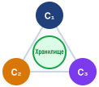
Хранилище — физический субстрат, пронизывающий Вычисления (
Рассмотрим рабочий пример для анализа хранилища — экземпляр архетипа A (GPT-4/Llama-3). Языковая модель со 175 млрд параметров обучается на 1.5 trillion токенов текста: примерно 3 TB в форме сжатого источника или 6 TB после представления 4-байтовыми идентификаторами токенов. Этот токеновый бюджет задаётся выше по потоку, до хранилища. Согласно результатам compute-optimal масштабирования из Законы масштабирования ИИ, число обучающих токенов растёт пропорционально числу параметров, поэтому каждый шаг вверх по кривой размеров моделей увеличивает и корпус, который парк должен хранить, и число байтов, которые каждая эпоха должна прочитать. Этот корпус уже лежит ниже compute-optimal распределения для модели на 175B параметров, так что compute-optimal запуск увеличил бы обе цифры ещё больше. Запуск совершает один проход (одну эпоху) по этому корпусу, читая каждый выбранный токен один раз в порядке, определяемом seed перемешивания. Ни один небольшой «горячий» поднабор не доминирует в доступе. Тем временем каждый шаг обучения потребляет один глобальный батч из 1,536 последовательностей (3,145,728 токенов), затем ждёт следующий. На рабочем кластере моделируемый шаг занимает около 4.64 seconds — это оценка из модели производительности книги, а не измерение, — поэтому единственная эпоха длится около 25.6 days. Если хранилище не успевает доставить этот батч до завершения текущего шага, ускорители простаивают, и организация платит за кремний, который производит тепло вместо градиентов.
Проблема обманчива, потому что технологии хранилищ заметно продвинулись. Накопители NVMe (Non-Volatile Memory Express) достигают 7 GB/s последовательной пропускной способности — цифры, которая десятилетие назад казалась недосягаемой. H100 перемещает данные внутри себя через высокоскоростную память HBM на скорости 3.35 TB/s, что примерно в 479× превышает последовательную пропускную способность одного накопителя NVMe. Это соотношение противопоставляет два уровня; это не скорость, с которой хранилище должно снабжать обучающие входы, ведь пропускная способность HBM также занята повторяющимся трафиком весов, активаций и тензоров во время вычислений. Требование к «питанию» от хранилища определяется вместо этого байтами входного батча, которые каждому ускорителю нужны за итерацию. Разделив эти байты на вычислительное окно, получаем требуемую скорость доставки одного рабочего узла; просуммировав по всем узлам — потребность парка. Эту скорость нужно оценивать на каждом уровне в том представлении, в каком данные там хранятся, поскольку сжатые входы и декодированные тензоры занимают разное число байтов. Иерархия становится полезной, когда долговременный источник не может обеспечить эту скорость или его задержка (latency) меняется настолько, что прерывает вычисления. Более быстрые уровни заранее ставят в буфер следующие батчи, пока долговременный уровень обеспечивает ёмкость и сохраняет исходные данные.
Задача хранилища соединяет физику с экономикой. Физика благоприятствует памяти, ближайшей к ускорителю, — она даёт наивысшую пропускную способность при наименьшей ёмкости; экономика благоприятствует общему хранилищу, которое объединяет гораздо большую ёмкость при меньшей стоимости за байт за счёт дополнительных интерфейсов и очередей обслуживания. Затем технология устройств, соединения и конкуренция за ресурсы определяют скорость, которую фактически получает конкретный потребитель. Инженерная задача — разместить и перемещать данные так, чтобы ускоритель получал каждый батч до того, как он понадобится. Возникающая задача проектирования количественная: она спрашивает, какой должна быть скорость каждого уровня, какой глубины должен быть конвейер и какие байты стоит держать рядом с ускорителем. Улучшение одной лишь вычислительной производительности не улучшает доставку входов или сохранение контрольных точек. Эти пути требуют собственных бюджетов пропускной способности и задержки.
За время запуска записи контрольных точек более чем в 1 000 раз превышают чтение одной эпохи обучающих данных.
Канонический объём обучающих данных для этого примера составляет примерно 9 TB по всей иерархии — сумма сжатого корпуса примера и токенизированных шард. Дополнительные перемешанные или упакованные варианты могут увеличить занимаемый объём памяти при буферизации, но по-эпохное чтение обучения по 4-байтовым идентификаторам токенов составляет 6 TB. Эта глава принимает один восстановимый контракт контрольной точки смешанной точности Adaptive Moment Estimation (Adam): веса модели FP16 по 2 байта на параметр, главные веса FP32 по 4 и два момента Adam FP32 по 4 каждый — итого 14 байт на параметр. Это 16-байтовое (по 16 байта) обучающее состояние из Разделение памяти узла без FP16-градиентов в 2 байт, которые пересчитываются после восстановления; при этом метаданные планировщика, генератора случайных чисел и загрузчика данных на этом масштабе пренебрежимо малы. Итоговая контрольная точка составляет 2,450 GB каждые 10 minutes. План хранения закладывает окно обучения в 30-day, внутрь которого помещается моделируемая эпоха в 25.6-day. За это окно на кластере из 256 узлов система хранения должна доставить 6 TB токенизированных обучающих данных за единственную эпоху запуска, поглотить 10.6 PB записей контрольных точек и поставить в буфер веса моделей для оценочных запусков. В последующих разделах этот же контракт используется для всех расчётов размеров контрольных точек, длительности, общего объёма хранения и записи за время жизни.
Эти числа определяют требования к пути хранения данных. Сначала паттерны доступа ML инвертируют предположения, лежащие в основе обычных систем хранения. Эта инверсия требует иерархии от HBM до холодного архива. Иерархия, в свою очередь, требует уравнения конвейера, определяющего размеры доставки, и прямых путей данных, исключающих копии на хосте. Также требуется протокол контрольных точек для доминирующего трафика записи, границы фиксации, сохраняющие воспроизводимость каждого версионированного артефакта (включая сгенерированные обучающие данные), и экономика, решающая, какие байты должны находиться на каждом уровне. Загрузка моделей во время обслуживания и поисковые индексы — вариации той же задачи «топливопровода», а устройства, сдвигающие границы между уровнями, завершают главу. В каждой рабочей нагрузке система хранения должна разместить нужное представление на нужном расстоянии до того, как за ним обратится ускоритель.
4.2 Как рабочие нагрузки ML инвертируют предположения систем хранения
Администратор баз данных, перешедший в команду ML-инфраструктуры, обнаружил бы, что многие знакомые принципы проектирования хранилищ инвертированы многотерабайтными последовательными сканированиями и всплесками контрольных точек сквозного примера модели 175B. Транзакционные базы данных делают упор на небольшие случайные обращения и строгую согласованность, выдавая тысячи 4-КБ чтений в секунду для обработки запросов пользователей. Проекты хранилищ для этого режима сочетают алгоритмы кэширования, исходящие из того, что недавно прочитанные записи скоро будут запрошены снова, журналы упреждающей записи (write-ahead log), сохраняющие каждое изменение до его применения, что поддерживает восстановление на момент времени, и избыточный массив независимых дисков (RAID),1 который обменивает ёмкость и производительность на отказоустойчивость. Предобучение на полном корпусе ломает предположения о локальности и размере доступа, лежащие в основе этого стека, сохраняя при этом потребность в защите долговременного состояния; дообучение, curriculum learning, добыча сложных примеров, рекомендательные признаки и поиск вводят свои собственные смещённые рабочие наборы, так что каждая инверсия ниже — свойство конкретной рабочей нагрузки, а не ML в целом.
Предобучение на полном корпусе инвертирует эти предположения, когда сэмплы упаковываются в последовательные шарды (большие файлы, каждый из которых содержит множество сэмплов), позволяя конвейеру стримить датасеты объёмом в сотни терабайт. Отдельные обращения крупные (мегабайты, а не килобайты), поскольку модели потребляют батчи изображений или текстовых последовательностей, при этом неизменяемые версионированные обучающие шарды избегают конфликтов чтения-записи во время прогона, хотя публикация контрольных точек и обновление активных признаков всё же требуют явных гарантий согласованности. Нагрузки на изображениях и видео могут требовать сотни гигабайт в секунду днями или неделями, тогда как компактный токенизированный текст требует значительно меньшей входной пропускной способности, даже если записи контрольных точек доминируют в общем трафике. Несоответствие между тем, под что оптимизировалось хранилище, и тем, что реально нужно ML, порождает стену ввода-вывода (принцип «Стена ввода-вывода»): когда пропускная способность хранилища не может поставлять обучающие данные так же быстро, как ускорители их потребляют, GPU простаивают независимо от их вычислительной мощности. Для входных данных, требующих большой пропускной способности — изображений и видео, — эта стена возникает, когда число ускорителей растёт быстрее, чем выделенная пропускная способность хранилища, делая конвейер данных, а не модель, ограничивающим фактором всякий раз, когда фиксированное время обслуживания входных данных не поспевает за ускоряющимися вычислениями.
↪ Как задержки хранилища проявляются как узкие места связи или координации в таксономии C
Системный взгляд 4.1: Подвижное узкое место ввода-вывода
Зафиксируйте представление батча и путь хранения, улучшая вычислительную пропускную способность. Батч теперь завершается раньше, оставляя меньше времени на доставку следующего. Предвыборка (prefetching) может перекрыть доставку с исполнением, но не может преодолеть устойчивый дефицит скорости обслуживания. Этот дисбаланс вычислений и хранения не означает, что каждая более крупная модель ограничена входом. Модель, выполняющая больше вычислений на том же батче, может наоборот дать хранилищу больше времени. Проектирование должно следовать временам обслуживания рабочей нагрузки, а не рекламируемым пикам пропускной способности.
Нормализованный пример изолирует этот эффект. Пусть доставка входных данных занимает четверть исходного времени вычислений и идеально перекрывается с вычислениями, так что каждый батч занимает большее из двух времён обслуживания. Удвоение скорости вычислений вдвое сокращает время батча, а её четырехкратное увеличение сокращает время батча ещё вдвое, после чего вычисления и доставка занимают равное время. За этой точкой конвейер ограничен доставкой. Ускоритель, в шестнадцать раз более быстрый, всё же повышает пропускную способность батчей лишь в четыре раза, а оставшиеся вычисления простаивают за входным путём. Эта плато-фаза — стена ввода-вывода для данной рабочей нагрузки и выделения ресурсов. Более быстрое хранилище, более компактное представление или дополнительные независимые входные пути могут сдвинуть её; лишь углубление предвыборки — нет.
Первая инверсия — паттерн доступа. Где рабочие нагрузки баз данных порождают случайные паттерны доступа, выигрывающие от оптимизации времени позиционирования, предобучение на полном корпусе выполняет большие последовательные сканирования. Эпоха в сквозном примере читает каждый выбранный сэмпл один раз, в порядке, заданном перемешиванием шардов и буферов, так что паттерн ближе к видеостримингу, чем к запросам к базе данных. Системы хранения, оптимизированные под случайные IOPS,2 на этой нагрузке расходуют свои возможности впустую, тогда как системы, оптимизированные под последовательную пропускную способность, процветают. Штраф за неверный паттерн велик. Накопитель NVMe Gen4/Gen5 выдаёт примерно 7–14 ГБ/с на последовательных чтениях, тогда как небольшие случайные чтения по 4 КБ могут упасть до ~0,5 ГБ/с — падение на порядок до 30
Требуемое ML-обучением перемешивание добавляет осложнение, уходящее корнями в требования стохастического градиентного спуска. Стохастический градиентный спуск требует, чтобы каждый мини-батч извлекался приблизительно равномерно из обучающего распределения; предъявление сэмплов в коррелированном порядке (все сэмплы одного документа, все изображения одного класса) смещает оценки градиента и замедляет или дестабилизирует сходимость. Истинное глобальное перемешивание удовлетворяло бы этому требованию идеально, но оно требует случайного доступа по всему датасету, разрушая последовательный паттерн доступа, которого требует аппаратура хранения. Даже для многотерабайтного корпуса случайные позиционирования по сэмплам делают ввод-вывод непозволительно дорогим. Округлённый иллюстративный датасет из 1 триллиона 4-байтовых токенов (около 4 ТБ), хранимый отдельными элементами на NVMe и читаемый случайно, потребовал бы от сотен до тысяч часов при скорости случайных чтений накопителя, вместо примерно десяти минут последовательного стриминга. Поэтому практическое решение — компромисс: перемешивать порядок больших шардов данных, а затем перемешивать сэмплы внутри локального буфера каждого шарда. Это сохраняет последовательный ввод-вывод, но адекватность перемешивания зависит от состава шардов и размера буфера — зависимость, которую Глава 4.4.2 превращает в этап валидации загрузчика.
Вторая инверсия — размер рабочего набора. Традиционные приложения полагаются на временну́ю локальность. Веб-сервер многократно обращается к популярным страницам, и кэш с топ-10% контента обслуживает 90% запросов. В сквозном сценарии предобучения на полном корпусе в этой главе сериализованный корпус объёмом 6 TB не имеет «популярного» диапазона токенов; каждый выбранный токен потребляется один раз за эпоху. Кэш любого практического размера удерживает лишь малую долю корпуса, и большинство сэмплов при обращении фактически «холодные». Такой паттерн доступа делает традиционное кэширование по давности обращения гораздо менее эффективным. Кэш LRU (least recently used)3 может приблизиться к 0% попаданий для циклического сканирования, превышающего размер кэша, поскольку каждый сэмпл вытесняется до своего следующего обращения. При независимо перемешиваемых эпохах межэпохальные попадания низки, но ненулевые и зависят от доли кэша и порядка сэмплов.
Другие обучающие политики создают иную локальность. Многозадачное или curriculum learning, добыча сложных примеров и фильтрующая выборка чаще обращаются к некоторым подмножествам в определённых фазах. Этот временный рабочий набор позволяет уровню NVMe использовать локальность. Крупномасштабные задания предобучения, многократно сканирующие фиксированный корпус, остаются сценарием для выводимой здесь иерархии; системы с иной политикой выборки должны измерить её распределение переиспользования, прежде чем принимать тот же дизайн кэша.
Третья инверсия — паттерн записи. Транзакционные системы порождают непрерывные потоки мелких записей, каждая немедленно фиксируется. Системы ML порождают изредка крупные записи при сохранении контрольных точек. Контрольная точка модели с 175B параметрами, включая состояние оптимизатора, занимает примерно 2,450 GB. Её сохранение каждые 10 minutes порождает концентрированные всплески, на секунды насыщающие пропускную способность, за которыми следуют долгие периоды простоя. Эти синхронизированные всплески, называемые штормами контрольных точек и формально определённые в определении 4.5, должна поглощать общая файловая система, не прерывая текущих обучающих чтений. Всплесковый паттерн записи особенно сложен, потому что все узлы кластера записывают свои шарды контрольных точек одновременно. Если 256 nodes узлов, каждый записывает 10 GB, параллельная файловая система получает 2.4 TB записей в одном всплеске, что блокирует обучение, если задание пишет на этот уровень синхронно. Локальная постановка и асинхронная репликация могут сократить эту паузу, как развивает Глава 4.6. Когда трафик контрольных точек и градиентов делит один fabric, изоляция трафика также не даёт всплеску задерживать коллективные операции задания.
↩︎ Изоляция трафика и механизмы качества обслуживания установлены в Изоляция трафика и качество обслуживания.
Четвёртая инверсия тоньше. Отношение чтения к записи меняется по фазам жизненного цикла. В интервалах между контрольными точками входной конвейер читает непрерывно. По всему прогону, однако, отношение чтения/записи зависит от размера входа, числа эпох, размера контрольной точки и частоты сохранения. Сквозной пример языковой модели производит байтов контрольных точек гораздо больше, чем байтов обучающего входа, несмотря на то, что большую часть времени проводит между сохранениями. При предобработке данных тяжелы и чтения, и записи, и паттерн доступа ближе к MapReduce-заданию, чем к обучающему циклу. Токенизация, дедупликация и перемешивание однократно сканируют сырой корпус (большие последовательные чтения) и записывают промежуточные артефакты (большие последовательные записи). Следующая стадия затем снова сканирует эти артефакты. Сжатый текстовый корпус объёмом 3 TB обычно расширяется до 6 TB токенизированных шардов до начала первой обучающей эпохи, нагружая каждый уровень хранения иначе, чем следующая за ней фаза обучения «только чтение». Ни одна конфигурация хранилища не оптимизирует все фазы сразу — потому ML-системам нужна многоуровневая иерархия, а не единственная технология хранения.
Пятая инверсия проявляется при сравнении обучения и инференса. Обучение читает датасеты последовательно и пишет контрольные точки всплесками. Инференс с весами в памяти, напротив, выполняет одно крупное чтение модели на старте, а затем обслуживает запросы из HBM. Его задача хранения — задержка холодного старта: время, требуемое для загрузки модели при масштабировании или восстановлении после отказа. Ограничивающее требование меняется с устойчивой пропускной способности датасета на объёмное чтение, длительность которого зависит от того, какой уровень поставляет веса. Поиск, выгрузка KV-кэша (вынос сохранённого состояния внимания запроса из HBM) и модели больше совокупного объёма HBM создают дополнительный ввод-вывод во время обслуживания, поэтому этот случай с весами в памяти — базовый, а не универсальный паттерн инференса. Глава 4.9 выводит времена загрузки и связывает этот базовый случай со следующей рабочей нагрузкой поиска.
Обслуживание в масштабе парка также порождает всплеск веерного чтения. Обслуживающий кластер с 100 репликами сквозной модели 175B держит 35 TB весов FP16, и развёртывание модели должно доставить новую версию каждой реплике за считанные минуты, пока старая продолжает обслуживать. Этот всплеск — шторм контрольных точек наоборот: вместо того чтобы многие узлы одновременно писали в общее хранилище, многие узлы одновременно читают одни и те же данные.
| Паттерн рабочей нагрузки | Традиционное предположение | Реальность ML |
|---|---|---|
| Паттерн доступа | Случайный доступ | Последовательный стриминг |
| Рабочий набор | Помещается в кэш, сильная временна́я локальность | Превышает все уровни кэша; низкая локальность при полнокорпусных сканированиях |
| Паттерн записи | Непрерывные мелкие записи | Всплесковые крупные записи |
| Отношение чтения/записи | Сбалансировано | Зависит от фазы (от «только чтение» до доминирования записи) |
| Обучение vs. инференс | Один паттерн доступа для всех фаз | Стриминг корпуса при обучении; объёмные загрузки модели и веерные чтения при обслуживании |
Вместе пять инверсий, собранных в Таблица 1, сводятся к одному правилу закупок: оптимизировать под последовательные чтения и всплесковые записи, а не под случайные IOPS в стиле баз данных. Организация, выделяющая хранилище для ML на основе эвристик эпохи баз данных, переплатит за случайные IOPS для последовательных обучающих шардов, недовложится в устойчивую пропускную способность, которой те шарды требуют, и не учтёт всплесковые паттерны записи, порождаемые контрольными точками.
Контрольная точка 4.1: Анализ рабочей нагрузки хранения
Рассмотрите подсистему хранения для нового ML-кластера обучения с 512 GPU. Основная нагрузка — обучение больших языковых моделей на датасете текста объёмом 10 ТБ.
Превратить эти пять инверсий в конкретную архитектуру требует разделить два вопроса: как упакован набор данных и с какой скоростью каждый уровень хранилища должен его отдавать. Требуемая скорость доставки зависит от потребности рабочей нагрузки, а не только от числа параметров. Она равна суммарному объёму входных байт, потреблённых за окно доставки, делённому на длительность этого окна; эту скорость совместно задают представление данных, размер батча, параллелизм и время вычислений (Глава 4.4), и одна лишь предвыборка не может её обеспечить, когда спрос превышает выделенную уровню долю. В сквозном примере 1.5 trillion токенов обучающих данных дают примерно 6 TB последовательных чтений идентификаторов токенов за эпоху из 3 TB сжатого исходного корпуса. Будь корпус сохранён как один файл на пример, весь бюджет хранилища уходил бы на открытие файлов, а не на полезные байты — это то узкое место метаданных, которое Глава 4.3.6 развивает как проблему маленьких файлов. Предобработка корпуса в крупные последовательные шард-файлы (Aizman и др. 2019 г.) распределяет стоимость open, seek и close на множество токенов, не меняя скорость полезных байт (Глава 4.3.5). Где должны жить эти шарды и насколько близко к ускорителю — вопрос, на который отвечает иерархия хранилищ.
4.3 Иерархия хранилищ для машинного обучения
Ни одно устройство хранения не способно одновременно вместить обучающий корпус петабайтного масштаба, поглощать контрольные точки объёмом в десятки терабайт и при этом снабжать ускоритель со скоростью терабайты в секунду. HBM даёт высокую локальную пропускную способность при ограниченной ёмкости, тогда как объектное хранилище прячет долговременную ёмкость за куда более медленным сервисным путём и путём клиента. Многоуровневая иерархия комбинирует эти ресурсы, вместо того чтобы требовать от одной технологии удовлетворения всех потребностей. Каждый уровень предлагает свой баланс пропускной способности, задержки, ёмкости и стоимости. Иерархия продолжает привычную иерархию памяти процессора, расширяя её на узлы. Новое решение уровня парка — насколько локальное промежуточное хранение снижает нагрузку на общее хранилище, сохраняя при этом долговременный, единообразно версионированный источник. Справедливое сравнение уровней требует указывать каждый ресурс в его собственном масштабе: на ускоритель, на узел или как агрегированный общий сервис (Таблица 2).
| Уровень хранилища | Типичная ёмкость | Пропускная способность | Задержка | Иллюстративная основа стоимости |
|---|---|---|---|---|
| GPU HBM | 80 GB | 3.35 TB/s | ~273 ns | ~$15/GB acquisition cost |
| Host DRAM | 512 GB–2 TB | 200 GB/s | ~100 ns | ~$3/GB acquisition cost |
| Локальный NVMe SSD | 4–30 TB | 7–25 GB/s | ~100 μs | ~$0.10/GB/month provisioned |
| Параллельная файловая система | 100+ PB | 1+ TB/s aggregate | ~1 ms | ~$0.03/GB/month provisioned/service |
| Объектное хранилище | Очень большой пул | 100 GB/s aggregate | ~50 ms | ~$0.02/GB/month service |
| Архив/холодное хранилище | Очень большой пул | 1 GB/s | Минуты — часы | ~$0.004/GB/month service |
Преимущество HBM над host DRAM в Таблица 2 — это пропускная способность, а не задержка, поскольку отрыв обеспечивают широкие многослойные интерфейсы, а не более быстрые ячейки (HBM и стена памяти). Обрыв задержки между соседними уровнями открывается лишь на NVMe и ниже, где каждый доступ добавляет время доступа к носителю и обработку протокола хранилища, а за пределами узла — ещё и сетевые переходы и ожидание в очередях. Поэтому модель иерархии хранилищ (принцип «Модель иерархии хранилищ») управляет разбиением хранилищ по уровням и дизайном конвейера. Локальные уровни обменивают пропускную способность на ёмкость, а общие уровни агрегируют множество устройств и предоставляют иной путь клиента. Поскольку пропускная способность на клиента зависит от распределения и конкуренции, а не от фиксированного множителя между уровнями, выбор форматов данных, стратегии кэширования, размеры буферов предвыборки и политики распределения по уровням существуют для того, чтобы управлять перемещением данных вверх по иерархии, и ускоритель никогда не оставался бы без данных.
Остаток главы нумерует шесть уровней по расстоянию от ускорителя: от уровня 0 (HBM) через уровень 1 (host DRAM), уровень 2 (локальный NVMe), уровень 3 (параллельная файловая система) и уровень 4 (объектное хранилище) до уровня 5 (архив). Одно лишь расстояние скрывает важное различие, ведь цифра пропускной способности каждого уровня описывает разный масштаб: на ускоритель, на узел или общий сервис, делимый между клиентами (Рисунок 1).
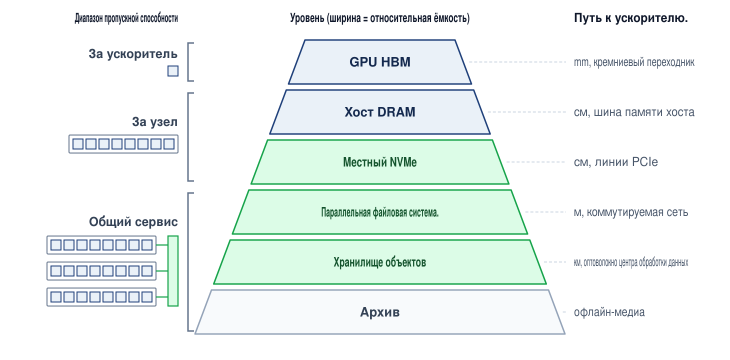
Физические уровни Рисунок 1 определяют компромисс между удалённостью доступа, ёмкостью и стоимостью. Разделяемые сервисы могут агрегировать большую пропускную способность, чем отдельное локальное устройство, поэтому порядок уровней — не монотонное ранжирование по совокупной пропускной способности. Этот компромисс не произволен: он отражает физику близости данных. HBM размещается на том же кремниевом интерпозере, что и ускоритель, и соединяется с ним тысячами параллельных дорожек длиной в миллиметры, тогда как DRAM хоста подключается к контроллеру памяти CPU и достигает ускорителя через интерконнект хост–устройство, а локальный NVMe проходит по плате через линии PCIe. За пределами узла параллельная файловая система пересекает метры кабелей и сетевые коммутаторы, а объектное хранилище может протягиваться на километры оптоволокна между дата-центрами. Расстояние, накладные расходы протоколов и конкуренция за ресурс могут увеличивать задержку доступа, а технология носителя и выделенные ресурсы определяют стоимость ёмкости. Поэтому расстояние — ориентир, а не измерение: только полный клиентский путь устанавливает все три свойства для конкретного потребителя.
Инженерная задача состоит в том, чтобы доставить каждый батч в HBM прежде, чем он понадобится ускорителю. В сквозном примере долговременный корпус живёт в объектном хранилище (Tier 4) в виде 3 TB сжатой исходной копии плюс 6 TB токенизированных обучающих шардовых файлов, но ускорителю нужен каждый батч в HBM (Tier 0) до конца текущего шага. Референсный дизайн главы фиксирует один путь между ними. При старте задачи каждый узел копирует свою долю токенизированных шардовых файлов из объектного хранилища на локальный NVMe (Tier 2). Затем единственная обучающая эпоха читает с этой локальной копии, готовит батчи в DRAM хоста и передаёт их в HBM. Локальные чтения исключают медленные отклики объектного хранилища из каждого шага обучения — причина, по которой Глава 4.8 рекомендует выкладывать корпус, который задача читает лишь однажды. Параллельная файловая система (Tier 3) хранит контрольные точки, а не обучающие входы. Потоковая передача шардовых файлов напрямую из объектного хранилища или их обслуживание через параллельную файловую систему — альтернативы, которые глава сопоставляет с этим дизайном, а иерархия описывает варианты размещения, а не требование, чтобы каждый байт проходил через каждый уровень.
4.3.1 Обрывы пропускной способности между уровнями
Спуск на один уровень от HBM одного ускорителя (3.35 TB/s) к DRAM всего хоста (~200 GB/s) снижает пропускную способность примерно в 16.8×, и это сравнение всё ещё преуменьшает обрыв на восьми-GPU узле, поскольку все восемь ускорителей делят одну и ту же пропускную способность памяти хоста. Сравнение соседних уровней требует явного указания области действия каждой скорости (на ускоритель, на узел или на разделяемый сервис), как показано скобками в Рисунок 1. Между DRAM хоста и NVMe соотношение составляет примерно 7.1× (200 GB/s против ~28 GB/s от RAID-0 на 4 накопителях). Между NVMe и параллельной файловой системой соотношение зависит от выделения на узел. Если агрегатная параллельная файловая система (PFS) с пропускной способностью 1 TB/s обслуживает 256 узлов, каждый узел получает примерно 4 GB/s — снижение в 7× по сравнению с локальным чередованием RAID-0. Пропускная способность объектного хранилища также зависит от клиентского пути и выделения ресурсов; фиксированного соотношения с параллельной файловой системой нет.
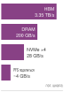
Пропускная способность на клиента снижается примерно в 7–17
Как было установлено в Глава 4.1, обрыв не является требованием к темпу подачи; темп подачи остаётся равным суммарному объёму байтов входных батчей, делённому на время итерации, по всем отдельным потребителям. Что решают обрывы, так это то, где должен располагаться буфер. На выбранном пути DRAM хоста может буферизовать подготовленные батчи, а NVMe — кэшировать шардовые файлы из разделяемого хранилища. Каждый буфер должен покрывать задержку уровня ниже него, пока тот уровень поддерживает темп потребления; долговременные репозитории не обязаны выступать промежуточными буферами.
Ту же иерархию можно проанализировать как кэш, а не как шесть изолированных устройств. Если запрос попадает в горячий уровень с вероятностью
Для записей фиксированного размера, обслуживаемых последовательно, соответствующая эффективная пропускная способность равна размеру записи, делённому на
Арифметика объёмов батчей объясняет и то, почему рост размера кластера создаёт давление на хранилище. Суммарный спрос равен объёму байтов батчей каждого потребителя, делённому на его вычислительное окно, в сумме по потребителям, поэтому при фиксированном темпе на узел он растёт линейно с числом узлов. Сам темп на узел варьируется на порядки между модальностями данных, что показывают обучение на тексте и изображениях в сквозном кластере.
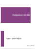
Обучение на изображениях требует в 1,800× большую пропускную способность хранилища, чем обучение на тексте.
Инженерный расчёт 4.1: Пропускная способность для текста и изображений
Постановка задачи: Какую суммарную пропускную способность хранилища требует кластер на 2,048 GPU для обучения на тексте по сравнению с обучением на изображениях?
Подготовка: Сравниваются два заданных представления батчей при одном и том же вычислительном окне и числе независимых входных потребителей. Результат зависит от объёма и темпа батчей, а не только от модальности. Обе задачи — обобщённые, масштабированные до сквозного кластера, а не 175B-задача. Каждый GPU потребляет один батч на GPU на каждом шаге — темп, соответствующий модели значительно меньше 175B параметров.
Для обучения на тексте спрос невелик. При батче на GPU из одной упакованной последовательности длиной 4,096 tokens и времени шага 200 ms суммарная пропускная способность составляет:
Это легко обслуживается одним сетевым узлом хранилища — одним файловым сервером, к которому клиенты обращаются по сети.
Обучение на изображениях требует гораздо большего. При обычном размере батча 256 на GPU (ImageNet при
Системный вывод: При указанных представлениях батчей и временах вычислений обучение на изображениях требует в 1,800× более высокой входной пропускной способности, чем обучение на тексте. Текстовый пример — тяжёлый по объёму, но лёгкий по пропускной способности. Один сетевой узел хранилища может нести его входную подачу, поэтому его хранилище проектируется исходя из суммарного объёма корпуса и, как показывают последующие разделы, из трафика контрольных точек. Пример с изображениями — тяжёлый по пропускной способности: его подача превышает возможности любого отдельного сервера хранилища и требует агрегированной пропускной способности многих серверов или локальных кэшей. Станет ли тот или иной спрос реальным узким местом, всё ещё зависит от измеренного темпа доставки пути, который его обслуживает.
175B-задача располагается ещё ниже. Её 6 TB эпоха, растянутая на смоделированные 25.6-day выполнения, в среднем составляет около 2.7 MB/s на весь кластер — байты корпуса, делённые на длительность прогона, что примерно в 60× ниже, чем у обобщённой текстовой задачи из ноутбука. Каждый токен 175B-модели несёт столько вычислений, что корпус просачивается ручейком — вот почему хранилище сквозного примера проектируется под трафик контрольных точек, а не под входную подачу.
Результат для изображений — нижняя граница для визуальных данных, а не потолок. При примерно 303.2 GB/s на 256 узлах задача на изображениях уже потребляет почти треть параллельной файловой системы с пропускной способностью 1 TB/s, построенной из 100 узлов, обслуживающих данные (архитектура описана в Глава 4.3.6). Изображения более высокого разрешения и видеоклипы — с мегабайтами на образец вместо примерно 116 KB у сжатого изображения ImageNet — повышают спрос на узел на порядок и более, а парк в несколько раз больший умножает его снова. Спрос такого масштаба превышает возможности разделяемой файловой системы этого размера, поэтому архитектура должна опираться на локальное кэширование NVMe, чтобы снять повторные чтения с разделяемого хранилища.
Обрыв пропускной способности между уровнями имеет последствия и для формата данных на каждом уровне. Вычисления потребляют тензоры float16, упакованные идентификаторы токенов или другие поддерживаемые представления, тогда как NVMe и объектное хранилище могут хранить сжатые записи. Сжатие сокращает объём хранимых и передаваемых байтов, но добавляет работу по декодированию. Выбранный формат должен позволять декодированию на CPU или GPU поспевать за потреблением; максимальное сжатие может снизить сквозную пропускную способность, когда декодирование становится ограничивающим этапом. Путь с декодированием на хосте размещает полученные тензоры в DRAM, а путь с декодированием на GPU переносит преобразование и его потребность в ресурсах на ускоритель.
Проблема формата обостряется при мультимодальном обучении, которое объединяет текст, изображения, аудио и видео в одной модели. Сериализованные размеры различаются на порядки — от 4 байтов на текстовый токен до примерно 116 KB на сжатое изображение и до мегабайтов на короткий видеоклип — в зависимости от представления, сжатия, разрешения и длительности, и каждая модальность требует собственной работы по декодированию и аугментации. Мультимодальная обучающая задача должна управлять этими параллельными потоками и выделять ресурсы под их суммарный спрос на обслуживание. Для корпуса, содержащего 3 ТБ текста, 50 ТБ изображений и 200 ТБ видео, видео доминирует по удерживаемой ёмкости. Его вклад в пропускную способность также зависит от того, как часто обучение сэмплирует его и сколько байтов читает каждый сэмплированный батч. Размер корпуса сам по себе не определяет ни темп доставки, ни вклад модальности в качество модели.
Прослеживание того, как каждый уровень отвечает этим ограничениям по пропускной способности и формату, начинается на вершине пирамиды и движется наружу, от ускорителя к архиву. Это спуск начинается там, где вычисления действительно потребляют байты: HBM — уровень, достаточно быстрый, чтобы питать арифметику ускорителя, но слишком скудный, чтобы вместить весь обучающий корпус.
4.3.2 Уровень 0: HBM ускорителя
Самый дефицитный ресурс в системе находится ближе всего к арифметике. На используемом здесь H100 память HBM хранит активные веса и активации, подаваемые на ускоритель, а кэши и буферы на кристалле переиспользуют части этого состояния. Ее многослойная сборка обеспечивает 3.35 TB/s суммарной пропускной способности — верхнюю ступень только что измеренных «обрывов». Именно эта пропускная способность делает возможным глубокое обучение в крупных масштабах: умножение матриц с миллиардами параметров читает эти параметры из памяти при каждом прямом и обратном проходе. Чего у HBM нет — так это объёма.
↩︎ Упаковка высокоскоростной памяти (HBM), трехмерная укладка и сквозные кремниевые межсоединения, стоящие за этой пропускной способностью, описаны в HBM и стена памяти.
Для размещения неразделенной работающей модели непосредственным ограничением является ёмкость. Даже когда состояние помещается, пропускная способность HBM всё равно может ограничивать исполнение. Бюджет памяти узла из Разделение памяти узла уже показывает, насколько одного устройства на 80 ГБ не хватает для работающего примера на 175B. Одни лишь веса FP16, 350 GB, требуют минимум пяти ускорителей H100. Используемый в этой главе контракт смешанной точности с контрольными точками также удерживает 700 GB главных весов FP32, так что веса, градиенты, главные веса и моменты Adam занимают 2.80 TB ещё до активаций и буферов обмена. Состояние, которое не помещается в один пул HBM, приходится разделять между ускорителями или хранить вне HBM и подгружать по мере необходимости. Разделение по кластеру делает запуск возможным, но каждый шард становится отдельным элементом состояния, который нижние уровни должны выдавать, сохранять и восстанавливать синхронно с остальными. Дефицит HBM — именно то, что заставляет существовать остальную иерархию, и HBM — это пункт назначения, которому служит каждый нижний уровень.
Поскольку ёмкость HBM столь ограничена относительно и размера модели, и размера набора данных, ускоритель обрабатывает данные батчами. Каждый батч занимает часть HBM на время одного прохода «прямой–обратный», затем вытесняется, освобождая место следующему. Темп, с которым должны подаваться батчи, задаёт требование к пропускной способности всех нижних уровней.
Едва достаточный запас — определяющая черта обучения больших моделей; она видна в бюджете HBM, который несет каждый 80-гигабайтный H100, пока парк обучает модель со 175 млрд параметров (Таблица 3). Таблица рассматривает разделение как схему размещения в хранилище, и глава сохраняет эту единственную схему на всем протяжении. Тензорный параллелизм разбивает каждый слой eight способами между GPU одного узла, а конвейерный параллелизм размещает последовательные группы слоев на eight узлах, так что одна полная реплика модели и её состояния обучения охватывает sixty-four GPU, каждый из которых хранит долю 1/64. Параллелизм по данным повторяет эту реплику thirty-two раз по работающему кластеру, и каждая реплика хранит идентичную копию состояния. Разделение реплицированного состояния оптимизатора и градиентов между репликами параллелизма по данным — это вторая ступень Zero Redundancy Optimizer (ZeRO), самостоятельного метода обучения; его третья ступень разделяет также веса. Эта схема не нуждается ни в той, ни в другой, поскольку неразделенные доли уже помещаются. Здесь важны лишь получающиеся доли на GPU, потому что именно они задают давление на хранилище, которое видит HBM.
↪ Шардированный параллелизм по данным (ZeRO и FSDP), разделяющий состояние оптимизатора, градиентов и весов между воркерами, развит в Эффективное по памяти параллелизм по данным с ZeRO и FSDP.
| Компонент | Объём на GPU |
|---|---|
| Веса модели (FP16, доля реплики) | 5.5 GB |
| Состояние оптимизатора (доля реплики) | 21.9 GB |
| Главные веса FP32 (доля реплики) | 10.9 GB |
| Активации (зависят от длины последовательности) | 10–20 GB |
| Буферы градиентов (FP16, доля реплики) | 5.5 GB |
| Буферы обмена (NCCL) | 2–4 GB |
| Всего занято | 55.8–67.8 GB |
Даже при агрессивном разделении суммарный занимаемый объём памяти достигает 55.8–67.8 GB в десятичных гигабайтах — около 64.9–78.9 percent пула HBM (номинальная ёмкость устройства 80 GB — двоичная ёмкость, немного большая 80 десятичных гигабайт). Оставшийся запас сокращается ещё сильнее после учета фрагментации и рабочих областей фреймворка, и именно этот запас остается всему входному конвейеру данных. Входной батч и его активации занимают HBM на один шаг обучения, тогда как веса модели и состояние оптимизатора сохраняются между шагами. Поэтому предзагрузка следующего батча конкурирует за дефицитную ёмкость с текущим рабочим состоянием обучения; более глубокая входная очередь полезна, только если бюджет памяти позволяет её разместить.
С точки зрения конвейера данных уровень 0 — не управляемый уровень хранилища, а ограничение, которое нужно удовлетворить. Назначение конвейера — гарантировать, что батч, который понадобится ускорителю следующим, уже находится в HBM до завершения вычислений текущего батча. Если он прибудет поздно, ускоритель простаивает. Если рано — он занимает HBM, которая могла бы хранить активации. Напряжение между «точно вовремя» и «уже слишком поздно» определяет стратегию управления буферами конвейера, количественно описанную в Глава 4.4.
4.3.3 Уровень 1: DRAM хоста
На уровень ниже HBM находится DRAM хоста, служащая зоной подготовки для конвейера данных. Каждый байт обучающих данных, попадающий на ускоритель, проходит через DRAM хоста (если только GPUDirect Storage не обходит её, как описано в Глава 4.5). Типичный обучающий узел содержит от 512 ГБ до 2 ТБ системной памяти, общей для хост-процессора и его периферии. Пропускная способность между DRAM хоста и ускорителем ограничена возможностями PCIe Gen 5 (около 64 GB/s в каждом направлении, 128 GB/s в обоих направлениях). Более быстрый путь требует суперчипа «процессор–ускоритель» — модуля, объединяющего два процессора когерентным хост-соединением класса NVLink, которое приближается к 900 GB/s, что NVLink обеспечивает между ускорителями. DRAM хоста играет три роли в иерархии хранения для ML. Это буфер предзагрузки, дом для таблиц эмбеддингов, слишком больших для HBM, и рабочая область для аугментации. Загрузчик данных занимает сразу две из этих ролей, потому что его стадия аугментации и заполняемый им буфер предзагрузки оба живут в DRAM хоста.
Конвейер загрузчика данных, работающий в DRAM хоста, устроен так же, как и на одном узле. Потоки-читатели извлекают сжатые образцы, воркеры декодируют и аугментируют их, а стадия сборки формирует батчи в закрепленной (pinned, page-locked) памяти для прямого доступа к памяти (DMA) «хост–ускоритель». В масштабе парка эти стадии конкурируют с другими потребностями узла за ту же DRAM хоста.
↪ Методы одновременной работы на одном узле, лежащие в основе этого загрузчика (предзагрузка, закрепленные буферы хоста и двойная буферизация), собраны для справки в Координация D·A·M: от суммы к максимуму.
Важнейшая функция DRAM хоста — служить буфером предзагрузки. Когда ускоритель завершает обработку батча
Рекомендательные рабочие нагрузки — режим архетипа B (DLRM в масштабе) — предъявляют к DRAM хоста иное требование: размещение таблиц эмбеддингов, способных превышать 100 GB, что слишком много для HBM. Эти таблицы находятся в DRAM хоста и доступаются через выборки, извлекающие только строки, нужные для текущего батча. Пропускная способность между DRAM хоста и HBM становится критическим узким местом для таких нагрузок, а некоторые системы идут дальше: они объединяют таблицы эмбеддингов в DRAM выделенных CPU-серверов и возвращают только запрошенные строки через удаленный прямой доступ к памяти (RDMA).
↪ Шардирование таблиц эмбеддингов по серверам и возникающие при этом обмены разреженными строками развиты в Шардирование разреженных эмбеддингов.
DRAM хоста также предоставляет рабочую область для аугментации, необходимую CPU-конвейеру. Операции аугментации данных (изменение размера изображений, добавление шума) исполняются на CPU и требуют временной памяти для промежуточных результатов. Обучающему конвейеру, применяющему пять аугментаций к батчу из 256 изображений по 116 KB на изображение, нужны десятки мегабайт рабочего пространства на каждую стадию аугментации. Хотя на батч это скромно, память накапливается, когда несколько воркеров загрузчика работают параллельно. Декодирование на стороне GPU с помощью библиотек вроде NVIDIA Data Loading Library (DALI) переносит декодирование и аугментацию на ускоритель, поэтому через хост-соединение проходит меньше сжатых байтов, и потребность в пропускной способности DRAM хоста падает. Но тогда работа потребляет ёмкость HBM и циклы вычислений, что помогает задаче, ограниченной вводом, и вредит задаче, ограниченной вычислениями.
Три роли взаимодействуют тонкими способами. Буфер предзагрузки и рабочая область аугментации конкурируют за одну и ту же физическую DRAM, а таблицы эмбеддингов поглощают ёмкость, которая иначе могла бы служить более глубокими очередями предзагрузки. Узел с 512 GB DRAM, размещающий таблицу эмбеддингов на 200 GB, остается лишь с 312 GB для предзагрузки и аугментации. Если загрузчик данных использует 8 воркеров, каждый с буфером декодирования 1 ГБ, эффективная ёмкость предзагрузки падает еще сильнее. Системные архитекторы должны балансировать эти конкурирующие требования, профилируя фактическое потребление памяти каждой стадией конвейера и выделяя DRAM соответственно.
Физическая компоновка DRAM тоже имеет значение. На узле с двумя сокетами DRAM каждого сокета образует домен неоднородного доступа к памяти (NUMA), локальный для GPU на корневом комплексе PCIe этого сокета, а обращение к DRAM другого сокета пересекает межсокетное соединение с потерей, зависящей от процессора, топологии и одновременного трафика (Иерархия PCIe внутри узла). NUMA-осознанное выделение памяти держит каждого воркера загрузчика и его буфер предзагрузки в том же домене NUMA, что и обслуживаемые им GPU; выигрыш следует измерять на целевом узле, а не предполагать.
DRAM хоста находится ниже первого «обрыва» из Глава 4.3.1, а соединение «хост–GPU» добавляет отдельный обрыв, причем эффективная пропускная способность передачи зависит от того, использует ли узел PCIe или NVLink. В обычном пути, где полезная нагрузка проходит через память хоста, истощенный буфер предзагрузки DRAM оставляет ускоритель в ожидании нижних уровней. Прямой путь из Глава 4.5 убирает эту промежуточную копию, когда схема размещения данных и устройства её поддерживают. В работающем примере кластер из 256 узлов требует, чтобы DRAM хоста каждого узла поддерживала непрерывный поток упакованных токен-батчей, готовых к передаче по PCIe. Если конвейер чтения «NVMe–DRAM» отстает дольше, чем покрывает буфер предзагрузки, буфер опустошается, и ускоритель простаивает до прибытия следующего батча.
4.3.4 Локальный NVMe уровня 2
Когда рабочее множество превышает объём DRAM хоста, система переходит на уровень 2: локальные NVMe-накопители, подключённые непосредственно к вычислительному узлу. NVMe4 предоставляет высокопроизводительный протокол, спроектированный специально для твердотельных накопителей и обеспечивающий 7 GB/s последовательной пропускной способности на накопитель. Именно глубокие очереди NVMe и линии PCIe, а не более быстрая флеш-память, объясняют, почему он даёт в 10
В обучении ML локальный NVMe выступает кэшем, хранящим шард данных, полученные из распределённого хранилища. Воркеры могут повторно читать резидентные шарды между эпохами, не получая их снова по сети. Экономия зависит от повторного использования, ёмкости кэша и того, пересекают ли удалённые чтения тарифицируемую границу передачи (Глава 4.8). Размещение данных (staging) платит начальную стоимость передачи и резервирует локальную ёмкость в обмен на отказ от последующих удалённых чтений; оно не устраняет стоимость хранения или задержку чтения.
Паттерн локального кэша требует тщательного планирования ёмкости. Обучающий узел с четырьмя NVMe-накопителями по 7.68 TB предоставляет примерно 30.7 TB локального хранилища. Для сквозного примера 6 TB сериализованного датасета комфортно помещается на локальном хранилище одного узла с запасом для размещения контрольных точек и временных буферов аугментации, причём каждый узел хранит только назначенную ему долю. Мультимодальная обучающая задача, в которой любой узел может прочитать любой пример, объединяет 20 TB изображений, 10 TB текста и 5 TB аудио — в сумме 35 TB, что превышает локальную ёмкость одного узла примерно на 4.3 TB и вынуждает конвейер читать хотя бы часть датасета из параллельной файловой системы. Проектный компромисс заключается в выборе между выделением большего объёма локального NVMe (что повышает стоимость узла) и принятием сетезависимых чтений (что создаёт риск скачков задержки).
Стена ввода-вывода на этом уровне принимает обманчивую форму. Соотношение HBM-to-NVMe из Глава 4.3.1 не задаёт потребность, поэтому вопрос здесь в том, обеспечивает ли страйп скорость входного батча, а не в том, приближается ли она к HBM. Конвейеризация перекрывает эту доставку с вычислениями (Глава 4.4), а GPUDirect Storage (Глава 4.5) может убрать копирование полезной нагрузки на хосте, когда именно эти копии ограничивают пропускную способность. Стену легко пропустить, потому что производительность NVMe превосходна по историческим меркам. Инженер по хранению, привыкший к пропускной способности эпохи HDD в 150 MB/s, может посчитать 28 GB/s с локального RAID-0-страйпа более чем достаточным. Достаточность 28 GB/s зависит от представления батча и скорости потребления. Компактный текст может уложиться в этот бюджет, тогда как изображения или видео могут требовать большей пропускной способности; перекрытие скрывает время передачи только тогда, когда устойчивая подача поспевает за спросом.
Локальный NVMe также поддерживает локальное размещение контрольных точек (local checkpoint staging). Запись согласованного снимка локально и его репликация в общее хранилище в фоне могут сократить
Тот же уровень локального NVMe окупает себя ещё и тем, что возвращает утилизацию, потерянную из-за задержки удалённых чтений. Когда перегрузка на общей файловой системе опустошает буфер предзагрузки хоста и делает видимым ожидание I/O на каждом шаге, размещение шардов на локальной флеш-памяти узла превращает это видимое удалённое ожидание в возвращённое время вычислений ускорителя.
Инженерный расчёт 4.2: Окупаемость локального кэширования на NVMe
Задача: Обучающий конвейер модели компьютерного зрения — отдельная рабочая нагрузка от языковой модели 175B — выполняет каждый шаг за 800 ms на эталонном кластере с 1,024 GPU. Он читает из общей параллельной файловой системы, и даже с предзагрузкой всплески перегрузки на этом общем сервисе опустошают буфер загрузчика, оставляя в среднем 150 ms видимого ожидания I/O на шаг. Пусть обслуживание тех же шардов с локального NVMe оставляет лишь 10 ms видимого ожидания на шаг — остаток локальной хвостовой задержки, который очередь предзагрузки не покрывает. Насколько добавление локальных NVMe SSD на каждый узел улучшает утилизацию GPU?
Математика: Утилизация GPU здесь означает долю времени шага, затрачиваемую на вычисления, — долю активного времени, а не утилизацию FLOPs модели.
- Только удалённые чтения: 800 ms / (800 ms + 150 ms)
84.2 percent. - Локальный кэш: Предзагрузка с локального NVMe устраняет всплески перегрузки общего сервиса, оставляя предполагаемый локальный остаток.
- Новая утилизация: 800 ms / (800 ms + 10 ms)
98.8 percent.
- Новая утилизация: 800 ms / (800 ms + 10 ms)
Системный вывод: Локальное хранилище может выступать множителем утилизации GPU. В этом сценарии добавление NVMe-накопителя за $500 на узел, чьи ускорители стоят по $30,000 каждый, возвращает 14.6 percent ёмкости GPU, ранее растрачиваемой на ожидание I/O. По кластеру из 1,024 GPU этот прирост утилизации эквивалентен добавлению 149 GPUs полезной работы без покупки соответствующего количества ускорителей. Выигрыш — это в точности видимое удалённое ожидание, которое убирают локальные чтения, поэтому он велик только тогда, когда перегрузка общего хранилища оставляет ожидание такого размера; где это так, локальный NVMe — не вспомогательное средство, а физический буфер, отделяющий дорогостоящие вычисления от непредсказуемого общего хранилища.
Практической проблемой на этом уровне является ресурс твердотельных накопителей (SSD endurance). Флеш-память NAND выдерживает ограниченное число циклов записи-стирания, прежде чем ячейки начнут деградировать. Корпоративные NVMe-накопители рассчитаны на 1–3 записи на накопитель в день (DWPD) в течение срока службы 5 лет. Для накопителя на 7.68 TB при 1 DWPD это означает, что он может принять 7.68 TB записей в день, или примерно 14 PB суммарно за срок службы.
Рабочие нагрузки обучения ML преимущественно читающие (датасет записывается один раз и читается много раз), что благоприятно для ресурса SSD. Однако записи контрольных точек могут быть интенсивными. Если каждый узел сохраняет свою примерно 10 GB долю контрольной точки сквозного примера каждые 10 minutes, это около 1.4 TB в день записей контрольных точек, распределённых по накопителям узла, — вполне в пределах бюджета 1 DWPD четырёхнакопительного узла. Риск возникает, когда локальный NVMe используется как буфер размещения одновременно для записей контрольных точек и кэширования датасета. Суммарный объём записи от первичного размещения датасета плюс повторные сохранения контрольных точек должен оставаться в пределах рейтинга ресурса накопителя. Внутри этого рейтинга читающие парки для обучения редко изнашивают свои накопители, поэтому цикл обновления хранилища обычно определяется плотностью, а не износом, и его сроки относятся к анализу стоимости жизненного цикла в Амортизация и жизненный цикл.
4.3.5 Форматы данных для обучения
Локальный NVMe может передавать 28 GB/s на узел, но упаковка определяет, какая доля этой пропускной способности достигнет загрузчика. Один и тот же многотерабайтный датасет, хранимый в разных форматах, может давать пропускную способность I/O, различающуюся более чем в 100
Инженерный расчёт 4.3: Анализ узкого места ImageNet
Задача: Обучающая задача ResNet-50 на ImageNet (1.28M, ~116 KB в среднем) целится в 1000 images/s. Могут ли отдельные JPEG-файлы на HDD поддержать эту скорость, или задаче нужен NVMe?
Математика:
- Сырая пропускная способность: 1000 images/s
116 KB = 116 MB/s. - Реальность HDD: Жёсткий диск 7200 RPM (HDD) выдаёт 100 IOPS при случайных чтениях. Поддержание 1000 images/s требует в 10× больше IOPS, чем даёт диск.
- Результат: Когда каждое изображение — отдельное случайное чтение, перемешивание отдельных файлов на HDD приведёт к голоду GPU, ограничивая утилизацию примерно 10 percent ещё до накладных расходов на декодирование, позиционирование головок и файловую систему.
Системный вывод: Работают два исправления, и они снимают разные ограничения. NVMe отвечает на случайное чтение примерно за 100 μs, а не за миллисекунды механического позиционирования, поэтому даже один запрос в полёте покрывает 1000 images/s, которые HDD со своими 100 IOPS не может. Альтернативно конвертация датасета в последовательный формат (TFRecord/WebDataset) вовсе устраняет случайные чтения и превращает проблему HDD в проблему пропускной способности, в которой задаче нужны 116 MB/s — в пределах примерно 150 MB/s, которые один HDD передаёт последовательно.
Первый выбор формата — компоновка записей. Форматы, ориентированные на строки, такие как CSV или JSON lines, хранят последовательные записи вместе и удобны для просмотра и отладки. Они могут потоково считывать множество записей из одного файла, хотя разбор текста и чтение неиспользуемых полей расходуют процессорные циклы и пропускную способность.
Второй выбор решает другую задачу хранения. Колонкоориентированные форматы, такие как Apache Parquet и Apache Arrow, позволяют избежать лишних чтений, когда табличные признаки можно отобрать до передачи. Они организуют данные по столбцам, а не по строкам, что обеспечивает отличное сжатие, поскольку данные внутри одного столбца обычно имеют одинаковый тип и меньшую энтропию. Отсечение столбцов (column pruning) позволяет читателю загружать только требуемые признаки. Проталкивание предикатов (predicate pushdown) применяет фильтры на уровне читателя хранилища и может пропускать группы записей по их метаданным, дополнительно сокращая лишний ввод-вывод. Такие форматы хорошо подходят для табличных задач машинного обучения и инженерии признаков, например для таблиц признаков архетипа B (DLRM at Scale), но менее естественны для неструктурированных данных вроде изображений или аудио, которые рассматриваются как атомарные блобы.
Третий выбор напрямую отвечает шаблону доступа при обучении. Форматы последовательного потокового чтения сводят метаданные на образец к стоимости открытия одного шарда. TFRecord, формат StreamingDataset от Mosaic (Databricks 2026 г.) и WebDataset5 группируют множество образцов в большие непрерывные бинарные файлы, называемые шардами. WebDataset использует стандартные tar-архивы, где каждый образец хранит свои записи изображения, метки и метаданных, а загрузчик читает архив последовательно. Загрузчик данных открывает один шард и потоково считывает его содержимое последовательно, распределяя стоимость открытия на тысячи образцов. Форматы на основе tar обладают дополнительным преимуществом: они являются корректными целями для HTTP-запросов с диапазонами байтов, что делает их идеальными для потокового чтения данных прямо из объектного хранилища без предварительной загрузки всего файла.
Ключевой компромисс внутри потоковых форматов — наличие индекса. Читатели TFRecord часто полагаются на отдельный индексный файл, в котором записаны байтовые смещения каждого образца внутри шарда, а научный формат массивов HDF5 встраивает индекс в сам файл. Это обеспечивает эффективный произвольный доступ внутри шарда, но вводит зависимость от метаданных, поскольку индекс необходимо прочитать и удерживать в памяти. WebDataset не имеет индекса: каждая запись в tar-архиве содержит собственный заголовок с указанием размера, что позволяет вести чисто последовательное потоковое чтение без какой-либо внешней метаданной. Компромисс в том, что форматы без индекса не могут эффективно позиционироваться на произвольный образец внутри шарда — а это важно для рабочих нагрузок curriculum learning или активного обучения, требующих непоследовательного доступа к данным.
Интеграция сжатия также различается между форматами, и здесь объём хранения обменивается на процессорную работу по декодированию. Parquet интегрирует сжатие на уровне столбцов, используя однородность типов для достижения высоких коэффициентов. WebDataset и TFRecord обычно оставляют сжатие на уровне отдельных образцов. WebDataset с изображениями хранит уже сжатые файлы JPEG, а текстовый датасет может применять сжатие zstd на шард, и за распаковку платит процессор узла.
Рассмотрим два иллюстративных кодека на одном корпусе: более лёгкий кодек сжимает 3:1 и выдаёт 1,5 ГБ/с декодированного вывода на ядро процессора, а более плотный сжимает 4:1 и выдаёт 0,5 ГБ/с на ядро. Это сценарные допущения, а не фиксированные свойства названных уровней кодеков. При локальной скорости NVMe 28 GB/s умножение скорости чтения на каждый коэффициент сжатия даёт потенциальные скорости декодированного вывода 84 GB/s и 112 GB/s соответственно — при условии, что процессорная декодировка успевает. Деление каждой скорости несжатого вывода на скорость декодирования на ядро даёт 56 ядер для более лёгкого кодека и 224 для более плотного. Плотному кодеку нужно в 4× больше ядер, поскольку он выдаёт на треть больше несжатых байтов при том же объёме чтения из хранилища и при этом декодирует каждый байт втрое медленнее на ядро.
Работа каждого кодека на полной производительности накопителей — это худший случай, верхняя граница работы по декодированию; узлу нужно лишь достаточно ядер, чтобы декодировать свою долю спроса. Универсальная текстовая задача из блокнота 4.1 требует от всего кластера около 167.8 MB/s, что покрывает одно ядро любого из кодеков, поэтому эти количества ядер становятся ограничением только для потоков изображений и видео, чей декодированный спрос на узел приближается к скорости накопителей. Если ядер меньше, чем требует этот спрос, декодирование ограничивает доставку раньше, чем хранилище выйдет на насыщение; поэтому сжатие выбирается по измерениям конкретного корпуса, декодера и доступного процессорного бюджета, а не только по коэффициенту сжатия.
В сквозном примере датасет из 1.5 trillion токенов хранится в виде примерно 2,000 шардов по 3 GB каждый в пользовательском бинарном формате. Каждый шард содержит небольшой заголовок (количество токенов, размер словаря, порядок байтов), за которым следует непрерывный массив 4-байтовых идентификаторов токенов. Число вызовов open() за эпоху равно, следовательно, числу шардов, а не числу токенов (триллионов) — это сокращение метаданных-операций примерно в 750,000,000× раз, делающее потоковое чтение как с локального NVMe, так и из удалённого хранилища осуществимым в масштабе обучения. Когда данные размещены на хранилище со стандартным файловым интерфейсом Unix (POSIX), например на локальном NVMe или параллельной файловой системе, загрузчик данных отображает шард в память (memory-mapping), рассматривая файл как область виртуальной памяти, и индексируется прямо в массив токенов по позиции, достигая почти пиковой пропускной способности чтения при нулевых накладных расходах на метаданные на образец. Когда те же шарды читаются напрямую из объектного хранилища, загрузчик использует потоковое чтение через HTTP ranged GET и явный локальный буфер вместо отображения в память. Форматы различаются прежде всего стоимостью доступа, которую каждый из них накладывает на образец на пути к хранилищу (Таблица 4).
| Формат | Накладные расходы/образец | Произвольный доступ | Потоковое чтение | Сжатие |
|---|---|---|---|---|
| Отдельные файлы | Да | Плохое | По файлу | |
| Parquet | Да (row group) | Хорошее | На уровне столбцов | |
| TFRecord | С индексом | Отличное | По записи | |
WebDataset (tar) |
~0 (последовательно) | Нет | Отличное | По образцу |
| Сырой бинарный (токены) | 0 | Да (байтовое смещение) | Отличное | Не требуется |
Упаковка устраняет пофайловые издержки внутри одного узла, но ни один локальный для узла формат не даёт всем узлам одинаковое представление о данных. Это требование относится к следующему уровню.
4.3.6 Уровень 3: параллельные файловые системы
Локальные NVMe-накопители не могут дать 256 обучающим узлам единое пространство имён для общих датасетов или глобально видимое хранилище контрольных точек, переживающее отказ узла. Параллельная файловая система предоставляет этот общий уровень для всего кластера.
Определение 4.1: Параллельная файловая система
Параллельная файловая система (PFS) — это архитектура распределённого хранения для кластеров обучения машинного обучения, которая распределяет (striping) данные по множеству серверов хранения, обеспечивая совокупную пропускную способность, превышающую возможности любого отдельного устройства.
- Значимость: PFS агрегирует пропускную способность ввода-вывода хранилища
по серверам объектного хранения (OSS). Двадцать узлов OSS, каждый из которых выдаёт 10 ГБ/с, дают совокупно 200 ГБ/с. Когда клиент и сеть поддерживают эту полную скорость, полосатый шард 10 ГБ загружается примерно за 50 мс, а не за 1 секунду, которая потребовалась бы одному серверу на 10 ГБ/с. Скорость, входящая в член перемещения данных железного закона одиночной машины, напомненного в Закон парка, — это пропускная способность, доходящая до фактического потребителя, а не номинальная совокупная. - Отличие: в отличие от сетевого хранилища (NAS), где каждый запрос ввода-вывода проходит через один сервер, клиент PFS в стиле Lustre получает от выделенного сервера метаданных (MDS) метаданные о расположении полос и затем читает данные напрямую с нескольких узлов OSS параллельно. Пути MDS и OSS архитектурно разделены, поэтому пропускная способность данных масштабируется с числом узлов OSS, а операции с метаданными — с числом серверов MDS.
- Типичная ошибка: распространено заблуждение, что PFS имеет неограниченную пропускную способность, если добавить достаточно узлов OSS. В действительности каждый open, stat и create в PFS в стиле Lustre проходит через MDS, чья скорость обслуживания конечна и не растёт с числом узлов OSS; разовый всплеск из 10 000 операций open сам по себе не свидетельствует об устойчивом насыщении. MDS становится узким местом по пропускной способности, когда совокупная скорость поступления операций с метаданными превышает скорость его обслуживания, независимо от свободной пропускной способности на узлах OSS.
Параллельная файловая система в стиле Lustre разделяет поиск метаданных и перемещение основного объёма данных (Рисунок 2), разводя два аспекта, которые традиционные файловые системы обрабатывают совместно (Schwan 2003 г.). Серверы метаданных (MDS) управляют пространством имён (сохраняя компоновки файлов и атрибуты на целевых устройствах метаданных, или MDT): создание файлов, листинги каталогов, проверки прав и управление блокировками. Серверы объектного хранения (OSS)6 управляют самими блоками данных (хранящимися на целевых устройствах объектного хранения, или OST), каждый обслуживает полосу каждого крупного файла. Когда клиент открывает обучающий шард 10 ГБ, MDS сообщает клиенту, на каких узлах OSS лежат какие полосы, и клиент читает со всех них параллельно. Развёртывание Lustre7 со 100 узлами OSS, каждый из которых даёт 10 ГБ/с, обеспечивает совокупно 1 ТБ/с.
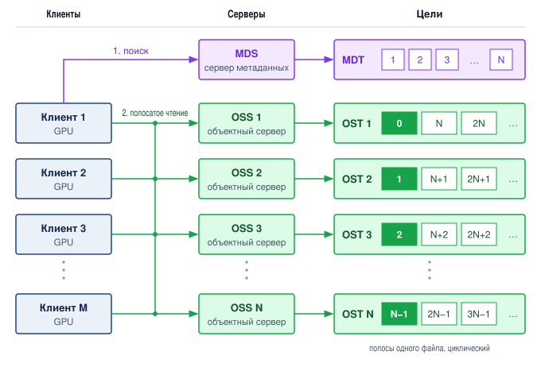
Эта абстрактная архитектура имеет конкретные следствия для настройки производительности. Когда задача обучения создаёт новый каталог датасета в Lustre, администратор настраивает для этого каталога stripe count — число OST, между которыми распределяется файл, — и stripe size — размер блока, записываемого на каждый OST ((Lustre Wiki 2017 г.)). Для больших обучающих шард-файлов с последовательным чтением администраторы могут выбрать более широкое разбиение (striping) и размеры полос в несколько мегабайт, чтобы один файл черпал пропускную способность сразу с нескольких узлов OSS. Руководство Lustre по разбиению считает широкую полосатость полезной для очень больших файлов или файлов, к которым обращается много клиентов, тогда как меньшие файлы часто используют меньше полос, чтобы снизить накладные расходы (Lustre Wiki 2019 г.).
Шард данных объёмом 4 GB, распределённый по 100 OST полосами по 4 MB, размещает на каждом OST примерно по 10 полос. Когда загрузчик данных читает большие непрерывные диапазоны, клиент Lustre может выдавать параллельные запросы на чтение узлам OSS, хранящим эти полосы, суммируя их пропускную способность. Клиент также поддерживает собственный буфер упреждающего чтения (read-ahead), выбирая следующие несколько полос, пока приложение обрабатывает текущие. Такое упреждающее чтение на уровне файловой системы отличается от буфера упреждающей выборки на уровне приложения в загрузчике данных; эти два слоя упреждающей выборки усиливают друг друга и могут скрыть значительную часть задержки обращения к узлам OSS от процесса обучения — при условии, что доставка поспевает.
Разделение путей метаданных и данных — это то, как система в стиле Lustre достигает суммарной пропускной способности, требуемой ML-нагрузками. GPFS8 (IBM Spectrum Scale) — альтернатива с общей шиной (shared-disk), распределяющая данные и метаданные по своим дискам и координирующая конкурентный доступ через распределённую блокировку на основе токенов (Schmuck и Haskin 2002 г.). Её протокол блокировок сохраняет согласованность между клиентами без простого разделения MDS/OSS — ценой более сложного управления блокировками, которое должно масштабироваться до тысяч узлов.
Путь данных масштабируется числом серверов объектного хранения, но каждый файл начинается с запроса к службе метаданных, а у этой службы конечная скорость операций. Именно эта конечная скорость — источник проблемы мелких файлов. Стоимость на одно открытие, возложенная в Глава 4.3.5 на CPU одного узла, теперь ложится на службу метаданных, общую для всего парка. Каждый системный вызов open() требует поиска в метаданных, захвата блокировки и выборки атрибутов. Пусть датасет из миллионов изображений размером 10 KB хранится отдельными файлами, и каждый из 10 000 воркеров — парк, в несколько раз превышающий работающий кластер, — открывает новый файл каждые несколько сэмплов. Тогда суммарная скорость открытий превышает те несколько сотен тысяч операций в секунду, которые обычно выдаёт MDS. MDS становится точкой сериализации, и доставка обрушивается до скорости её операций задолго до насыщения каналов данных.
Определение 4.2: Проблема мелких файлов
Small file problem — это патология загрузки данных в ML, при которой операции над отдельными файлами перегружают службу метаданных системы хранения.
- Значимость: запросы
open,statиcloseот 10 000 воркеров могут сериализоваться на службе метаданных, простаивать кластер и снижать эффективную пропускную способность ввода-вывода. - Различие: это проблема скорости запросов метаданных и задержки
, а не проблема объёмной битовой скорости. - Типичная ошибка: более быстрые SSD не исправляют эту проблему формата. Упаковка сэмплов в последовательные контейнеры, такие как TFRecord или Parquet, распределяет операции с метаданными на множество сэмплов.
В производственном масштабе узкое место в метаданных способно обрушить файловую систему с высокой пропускной способностью. Когда кластер переходит от агрегированных контейнеров обратно к отдельным файлам сэмплов, очереди запросов метаданных насыщаются задолго до того, как серверы хранения или сетевые каналы достигнут своих пределов по битовой скорости.
Пример 4.1: Крах метаданных
Scenario: Крупный обучающий кластер переходит с предобработанного последовательного датасета на 200 million сырых файлов изображений, хранящихся по отдельности в параллельной файловой системе, развёрнутой под 500 GB/s суммарной пропускной способности.
Diagnosis: Файловая система выдаёт менее 1 процента номинальной пропускной способности. Миллионы вызовов stat() и open() в секунду перегружают серверы метаданных, душа загрузчики данных несмотря на изобилие сети и хранилища.
Системный урок: Конкуренция за метаданные ограничивает доставку, когда спрос на операции превышает ёмкость службы метаданных. Упаковка 200 million сырых изображений в 50,000 крупных tar-шардов (например, WebDataset) снижает число файлов в 4,000× и распределяет операции над отдельными файлами на множество сэмплов. Сама по себе упаковка не предотвращает конкуренцию при старте, если загрузчики по-прежнему перечисляют файлы вызовами stat() для каждого файла; распространение заранее вычисленного манифеста датасета убирает эти повторяющиеся поиски с горячего пути. Измеряйте скорость операций с метаданными наряду с битовой пропускной способностью, чтобы определить, какая служба ограничивает доставку.
Разбиение (striping) и агрегация решают разные проблемы. Разбиение распределяет большие файлы по серверам данных, тогда как агрегация — шардинговая упаковка из Глава 4.3.5 — сокращает число файлов, которые должен отслеживать MDS. Реализованная пропускная способность зависит от читателя. Чтение, целиком укладывающееся в одну полосу, использует один сервер, тогда как достаточно много конкурентных чтений, охватывающих несколько полос, могут одновременно черпать данные с нескольких серверов. Поэтому более широкое разбиение помогает лишь тогда, когда размеры чтений и уровень параллелизма задействуют эти пути, а мелким файлам обычно требуется меньше полос.
Параллельные файловые системы предоставляют общее пространство имён и управление блокировками, поддерживающие координированные контрольные точки (Schmuck и Haskin 2002 г.), но два паттерна записи в ML требуют от них разных гарантий. Неизменяемые обучающие шарды устраняют конфликты с конкурентными писателями после публикации версии датасета, так что читателям достаточно согласиться, какая завершённая версия принадлежит запуску. Контрольной точке нужно больше. Блокировки файловой системы координируют отдельные записи, и завершённая запись в один файл не означает, что остальные шарды завершены, поэтому для многофайловой генерации нужен протокол публикации на уровне приложения, объявляющий её восстановимой только после сохранения каждого шарда. Глава 4.6 описывает этот протокол.
Производительность параллельной файловой системы зависит от сбалансированности нагрузки по узлам OSS не меньше, чем от их числа. Если шард использует 10 из 100 одинаково укомплектованных узлов OSS, эти серверы дают не более 10 процентов суммарной серверной пропускной способности системы. Реализованная доставка может быть ниже из-за ограничений клиентов, размера запросов или недостаточного параллелизма. Наоборот, когда множество конкурентных читателей обращаются к шардам, распределённым по всем 100 серверам, спрос распределяется по каждому серверу, и реализованная пропускная способность может приблизиться к номиналу системы — при условии, что клиенты и сеть поспевают. Поэтому размещение и планирование доступа важны наряду с числом серверов хранения, а простой расчёт распределения шардов показывает, как читатели могут скучиться на одном шарде даже при видимом изобилии суммарной ёмкости хранения.
Инженерный расчёт 4.4: Эффект стада: конкуренция за шарды
Задача: Датасет разбит на 1,000 шардов в общей файловой системе. Если 32 workers каждый выбирает шард наугад для начала следующей эпохи, какова вероятность того, что хотя бы два GPU «столкнутся» на одном шарде, создав потенциальную точку горячего чтения? Столкновение шардов не означает столкновение серверов, если только размещение не отображает каждый шард на отдельный сервер.
Расчёт: Это вариант «задачи о днях рождения» из теории вероятностей.
- Вероятность отсутствия столкновения:
. - Вероятность конкуренции:
.
Системный вывод: При 32 workers и 1,000 шардах вероятность столкновения в 40.1 percent указывает на потенциальное горячее место в шардах хранения. Задерживает ли это столкновение воркеров, зависит от размещения шардов, кэширования и доступной ёмкости обслуживания. Координирование назначений шардов может снизить этот источник хвостовой задержки, когда назначения распределяют спрос по независимо обслуживающим устройствам, сохраняя при этом задуманную политику сэмплирования.
В масштабе тысяч узлов хвостовая задержка (Dean и Barroso 2013 г.a) может доминировать в наблюдаемом ожидании ввода. Если шаг обучения требует данных с 100 серверов хранения и каждый независимо имеет вероятность 1 percent оказаться медленным, то вероятность, что все 100 ответят быстро, составляет
Системы могут смягчать хвостовую задержку с помощью хеджированных запросов: после выбранной задержки клиент выпускает избыточное чтение к другой реплике и использует первый корректный ответ. Задержка срабатывания — это компромисс между более быстрым завершением «хвоста» и дополнительной работой (Dean и Barroso 2013 г.b). Модель независимости может перемножать вероятности двух медленных реплик, но общая перегрузка и более поздний старт хеджа лишают силы простую гарантию латентности с квадратом вероятности. Выпуск хеджа при медианном времени ответа продублировал бы примерно половину запросов — ещё до учёта отмены; такая нагрузка способна усугубить ту самую перегрузку, которую механизм призван избежать. Поэтому хедж оправдан только тогда, когда его срабатывание лежит в измеренном хвосте, а добавляемый дублирующий трафик укладывается в запасную ёмкость обслуживания.
↪ Хвостовая задержка как ограничение обслуживания, где маршрутизация и балансировка нагрузки решают, какие запросы не уложатся в цель p99, рассматривается в Балансировка нагрузки и маршрутизация запросов.
Эффективность хеджированных запросов зависит от размещения реплицированных данных. Если обе реплики находятся на узлах OSS за одним и тем же сетевым коммутатором, отказ коммутатора делает обе копии недоступными одновременно. Эффективное хеджирование требует размещения с учётом доменов отказа: реплики должны находиться в разных стойках и соединяться через разные верхние коммутаторы стоек, чтобы отказ любого одиночного компонента затрагивал не более одной реплики.
В производственных кластерах параллельная файловая система — это общая утилита, одновременно обслуживающая множество конкурентных задач обучения с разными паттернами ввода-вывода. В каждый момент одна задача может последовательно стримить текстовые шарды для большой языковой модели, другая — читать случайные шарды изображений для задачи компьютерного зрения, а шторм контрольных точек от третьей задачи может насыщать полосу записи. Эта конкурентность порождает проблему шумного соседа, когда паттерн ввода-вывода одной задачи резко деградирует производительность для всех остальных. Сохранение контрольной точки, потребляющее непропорциональную долю внутренней пропускной способности сети PFS, вызывает всплески задержки чтения у других задач, потенциально останавливая их обучающие конвейеры. Влияние совместного использования легко оценить. PFS с суммарной полосой 1 TB/s, разделяемая 10 конкурентными задачами обучения, даёт в среднем лишь 100 GB/s на задачу. Если шторм контрольных точек одной задачи потребляет 400 GB/s в течение 10 секунд, оставшиеся девять задач делят 600 GB/s — сокращение на 33 процента, способное вызвать остановки данных в их ускорительных конвейерах. Администраторы PFS смягчают это политиками планирования ввода-вывода (уровни качества обслуживания, квоты полосы на задачу), но такие политики усложняют администрирование и могут снижать пиковую пропускную способность отдельной задачи.
Смежная задача — изоляция пространства имён, дающая каждой команде собственное дерево каталогов со своими настройками разбиения. Разным командам и нагрузкам нужны разные конфигурации хранения. Команде, обучающейся на миллионах изображений по 100 KB, сначала нужно агрегировать сэмплы, чтобы сократить операции с метаданными; увеличение количества полос не устраняет работу с метаданными для каждого файла. Команда с большими видео-шардами может использовать более широкое разбиение, когда размеры чтений и параллелизм задействуют дополнительные пути данных. Неверно настроенное разбиение для нагрузки одной команды может создать горячие точки, деградирующие производительность всей общей файловой системы.
Контрольная точка 4.2: Проектирование параллельной файловой системы
Рассмотрим тренировочный кластер из 512 узлов, на каждом из которых работает по 8 GPU. Задача обучения требует совокупной пропускной способности чтения 400 ГБ/с.
Параллельные файловые системы решают проблему общего пространства имён для активных тренировочных кластеров, но их стоимость за байт слишком высока для всего объёма данных организации. Петабайты сырых тренировочных данных, исторических контрольных точек и предобработанных наборов данных, которые ML-организация накапливает за годы, требуют уровня, оптимизированного под ёмкость и долговечность, а не под пропускную способность.
4.3.7 Уровень 4: объектное хранилище
Хранить петабайты сырых корпусов, предобработанных шардированных наборов и исторических контрольных точек на параллельной файловой системе означало бы платить по тарифам серверов с высокой пропускной способностью за данные, которые в основном находятся в состоянии покоя. На масштабе петабайтов объектное хранилище даёт долговечный и более дешёвый фундамент иерархии. Сервисы вроде Amazon S3 и Google Cloud Storage организуют данные в пространствах имён объектов, где объекты извлекаются по ключам, а не по путям в POSIX-каталогах (Amazon Web Services 2026 г.c; Google Cloud 2026 г.). В отличие от файловых систем, которые организуют данные в иерархических каталогах с богатыми метаданными операциями (переименование, ссылки, наследование прав), объектное хранилище рассматривает каждый объект как непрозрачный блоб, идентифицируемый уникальным ключом. Более простой интерфейс меняет набор операций с пространством имён, доступных клиентам; сервис по-прежнему управляет метаданными размещения, версий, контроля доступа и целостности по мере роста ёмкости.
Сервисы вроде Amazon S3 публикуют целевой показатель годовой долговечности «одиннадцать девяток»9 (99,999999999 процента). Кодирование с избыточностью,10 репликация, размещение и восстановление вносят вклад в защиту хранилища, но сама по себе схема кодирования не устанавливает целевой показатель долговечности сервиса. При выборе уровня-источника истины для тренировочных данных и архивов контрольных точек необходимо проверять модель отказов выбранного сервиса наряду с версионированием, политиками жизненного цикла, контролем доступа и тестированием восстановления.
Три различных гарантии определяют, пригоден ли этот источник истины к использованию. Долговечность спрашивает, переживают ли подтверждённые данные отказы; доступность — отвечает ли сервис хранилища, когда клиенту он нужен; согласованность — какую версию разрешено наблюдать при чтении, когда записи пересекаются или реплики расходятся. Репликация может улучшить долговечность и доступность, но сама по себе не гарантирует, что читатель увидит новейшую зафиксированную контрольную точку. Поэтому дизайн восстановления должен фиксировать все три свойства, а не считать процент долговечности полным контрактом надёжности.
Определение 4.3: Кодирование с избыточностью
Кодирование с избыточностью (erasure coding) защищает хранимые данные, добавляя избыточные фрагменты; рассматриваемая здесь схема Рида — Соломона кодирует
- Значимость: Кодирование позволяет защититься от потери фрагментов с меньшими накладными расходами на ёмкость, чем полная репликация. Код Рида — Соломона 4+2 хранит четыре фрагмента данных и два фрагмента чётности, допуская недоступность двух фрагментов при накладных расходах 1,5
вместо 3 при тройной репликации. Фактическая долговечность также зависит от корреляции отказов, размещения, обнаружения и восстановления. - Отличие: В отличие от репликации (которая хранит полные копии), кодирование с избыточностью использует математическое кодирование (например, Рида — Соломона) для распределения избыточной информации по различным доменам отказов (диски, стойки или площадки).
- Типичная ошибка: Распространённое заблуждение — считать кодирование с избыточностью «бесплатной долговечностью». На деле это компромисс между задержкой и вычислениями: восстановление данных после отказа требует дополнительных циклов CPU и увеличивает задержку p99 при чтении из хранилища.
Кодирование с избыточностью позволяет сервису восстанавливать данные без того, чтобы приложение обучения управляло фрагментами. В рассматриваемой форме сервис хранит исходные
Объектное хранилище также дешевле за байт. При представительном тарифе $0.02/GB/month его регулярная ставка за ёмкость в 5× раз ниже тарифа локального NVMe из Таблица 2, а Глава 4.8 переводит это соотношение в годовые затраты для набора данных размером 100 TB. Сравнение же со стоимостью приобретения HBM дополнительно требует допущения о сроке службы и утилизации железа. Это ценовое преимущество делает объектное хранилище типичным домом для озера тренировочных данных организации, где сырые данные, предобработанные наборы и архивные артефакты моделей могут долговечно размещаться.
Задержка запросов тоже важна. Проектные оценки используют 50–100 мс для GET-запроса объекта как представительский диапазон для планирования, а не универсальную гарантию сервиса. Значительная часть этой задержки — цена непрямого обращения, которое обеспечивает долговечность. Сервис ищет местоположение объекта в распределённом индексе метаданных, определяет, какие фрагменты читать, извлекает их с потенциально разных узлов хранения и восстанавливает данные, когда фрагмент недоступен — и всё это поверх клиентского сетевого пути и очередей. Крупные передачи распределяют накладные расходы на запрос на большее число байтов, тогда как мелкие передачи могут проводить большую часть времени на этих накладных расходах. Поэтому размер запроса и параллелизм входят в бюджет доставки наряду с совокупной пропускной способностью.
Средство против этого — шардированная упаковка из Глава 4.3.5, применённая здесь к задержке запросов, а не к операциям с метаданными. Форматы вроде WebDataset (Aizman и др. 2019 г.) или Mosaic Streaming (Databricks 2026 г.) упаковывают сэмплы в шардированные файлы по несколько гигабайтов, превращая высокозадержанный случайный доступ в высокополосное последовательное потоковое чтение. Вместо выдачи миллиардов мелких GET-запросов загрузчик данных выполняет сотни крупных чтений параллельно, каждое из которых извлекает целый шардированный файл, содержащий тысячи сэмплов. При достаточном параллелизме и совмещённой сетевой ёмкости объектное хранилище может поддерживать высокую совокупную пропускную способность — достаточную, чтобы кормить крупные тренировочные кластеры для некоторых рабочих нагрузок. Потоковая схема работает так: каждому воркеру загрузчика данных назначается подмножество шардированных файлов, которые он читает последовательно. Внутри каждого шардированного файла сэмплы хранятся непрерывно, поэтому воркер декодирует их по порядку и перемешивает в локальном буфере. Такой подход достигает псевдослучайного доступа по набору данных, сохраняя последовательный ввод-вывод на уровне хранилища.
Архитектура потокового загрузчика данных для объектного хранилища отличается от загрузчика для локального хранилища важными аспектами. Загрузчик для локального хранилища может использовать отображение на память (memory-mapped I/O), рассматривая набор данных как регион виртуальной памяти и полагаясь на механизм страничных отказов операционной системы для загрузки данных по требованию. Этот подход элегантен, но несовместим с объектным хранилищем, которое отвечает на HTTP-запросы, а не предоставляет POSIX-интерфейс файловой системы, требуемый для отображения на память. Вместо этого загрузчик для объектного хранилища должен явно управлять HTTP-соединениями, выдавать ranged GET-запросы на конкретные диапазоны байтов внутри шардированных файлов, обрабатывать повторы при переходных отказах и управлять локальным пулом буферов для декодированных сэмплов. Библиотеки вроде WebDataset и Mosaic Streaming инкапсулируют эту сложность, предоставляя тренировочному циклу простой интерфейс итератора, а HTTP-транспорт и буферизацию управляют внутри.
Применение этой потоковой архитектуры к сквозному примеру делает дизайн конкретной альтернативой поэтапному пути, который избирает глава. Вместо копирования шардированных файлов на локальный NVMe в начале задачи кластер читал бы их из объектного хранилища на протяжении всего запуска. Токенизированный тренировочный набор хранится в объектном хранилище типа S3 в виде примерно 2,000 шардированных файлов по 3 GB каждый. Потоковая архитектура назначает каждому из 256 вычислительных узлов уникальное подмножество примерно из 8 шардированных файлов. Внутри каждого узла 8 воркер-процессов загрузчика данных выдают параллельные HTTP-запросы Range для получения чанков по 256 МБ из назначенных им шардированных файлов. По кластеру это даёт 2,048 параллельных запросов, что позволяет достичь совокупной пропускной способности в диапазоне 50–100 ГБ/с, когда объектное хранилище и сетевой путь рассчитаны на это, — намного больше, чем примерно 167.8 MB/s, требуемых универсальной текстовой задачей в сравнении текста и изображений. Средняя потребность во вводе сквозного примера ещё ниже. Сеть между виртуальным частным облаком (VPC, изолированная сеть внутри провайдера) вычислительного кластера и конечной точкой объектного хранилища может ограничивать потоковую пропускную способность, но при этих провижинированных ставках сервиса лимит всё ещё превышает то, что нужно текущей задаче. Организации, совмещающие вычисления и хранение в одной зоне доступности облака (изолированная площадка дата-центра провайдера), могут снизить межсетевую задержку, что уменьшает требуемую глубину буфера предзагрузки для задач с короткими шагами и улучшает общую эффективность конвейера.
Именно такой параллелизм запросов поощряет объектное хранилище. Каждый из 2,048 GET-запросов независим и может обслуживаться другим узлом хранения в инфраструктуре облачного провайдера, а их количество растёт вместе с парком. Когда каждый запрос получает чанк в 256 МБ шардированного файла, совокупная пропускная способность зависит от сетевой ёмкости облачного провайдера, внутренней пропускной способности и квот на частоту запросов. Практическим лимитом чаще всего является пропускная способность сети между вычислительным кластером и сервисом объектного хранилища, а не пропускная способность внутренних носителей самого сервиса хранилища.
Многие сервисы объектного хранилища предоставляют сильную согласованность «чтение после записи», означающую, что последующее чтение подтверждённого объекта видит завершённую запись. Amazon S3 объявил сильную согласованность «чтение после записи» для записей и перезаписей объектов, вместе со строгосогласованным листингом, в декабре 2020 года (Amazon Web Services 2020 г.). Релевантный контракт — документированное поведение выбранного бэкенда, а не безусловное допущение о любом объектном хранилище. Пост-объектная согласованность всё же не делает атомарной контрольную точку, охватывающую множество объектов, поэтому протокол публикации из Глава 4.6 применим и здесь, как и на файловой системе.
Масштаб ML-наборов данных делает их уязвимыми к тихому повреждению данных: неуловимым переворотам битов в носителе или при сетевой передаче, способным внести в тренировку артефакты, которые почти невозможно диагностировать. Сервисы объектного хранилища предоставляют контрольные суммы по каждому объекту, проверяющие целостность при загрузке, копировании или скачивании; Amazon S3, например, документирует варианты контрольных сумм, включая семейство CRC и криптографические хэши (Amazon Web Services 2026 г.a). Параллельные файловые системы часто полагаются на нижележащий RAID или кодирование с избыточностью для физической целостности, но могут не предоставлять сквозные контрольные суммы, видимые приложению. Грамотно спроектированный крупномасштабный ML-конвейер вычисляет и хранит контрольную сумму для каждого шардированного файла при предобработке и проверяет её при первой загрузке файла тренировочным воркером. Накладные расходы на проверку ничтожны по сравнению со стоимостью тренировки на повреждённых данных, и контрольные точки нуждаются в той же проверке, поскольку перевёрнутый бит в восстановленном состоянии может заставить тренировку тихо разойтись после восстановления.
↪ Обнаружение и проверка тихого повреждения данных по всему парку, включая восстановленные контрольные точки, развёрнуто в Проверки и верификация против незаметного повреждения данных.
Тренировочные наборы данных могут содержать чувствительную информацию, включая персональные данные, собственнический текст и лицензированные изображения. Дизайн хранилища должен проводить политики доступа и хранения организации через каждую копию. Объектные сервисы раскрывают политики идентичности и варианты шифрования; параллельные файловые системы предоставляют POSIX-права и списки контроля доступа. Покрытие аудита и принуждение зависят от настроенной платформы, а не от названия уровня. Версионированные манифесты должны идентифицировать производные шардированные файлы и удерживаемые копии, чтобы обзоры доступа, решения о хранении и рабочие процессы удаления могли найти соответствующие артефакты; запрос на удаление, например, должен дойти до каждого неизменяемого предобработанного шардированного файла, производного от удалённой записи. Средства контроля хранилища защищают хранимые байты; оценка того, что удерживает обученная модель, требует дополнительного анализа на уровне модели.
Переход с уровня 4 на уровень 5 обусловлен прежде всего экономикой. Редко используемые данные следует переносить в архивное хранилище, когда позволяют задержка извлечения и требования управления, потому что архивная ёмкость ещё дешевле.
4.3.8 Tier 5: архив и холодное хранилище
Архивные сервисы, такие как S3 Glacier, сохраняют редко используемую родословную данных (устаревшие контрольные точки, исходные сырые корпуса и журналы обучения) на горизонте нескольких лет, чтобы развёрнутую модель можно было воспроизвести или проверить путём аудита спустя годы после завершения её запуска. При представительном значении $0.004/GB/month архивное хранилище в 5× раз дешевле, чем предположение об объектном хранилище $0.02/GB/month, использованное в Глава 4.3.7, — в обмен на более низкую тарифную ставку приходится принимать задержку извлечения, измеряемую минутами и часами, что делает этот уровень непригодным для оперативного доступа. На кону — провенанс обучающих данных: связь от развёрнутой модели к тем точным версиям данных, гиперпараметрам и препроцессингу, которые её породили. Политика управления данными в организации определяет, какие записи и на какой срок сохранять, а дизайн хранилища должен сохранять их идентифицируемыми и извлекаемыми в течение этого периода; архив подходит, когда его задержка извлечения отвечает требованиям, тогда как записи, нужные при частых расследованиях, могут оправдать более «тёплый» уровень.
Автоматизированные политики жизненного цикла управляют переходом данных между уровнями на основе давности доступа. В качестве иллюстрации того, как такая автоматизация выражается, правило на основе времени для ML-инфраструктуры может перемещать контрольные точки следующим образом. Три самые свежие контрольные точки остаются на параллельной файловой системе для быстрого восстановления. Контрольные точки старше 72 часов переносятся в объектное хранилище, а контрольные точки старше 90 дней — в архивное хранилище. Контрольные точки старше двух лет удаляются, если они не помечены для нормативного хранения. Правила S3 Lifecycle предоставляют тот же общий механизм перехода/архивации/удаления для сроков жизни объектов (Amazon Web Services 2026 г.b). Удержание контрольных точек в сквозном примере из Глава 4.6 принимает вариант той же идеи на основе количества, где правило перехода привязано не к возрасту, а к числу контрольных точек. Без автоматизации команды либо копят данные на дорогих уровнях (тратя бюджет), либо удаляют данные слишком агрессивно (теряя воспроизводимость). Политика жизненного цикла кодирует компромисс «стоимость–восстанавливаемость» организации в декларативном правиле, не требующем ручного вмешательства.
Для обучающего запуска модели 175B архивный уровень хранит полную родословную обучения: сырой сжатый исходный корпус объёмом 3 TB, сериализованный набор шардиров объёмом 6 TB, все скрипты препроцессинга, финальную контрольную точку и выборочное подмножество промежуточных контрольных точек. Ёмкость должна учитывать каждую удерживаемую полную контрольную точку, а также оба представления корпуса; Таблица 5 вычисляет этот итог для заявленной политики удержания. Асимметрия между стоимостью архива и стоимостью вычислений делает удержание данных дешёвым по сравнению с самим запуском, который оно документирует; сбои архивации обычно объясняются отсутствием ответственного за жизненный цикл, неясной политикой удержания или заброшенным процессом извлечения, а не собственно стоимостью ёмкости.
Архивные сервисы предлагают несколько скоростных уровней извлечения, каждый со своей ценой. В сервисе в духе S3 Glacier стандартное извлечение может завершиться за часы при умеренной стоимости, ускоренное — за минуты при более высокой цене, а пакетное (bulk) извлечение может обменять ещё большую задержку на самую низкую цену (Amazon Web Services 2026 г.d). Выбор уровня извлечения зависит от срочности сценария использования. Судебный анализ производственного инцидента оправдывает более быстрое извлечение; ежегодные комплаенс-аудиты могут использовать более медленное пакетное извлечение. Проектирование политики жизненного цикла требует понимания стоимости хранения, ожидаемой частоты извлечения и срочности для каждого класса данных.
Теперь у шести уровней есть свои роли, ёмкости и цены, но роль не говорит, насколько быстро байты должны подниматься по иерархии. Эта скорость задаётся ускорителями, которые их потребляют, и это следующая величина, которую предстоит вывести.
4.4 Уравнение конвейера данных
Стримится ли обучающее задание из объектного хранилища или читается с локального NVMe, следующий батч каждого воркера должен попасть в HBM до того, как завершится текущий шаг вычислений; если этого не происходит, ускорители парка простаивают из-за голода по данным, а выделение ёмкости значительно выше потребности замораживает капитал в простаивающей пропускной способности хранилища. Поэтому размерирование иерархии начинается с преобразования скорости потребления ускорителей в требуемую скорость в байтах. Уравнение пропускной способности конвейера данных в Уравнение 2 количественно определяет полосу, которую конвейер должен поддерживать для целевой скорости обучения:
где
Целевая доля определяет, какую скорость должен обеспечить конвейер. Устранение устойчивых задержек на входе требует размерирования конвейера под полную потребность, что подаёт батчи на полной скорости вычислений. Целевая доля ниже единицы размерирует его под более медленную скорость обучения, которую команда согласилась принять. Эта цель — доля активного времени, а не утилизация FLOPs модели. Если время итерации уже включает простои, повторное умножение на целевую долю учтёт замедление дважды. Сравнение текста и изображений в блокноте 4.1 уже применяло это уравнение с
Уравнение потребности размерирует endpoint на стороне ускорителя, но байты должны пройти всю цепочку обслуживания. Пусть
Ёмкость на одном уровне не может компенсировать более медленный следующий этап. Сжатие может поднять скорость чтения из хранилища, снизив скорость декодирования; дополнительные воркеры загрузки могут поднять пропускную способность декодирования, насытив этап памяти хоста или PCIe. GPUDirect Storage (Глава 4.5) может исключить этап копирования на хосте из цепочки, что поднимает минимум, когда именно это копирование является ограничивающим этапом или отнимает ядра у того этапа, который им является. Сквозное неравенство в Уравнение 3 превращает иерархию главы, таким образом, в проверяемый контракт. Измерьте каждый этап при представительной конкурентности, а затем выделите ресурсы или перекройте этап с минимальной скоростью обслуживания.
Уравнение пропускной способности в Уравнение 2 открывает четыре рычага воздействия на потребность в хранилище, и ни один из них не бесплатен. Сокращение числа ускорителей (
Последствия отставания отражает коэффициент простоя по данным, определённый в Уравнение 4 как доля каждого шага обучения, в течение которой ускоритель ждёт данные:
Коэффициент простоя по данным охватывает входной путь одного воркера, не учитывая коммуникацию, поэтому его
Инженерный расчёт 4.5: Коэффициент простоя по данным
Задача: GPU обрабатывает батч за 200 ms, но хранилищу требуется 250 ms, чтобы доставить следующий батч. Какая доля каждого шага обучения приходится на простой ускорителя и насколько конвейеризация I/O и вычислений сокращает этот простой?
Без конвейеризации (последовательно: I/O, затем вычисления):
С конвейеризацией (I/O перекрыто с вычислениями):
Системный вывод: даже при конвейеризации ускоритель простаивает 20 percent времени. Чтобы полностью устранить простой, следующий батч должен прибыть в пределах окна вычислений 200 ms — либо за счёт повышения эффективной полосы хранилища, либо за счёт добавления параллельных потоков ввода-вывода. Более глубокие буферы предвыборки здесь не помогут, поскольку время доставки превышает окно вычислений на каждом шаге, а не только в хвосте.
Коэффициент простоя по данным измеряет время, потерянное в ожидании входных данных, относительно выбранного окна итерации. Приемлемое время простоя зависит от целей парка по стоимости и пропускной способности; порог — это выбор политики, а не универсальная граница здоровья хранилища. Инструментируйте моменты готовности батчей и исполнение ускорителя в одном трейсе, чтобы отличить голодание по входным данным от синхронизации, препроцессинга на CPU и других интервалов простоя. Универсальные профилировщики могут показать эти события, но сам по себе простаивающий ускоритель не указывает на хранилище как на причину.
↪ Целевой показатель эффективности по I/O-ожиданию для оси Data парка разрабатывается в Оценочная карта диагностики парка.
Конвейер хранилища, уложившийся в бюджет на момент запуска, может выйти из него по мере роста наборов данных, конкуренции заданий и износа дисков, поэтому ему нужен непрерывный мониторинг, чтобы тихие узкие места не подтачивали эффективность обучения. Ключевые метрики для отслеживания в реальном времени: утилизация полосы по уровням (NVMe, сеть, объектное хранилище), глубина буфера предвыборки (сколько батчей стоит в очереди и готово), коэффициент простоя по данным на каждый GPU, скорость метаданных параллельной файловой системы и индикаторы здоровья NVMe-дисков (уровень износа, температура, счётчики ошибок). Пороги оповещений должны срабатывать раньше, чем простои станут видимыми на кривых loss обучения. Недетектированный рост коэффициента простоя по данным на 5 процентов на эталонном кластере из 1,024 GPU (половина сквозного кластера) всего за одну неделю — это около $17,203 потерь в простаивающих вычислениях (1,024 GPU
Диагностируйте простой хранилища на трёх уровнях. Таймлайн приложения показывает, когда ждёт ускоритель; скорости воркеров и глубина очереди указывают этап конвейера, который отстаёт; счётчики устройств и общих серверов показывают, какой ресурс ограничивает этот этап. Сопоставление этих наблюдений отличает нехватку полосы в байтах от конкуренции за метаданные или недостаточной ёмкости декодирования. Поскольку небольшой разрабатываемый набор данных может скрыть конкурентность и накопленное состояние производственного запуска, стресс-тест конвейера должен использовать представительный объём данных и конкурентность и работать достаточно долго, чтобы выявить исчерпание очередей, утечки ресурсов и давление на память до того, как загрузчик будет связан с дорогим обучающим заданием.
Члены уравнения Уравнение 2 объясняют, почему рабочие нагрузки главы предъявляют столь разные требования к одному и тому же кластеру. В сравнении полос из блокнота 4.1 классификация изображений с ResNet-50 на ImageNet сочетает крупные сжатые примеры (в среднем 116 KB на изображение) с короткими итерациями (100–200 мс), поднимая
↪ Обучающие данные на устройствах и федеративные обновления разбираются в Периферийный интеллект.
MLPerf Storage измеряет эти профили на продуктивных хранилищах. Каждая поданная заявка эмулирует набор ускорителей, потребляющих образцы с фиксированным временем вычислений на образец, поэтому темп задаёт хранилище, а не реальный GPU. Каждая заявка сообщает о пропускной способности чтения, которую система поддерживала, удерживая эмулируемые ускорители занятыми не менее чем на 90 процентов (70 процентов для CosmoFlow, обучающегося на данных трёхмерного космологического моделирования) (MLCommons 2024 г.; Devarajan и др. 2021 г.). Среди 124 зачтённых результатов закрытого дивизиона раунда 2024 года устойчивая пропускная способность растёт пропорционально числу эмулируемых ускорителей, как предсказывает член
В пересчёте на один ускоритель медианная потребность различается примерно в 15× между рабочими нагрузками. ResNet-50 требователен по меркам классификации изображений, однако он самый лёгкий из трёх, поскольку его образцы — небольшие двумерные изображения, тогда как 3D U-Net читает целые медицинские объёмы. Эмулируемый H100 требует около 2.8 GB/s для 3D U-Net на медицинских объёмах, 0.55 GB/s для CosmoFlow и 0.18 GB/s для ResNet-50 (Рисунок 3, панель b). Эмуляция H100 вместо A100 повышает потребность каждой рабочей нагрузки в 1.6–2×, потому что более быстрый ускоритель сокращает
В идеальном перекрывающемся конвейере отношение пропускной способности к потребности ограничивает долю активного времени вычислений (Рисунок 4). Если входная потребность определена как байты батча, делённые на непрерываемое время вычислений, граница растёт линейно через режимы, ограниченные пропускной способностью, прежде чем выйти на плато в колене насыщения, где предложение равно потребности (отношение = 1). Доля активного времени равна меньшему из единицы и отношения доступной пропускной способности к этой потребности — в предположении отсутствия прочих узких мест.
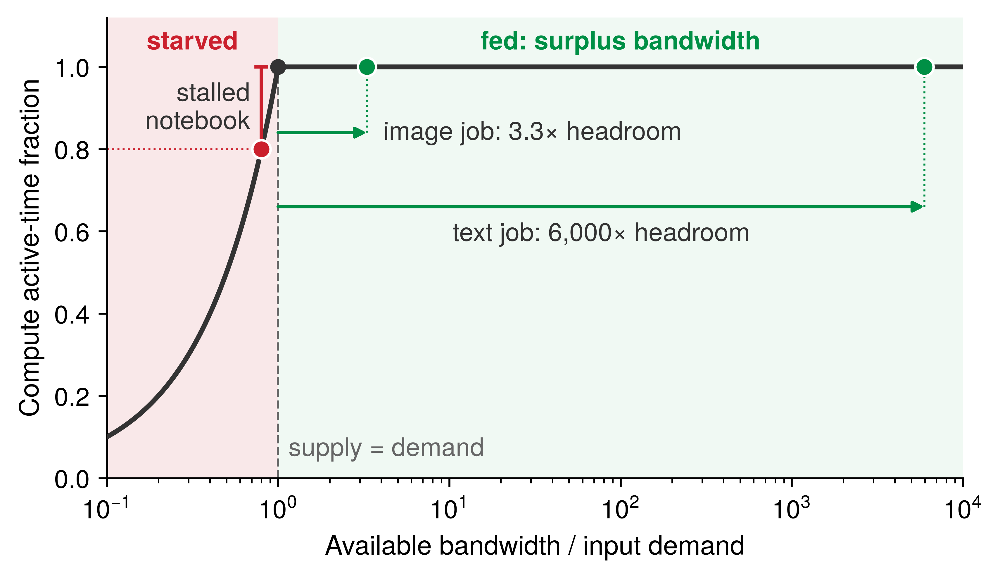
Ниже точки совпадения предложения с потребностью рост пропускной способности пропорционально увеличивает идеальную долю активного времени. Выше неё дополнительная пропускная способность не улучшает этот идеальный этап вычислений, хотя запас может помочь поглощать конкуренцию и нестабильность доставки. Маркеры показывают, насколько далеко разнесены рабочие нагрузки главы. Обслуживаемая всем параллельным файловым хранилищем 1 TB/s, текстовая задача блокнота 4.1 располагает примерно в 6,000× большей пропускной способностью, чем потребляет, задача с изображениями — лишь в 3.3×, а конвейер блокнота 4.5 находится слева от колена с 80 percent активного времени. Реальные системы могут опускаться ниже кривой из-за предобработки, хвостов задержек или синхронизации. График определяет границу скорости обслуживания рабочей нагрузки; он не устанавливает, что каждой задаче нужны все уровни хранилища.
Поскольку
4.4.1 Конвейеризация и предзагрузка
Если загрузчик данных ждёт, пока GPU завершит батч
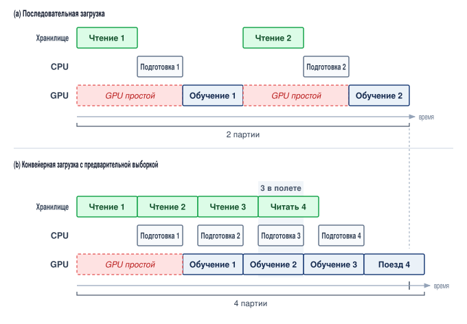
Конвейеризация превращает последовательное узкое место в перекрывающееся исполнение (Рисунок 5), однако непрерывная загрузка всех ступеней требует буфера предвыборки достаточно большой глубины, чтобы поглощать вариацию задержки ввода-вывода. Длительности ступеней не обязаны быть детерминированными, если готовые батчи покрывают задержки. Системы хранения испытывают джиттер ввода-вывода: вариацию задержки чтения, вызванную конкуренцией и фоновой работой. NVMe-накопители страдают от случайных всплесков задержки во время внутренней сборки мусора (когда контроллер реорганизует блоки NAND flash) или операций выравнивания износа. Параллельные файловые системы получают всплески, когда несколько обучающих задач конкурируют за одни и те же узлы OSS, когда MDS обрабатывает всплеск операций с метаданными или когда фоновая проверка целостности обнаруживает и исправляет битовые ошибки. Объектное хранилище также демонстрирует задержки из-за конкуренции за общие сервисы и обслуживания.
Один медленный ввод-вывод создаёт «пузырь», когда он исчерпывает готовую работу конвейера. Если CPU готовит батч
Буфер, размер которого рассчитан на измеренную задержку I/O p99, нуждается в достаточном количестве готовых батчей, чтобы покрыть эту задержку без опустошения:
Уравнение глубины предвыборки в Уравнение 5 оценивает, сколько готовых батчей покрывает выбранное окно задержки. Незавершённые чтения участвуют в пополнении этого буфера, но не считаются готовыми батчами, пока не завершатся. Уравнение предполагает, что долгосрочная скорость подачи данных не ниже скорости потребления ускорителя; предвыборка поглощает вариацию задержки, а не устойчивый дефицит пропускной способности. Когда средняя пропускная способность достаточна, но задержка p99 превышает время вычислений, более глубокая предвыборка поглощает задержки в пределах выделенного окна; более редкие или коррелированные задержки всё же могут вызывать простои. Когда устойчивая доставка ниже спроса, определите ограничивающую ступень, прежде чем выбирать большую пропускную способность хранилища, дополнительную мощность декодирования, другое представление или локальное промежуточное хранение. В уравнении используется задержка p99, а не средняя, потому что буфер, рассчитанный на среднее, опустошается всякий раз, когда приходит медленное чтение, а арифметика хвостовой задержки в Глава 4.3.6 показывает: когда шаг зависит от многих серверов, на большинстве шагов какое-то чтение оказывается медленным. Даже окно p99 оставляет более редкие события и коррелированные прерывания на тестирование.
Если чтения из объектного хранилища занимают 500 ms на 99-м перцентиля, а вычисления — 200 ms, то
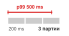
Чтение p99 длительностью 500 ms охватывает 2.5 шагов по 200 ms, поэтому покрыть его должны three готовых батчей.
Задача с изображением из ноутбука 4.1 показывает, как глубина буфера предвыборки следует за уровнем обслуживания. Каждый GPU обрабатывает свой батч примерно за 200 ms, и после декодирования его 256 изображений в тензоры по
Эти глубины готовых батчей напрямую переводятся в потребление DRAM хоста. При 40 MB на батч буфер предвыборки глубины 5 на GPU потребляет 200 MB, а 8 GPU на узел потребляют 1.6 GB. При 40 MB на батч и глубине 1 тот же узел нуждается лишь в 320 MB. Измеренные задержки доставки, размер батча и выбранное окно защиты определяют этот бюджет памяти. Заполненность очереди и скорость пополнения всё же нужно проверять при коррелированных задержках.
Представление решает, дёшево ли обходится эта глубина. Текст едва заметен: батч на GPU из нескольких упакованных последовательностей по 4 096 токенов занимает десятки килобайт, так что даже глубокая текстовая очередь пренебрежимо мала. Декодированные изображения — то, где глубина стоит памяти. Батч из 256 изображений выше составляет примерно 39 MB до округления, а буфер из 8 таких батчей потребляет около 308 MB на GPU — скромно против 512 GB DRAM на узле даже после умножения на число GPU на узле. Изображения более высокого разрешения и видео повышают размер батча на порядок и более, и тогда буфер предвыборки конкурирует с таблицами эмбеддингов и другими потребителями DRAM.
Предвыборка и иерархия хранения вместе образуют многоуровневую защиту от простоев. Буфер предвыборки в DRAM хоста поглощает вариацию ввода-вывода при чтениях с NVMe. Локальный кэш NVMe поглощает сетевую вариацию от общего хранилища (будь то параллельная файловая система или объектное хранилище). Кэш упреждающего чтения параллельной файловой системы поглощает вариацию от дисковых позиционирований по кластеру OSS. Поскольку каждый уровень добавляет устойчивость к задержке ценой памяти или ёмкости хранилища, проектировщик системы должен сверить каждый активный путь с окном прерывания, которое он призван поглощать, и убедиться, что устойчивая доставка восполняет потреблённые батчи.
Задача с изображениями показывает, что даёт промежуточное размещение (staging), когда шаги короткие. Против её хранилища объектов с p99 500 ms и шага 200 ms требуется 3 готовых батчей, тогда как попаданию на локальный NVMe при 50 ms достаточно лишь 1. Работающий пример с 175B находится на другом конце шкалы. Против его моделируемого шага в 4.64-second даже p99 хранилища объектов составляет около 11 percent одного шага, поэтому
Контрольная точка 4.3: Проектирование конвейера данных
Учебный кластер размером с референсный кластер этой книги использует 1,024 GPU с батчами из 128 изображений (116 KB на изображение после сжатия, 150 мс на итерацию).
4.4.2 Загрузка данных несколькими воркерами
Один ядро CPU не может обеспечить данными высокопроизводительный ускоритель, даже когда аппаратное обеспечение хранилища достаточно быстрое, из-за работы CPU, необходимой между чтением из хранилища и передачей на GPU. Для обучения на изображениях декодирование изображения 116 KB JPEG в сырой тензор
Решение — загрузка данных несколькими воркерами, где
Количество воркеров
Загрузка несколькими воркерами также должна сохранять качество перемешивания, не отказываясь от эффективности I/O. При перемешивании на уровне шардированных данных и внутри шардов из Глава 4.2 загрузчик назначает каждому воркеру непрерывные группы перемешанного списка шардированных данных, и адекватность этого смешивания зависит от того, как шарды были построены. Корпус, чьи шарды внутренне однородны — например, один источник или один класс на шард, — требует более мелких шардов или большего буфера перемешивания, поэтому раскладку следует проверить по кривой потерь полностью перемешанного базового варианта на подмножестве, прежде чем запуск зафиксирует её.
Размер буфера перемешивания создаёт компромисс между памятью и случайностью. Больший буфер обеспечивает лучшую случайность (поскольку образцы извлекаются из более крупного пула), но потребляет больше DRAM хоста. Для работающего примера с текстовыми данными буфер перемешивания из 10,000 последовательностей по 2,048 токенов, где каждый токен представлен целым числом в 4 байт, потребляет примерно 82 MB. Это пренебрежимо мало относительно 512 GB DRAM хоста. Для данных изображений, где каждое декодированное изображение занимает 151 KB, буфер перемешивания из 10,000 изображений потребляет 1.5 GB — всё ещё приемлемо, но уже нетривиальная доля бюджета предвыборки. Проектировщик загрузчика данных должен сбалансировать размер буфера перемешивания и глубину предвыборки, поскольку оба конкурируют за одну и ту же ёмкость DRAM хоста.
Конвейер загрузки данных — от чтения из хранилища через декодирование, аугментацию и передачу на ускоритель — является полной системой доставки «топлива» для обучающего движка, и когда любая стадия становится узким местом, ускоритель голодает. Локальные чтения могут сократить ожидание сети и разделяемого хранилища, что делает размещение шардов по узлам следующим решением, когда этот путь ограничивает доставку.
4.4.3 Локальность и размещение данных
Даже когда на узле достаточно процессорных воркеров, чтобы декодировать батчи на полной скорости, выборка каждого шарда через сеть разделяемого хранилища подвергает обучающий цикл перегрузкам fabric и очередям удалённых сервисов. Размещение шардов на локальном для узла NVMe устраняет конкуренцию за разделяемую сеть, тогда как хранение их в удалённой параллельной файловой системе или хранилище объектов сохраняет единый общий пул, который любой узел может читать без предварительного копирования данных. Поскольку преимущество локального NVMe зависит и от дискового страйпа узла, и от пропускной способности на клиента, которую может поддержать удалённый уровень, решения о размещении должны сравнивать измеренные скорости клиентов, а не предполагать фиксированное локально-удалённое отношение.
Решение о промежуточном размещении определяет, где задача платит за перемещение данных: до начала обучения, в течение первой эпохи или в каждой эпохе. Простейшая стратегия — статическое размещение, или предварительное размещение (prestaging). В начале обучающей задачи оркестратор назначает каждому узлу фиксированное подмножество шардированных данных, и узел копирует свои шарды из разделяемого хранилища (хранилище объектов в работающем примере, параллельная файловая система во многих локальных кластерах) на локальные NVMe-накопители до первой итерации. Чтения остаются локальными, пока назначенные шарды помещаются, а политика сэмплирования использует это назначение, что даёт наивысшую установившуюся пропускную способность ценой самого длинного стартового задерживания. Размещение датасета 10 TB на 256 nodes при 500 MB/s на узел занимает примерно 80 seconds в идеальных условиях, а конкуренция за разделяемую полосу может растянуть этот простой до нескольких минут. Изменённый датасет или назначение требует повторного размещения, поэтому политика размещения должна сохранять предполагаемое распределение образцов, а также локальную пропускную способность.
Альтернатива — динамическое размещение, или размещение по запросу (on-demand staging), где узлы извлекают шарды из разделяемого хранилища, когда загрузчик данных впервые обращается к ним, и удерживают их локально для повторного использования. Это устраняет начальную задержку и поддерживает датасеты, превышающие совокупную ёмкость локального NVMe, и политики сэмплирования, меняющие активное подмножество со временем, но первая эпоха платит полную стоимость сетевого чтения. Промахи кэша потребляют пропускную способность разделяемого хранилища и открывают удалённую задержку, если предвыборка её не скрывает; попадания в кэш сохраняют преимущество локальных чтений, поэтому шаблон окупается, когда последующие эпохи перечитывают закэшированные шарды.
Кэш-взгляд из Уравнение 1 ставит число на этот компромисс. Возьмём мультимодальную задачу из Глава 4.3.4, чей корпус 35 TB переполняет 30.7 TB локального NVMe узла. Если задача сэмплирует равномерно и кэш удерживает эту долю корпуса, около 88 percent чтений попадают в локальный страйп 28 GB/s, а оставшиеся 12 percent уходят в долю 4 GB/s параллельной файловой системы узла. Скорость доставки последовательного загрузчика — это тогда гармоническое среднее, около 16 GB/s, лишь 58 percent от полностью локальной скорости. Время обслуживания здесь — время доставки одного байта, поэтому загрузчик усредняет время на байт по попаданиям и промахам, а не усредняет две пропускные способности напрямую. Промахов около одного из восьми стоит примерно две пятых пропускной способности, потому что каждый пропущенный байт занимает в 7× дольше, чем попадание, и это среднее — оптимистичный случай; промахи, сгруппированные во времени, опустошают буфер предвыборки быстрее, чем подсказывает среднее.
Потоковая передача (streaming) вообще не хранит данные локально, читая записи из параллельной файловой системы или хранилища объектов в каждой эпохе. У неё нет стартовой задержки и не требуется ёмкость локального NVMe, но каждая эпоха снова поглощает стоимость сетевого чтения. По одной только стоимости передачи потоковая передача подходит для предобучения за одну эпоху, которое читает каждый байт один раз, и для датасетов, превышающих совокупную локальную ёмкость кластера. Работающий пример с одной эпохой всё же выполняет промежуточное размещение — по причинам хвостов задержки, а не платы за передачу, как показывает Глава 4.8.
Более продвинутый подход — планирование с учётом локальности. Планировщик отслеживает, какие шардированные данные закэшированы на локальных NVMe-накопителях каких узлов. Когда он запускает новую задачу или заменяет отказавший узел, он предпочитает узел, у которого уже закэшированы требуемые данные, вместо того чтобы считать все узлы взаимозаменяемыми. Это использует принцип гравитации данных,11 — совместное размещение вычислений с данными для минимизации времени передачи. Планирование позволяет избежать копирования при промежуточном размещении только когда доступный узел содержит требуемые, проверенные версии шардов. Следующее требование, следовательно, — идентифицировать кэшированное содержимое достаточно точно, чтобы безопасно использовать его повторно.
Для сериализованного набора данных объёмом 6 TB, распределённого по 256 узлам, на каждый узел приходится примерно 23.4 GB данных. При отказе узла его замена должна заново выставить (stage) этот поднабор шард из общего хранилища. При незанятой доле пропускной способности параллельной файловой системы главы — 4 GB/s на узел — копирование занимает около 5.9 seconds. При эффективной скорости 400 MB/s на узел — которую может навязать конкуренция за восстановление и которая по порядку величины совпадает с долей на узел в потоковом тракте объектного хранилища 50–100 ГБ/с, описанном в Глава 4.3.7, — та же копия растягивается примерно до 58.6 seconds. Если же оркестратор вместо этого может поставить рабочую нагрузку замены на простаивающий узел, где данные уже закэшированы с предыдущего запуска, время выставления равно нулю, и обучение возобновляется, как только замена подключается. Экономия на одно событие скромна, но повторяется регулярно. При среднем времени наработки на отказ одной GPU в 50,000 часов одни только сбои GPU дают кластеру из 256 узлов около 1 отказа узла в день, и каждый восстановительный restage при конкуренции простаивает всё синхронное задание на время копирования, указанное выше. Более крупные парки отказывают пропорционально чаще, хотя доля каждого узла в корпусе данных уменьшается с ростом числа узлов.
За то, какие байты и когда попадают в память хоста, совместно отвечают уравнение конвейера, очередь предвыборки, рабочие процессы загрузчика и размещение шард. Однако на обычном буферизованном тракте эти байты ещё и копируются процессором через DRAM хоста, прежде чем DMA ускорителя сможет стартовать, а при высоких частотах запросов это копирование конкурирует с декодированием за те же ядра. Оркестровка не устраняет это копирование; устранить его может более прямой тракт данных между хранилищем и ускорителем.
4.5 GPUDirect Storage и обход копирования данных центральным процессором
Даже когда уровень хранилища обладает достаточной пропускной способностью, традиционный тракт данных для загрузки обучающих данных ведёт каждое чтение шарда из хранилища по маршруту
Определение 4.4: GPUDirect Storage
GPUDirect Storage (GDS) — технология, обеспечивающая прямой DMA-путь между устройствами хранения NVMe и памятью GPU в обход промежуточного буфера в системной DRAM и копирований полезных данных процессором, но сохраняющая подачу запросов и управление со стороны процессора.
- Значимость: она устраняет «bounce buffer» через системную память. В модели мелких передач, подробно разобранной в ноутбуке 4.6, предполагаемая активная работа процессора на запрос снижается на 75 percent. Эта модель оценивает экономию ёмкости процессора, а не сквозную гарантию по задержке. Насытится ли канал хранилища, зависит от оставшихся узких мест.
- Отличие: в отличие от традиционного ввода-вывода, где полезные данные проходят через буферы хоста и копируются между ними, GDS даёт прямой доступ к памяти между контроллером хранилища и ускорителем. Вызовы ввода-вывода, инициируемые процессором, и драйверы хранения в ядре остаются в управляющем тракте.
- Типичная ошибка: частое заблуждение состоит в том, что GDS делает всё хранилище «быстрее». Прямой путь зависит от поддерживаемых конфигураций хранилища и соединений; он не устраняет задержку носителя, сетевую задержку и ожидание в очередях.
Программные слои традиционного тракта ввода-вывода добавляют издержки управления, а не только работу по копированию полезных данных. Прямой ввод-вывод (Direct I/O) и закреплённые буферы позволяют избежать части копирований даже без GDS. Поэтому корректной базой для сравнения является фактический тракт данных, а не фиксированное число копирований для каждого чтения. Прямой путь меняет маршрут полезных данных, не устраняя программный управляющий тракт. Приложение регистрирует область памяти GPU для прямого DMA (через API cuFile в реализации NVIDIA), и последующие чтения перемещают данные из NVMe в память GPU без промежуточного буфера в системной памяти. Файловая система и драйверы хранения в ядре по-прежнему обрабатывают подачу и завершение операций.
Выгода от GDS существенна тогда, когда перемещение полезных данных на хосте остаётся ограничивающей стадией после учёта остальной работы конвейера. На Рисунок 6 обычный тракт проходит два DMA-перехода через промежуточные bounce-буферы в DRAM хоста, тогда как GDS выполняет одну прямую DMA-передачу. Прямой путь устраняет стадию копирования полезных данных процессором, но пунктирная управляющая связь показывает, что процессор хоста по-прежнему организует подачу передач и обработку их завершения.
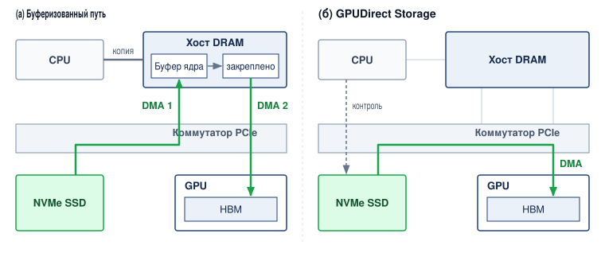
Выгода от GDS зависит от узкого места, размеров запросов, выравнивания, параллелизма и топологии хранилища. Устранение bounce-буферов на хосте может повысить пропускную способность, когда именно эти копирования ограничивают тракт; это не означает, что наименьшие передачи выигрывают больше всех. Мелкий ввод-вывод может оставаться ограниченным подачей запросов или задержкой и требовать параллелизма, чтобы приблизиться к доступной пропускной способности. Поэтому бенчмарки прямого тракта измеряют не только пропускную способность, но и размер операций ввода-вывода и поведение отдельных устройств. Выгода проявляется только в сквозном сравнении конвейера с прямым трактом и без него, а самый ясный случай — тот, где время процессора хоста на запрос является ограничивающей стадией.
Инженерный расчёт 4.6: Дивиденд от обхода CPU
Задача: обучающий узел с 8 GPUs загружает изображения 116 KB со скоростью 8,000 images/s на каждую GPU (64,000 images/s суммарно). Эта скорость намеренно агрессивна — в несколько раз выше по-GPU скорости обработки изображений из ноутбука 4.1 — чтобы изолировать случай, когда работа процессора на запрос является ограничивающей стадией. Предположим, что активная работа процессора составляет 120 μs на запрос на буферизованном тракте и 30 μs на прямом тракте. Эти иллюстративные времена обслуживания исключают время блокировки на вводе-выводе; сравнивайте подразумеваемую нагрузку на CPU, а не считайте прошедшую задержку передачи временем процессора.
Традиционный путь: В рассматриваемой реализации с буферизацией каждое изображение требует DMA-пересылки с NVMe в DRAM, копирования на хосте из пространства ядра в пользовательское и передачи по PCIe на GPU. При 64,000 images/s и затратах 120 μs процессорного времени на изображение CPU расходует 7.68 seconds процессорного времени на каждую секунду астрономического времени, поглощая примерно 8 ядер вычислений только на перемещение данных.
Путь GDS: Каждое изображение передаётся напрямую по DMA с NVMe на GPU. При 30 μs процессорного времени на изображение (на инициирование DMA) CPU расходует 1.92 seconds процессорного времени на каждую секунду астрономического времени, освобождая примерно 6 ядер для аугментации данных.
Системный вывод: При принятых затратах на обслуживание со стороны CPU отказ от копирования полезной нагрузки высвобождает вычислительную ёмкость для предобработки. Этот расчёт не предсказывает сквозную задержку передачи и не доказывает, что пропускная способность предобработки или хранилища способна выдержать такую частоту запросов.
У GDS есть практические ограничения. Далеко не все контроллеры NVMe поддерживают peer-to-peer передачи по PCIe, и данные уже должны быть в формате, который GPU способен потреблять напрямую (сырые значения пикселей, идентификаторы токенов или форматы, обрабатываемые GPU-декодерами, а не произвольные сжатые потоки JPEG или gzip). На практике многие конвейеры применяют гибридный подход: декодирование на CPU для сжатых форматов с последующей обычной передачей на GPU через закреплённую память, тогда как GDS резервируется для прямого чтения потребляемых GPU данных из поддерживаемого локального или удалённого хранилища.
Эволюция архитектуры от копий с посредничеством CPU к прямому доступу к хранилищу отражает более широкую тенденцию: удалять копии полезной нагрузки на CPU из критического пути данных везде, где это возможно. RDMA позволяет сетевым полезным нагрузкам перемещаться без копирования на CPU, а GDS обеспечивает тот же обход для нагрузок из хранилища. Вместе RDMA и GDS позволяют данным течь из удалённого хранилища (например, NVMe over Fabrics, или NVMe-oF) через сетевой fabric и в память GPU без промежуточной копии в памяти хоста. CPU по-прежнему инициирует и координирует операцию, но бо́льшая часть его ёмкости остаётся доступной для аугментации данных, оркестрации конвейера и обработки ошибок.
↩︎ RDMA и пути обхода ядра в сети описаны в RDMA и GPUDirect.
Принцип построения GDS распространяется и на запись контрольных точек. Если путь с промежуточным хранением на хосте переносит байты контрольной точки из HBM GPU через DRAM хоста на NVMe, то поддерживаемый прямой путь может обойтись без этого промежуточного этапа для контрольной точки размером 2,450 GB. Устранение копии сокращает
4.5.1 Полный путь данных
Соединяя GDS с многоуровневой иерархией, полный путь данных связывает уровни для сквозного примера. В начале задачи обучения сериализованный набор сегментов объёмом 6 TB, полученный из сжатого исходного корпуса объёмом 3 TB, размещается из объектного хранилища в локальных кэшах NVMe кластера, причём каждый узел при подготовке получает назначенный ему набор сегментов. Рабочие процессы загрузчика данных читают токенизированные сегменты с NVMe, собирают упакованные последовательности в закреплённой DRAM хоста и передают эти батчи на ускоритель. При включённом GDS идентификаторы токенов, уже находящиеся в пригодном для GPU виде, могут загружаться прямо в память GPU без копирования полезной нагрузки на CPU; сжатые форматы по-прежнему требуют декомпрессии на CPU или GPU перед использованием.
При обучении в установившемся режиме на пути с промежуточным хранением на хосте рабочие процессы загрузчика данных на CPU читают из локального NVMe и наполняют очередь предвыборки в DRAM хоста. GPU получает батчи из этой очереди через DMA по PCIe; поддерживаемая альтернатива GDS устраняет этот промежуточный этап полезной нагрузки на хосте. Фаза вычислений (прямой проход, обратный проход, шаг оптимизатора) потребляет батч и обновляет состояние модели в HBM. Каждые 10 minutes среда обучения создаёт согласованную контрольную точку, записывает её на локальный NVMe выбранным путём и в фоне копирует в параллельную файловую систему. Протокол контрольных точек по-прежнему должен определять, когда все необходимые сегменты можно безопасно публиковать для восстановления.
В конце задачи обучения финальная контрольная точка модели переносится с параллельной файловой системы в объектное хранилище для долговременного хранения. Локальные копии на NVMe удаляются при очистке задачи. Если модель развёртывается для инференса, она загружается из объектного хранилища в HBM обслуживающего кластера, завершая жизненный цикл перемещения данных по иерархии.
Обучающие примеры и контрольные точки копируются в этом жизненном цикле по несколько раз. Каждый обучающий пример проходит одну цепочку копий: объектное хранилище
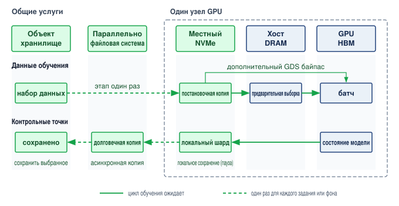
Каждая копия, покидающая узел, также требует сети, и выбор сети решает, кого способна потревожить всплеск активности хранилища. Многие обучающие узлы несут небольшое число сетевых адаптеров, ориентированных на хранилище, в отдельной фронтенд-сети, в дополнение к одному адаптеру вычислительного fabric на ускоритель. Маршрутизация чтений при размещении и копий контрольных точек через эту фронтенд-сеть изолирует их от градиентных коллективов, но ограничивает пропускную способность хранилища узла несколькими фронтенд-портами. Маршрутизация трафика хранилища через вычислительный fabric даёт значительно большую пропускную способность, и удалённые чтения GDS используют именно этот путь RDMA, но тогда всплеск записи контрольных точек делит буферы коммутаторов и магистральные каналы с коллективами задачи и должен разделяться классами трафика.
Для сквозного примера справедливая доля каждого узла в файловой системе 1 TB/s, разделяемой 256 узлами, составляет примерно 4 GB/s, а копирование его сегмента контрольной точки объёмом примерно 10 GB в пределах интервала 10-minute требует гораздо меньше, так что фронтенд-сеть справится. Рабочие нагрузки с изображениями, передающие сотни ГБ/с по кластеру, подталкивают проект к вычислительному fabric. Через призму C
За окно 30-day запись контрольных точек создаёт примерно 10.6 PB состояния против единственного чтения сериализованного набора данных 6 TB, так что именно контрольные точки, а не обучающие входы, являются рабочей нагрузкой хранилища, которую следует проектировать далее. Эта разработка должна вывести многотерабайтное сохранение с критического пути обучения, ни разу не выставив контрольную точку, которую нельзя восстановить.
4.6 Хранилище контрольных точек
После шести часов обучения ускорителей 2,048 рассматриваемого кластера отказ блока питания превращает хранилище контрольных точек в фактор, отделяющий возобновление за минуты от повторения часов или дней потерянных вычислений. Восстановится ли задача чисто, зависит от трёх вопросов к хранилищу: насколько быстро была сохранена последняя контрольная точка, где находятся её сегменты и можно ли прочитать их обратно без повреждений. Поскольку контрольные точки — также самая тяжёлая нагрузка записи в иерархии, архитектура хранилища должна минимизировать
Согласно возобновляемому контракту смешанной точности Adam из Глава 4.1, контрольная точка модели с 175B параметров объёмом 2,450 GB включает 350 GB весов модели в FP16, 700 GB главных весов в FP32 и 1,400 GB для двух моментов Adam в FP32, при этом состояние планировщика скорости обучения, состояние генератора случайных чисел и курсор загрузчика данных добавляют незначительные байты, а градиенты пересчитываются после восстановления. Когда сохранение срабатывает, каждый участвующий рабочий процесс, называемый рангом, единовременно записывает назначенный ему сегмент, порождая «шторм контрольных точек», введённый в Глава 4.2.
Чтобы этот всплеск оставался управляемым, требуется правило «запись каждого байта один раз», согласно которому координированное сохранение записывает каждый уникальный байт единожды при любой схеме параллелизма. В рассматриваемой схеме Таблица 3 каждый узел держит 1/8 состояния реплики, относящуюся к его стадии конвейера, и все thirty-two реплики хранят идентичные её копии. Поэтому координированное сохранение назначает каждой реплике непересекающуюся 1/32 каждого сегмента стадии, так что каждый из 256 узлов записывает около 1/256 контрольной точки. Третья стадия ZeRO (ZeRO-3), разделяющая ещё и веса, делает такое равное разбиение естественным, поскольку каждый ранг уже владеет отдельным фрагментом.
Нарушение правила «запись каждого байта один раз» — реальный риск даже в рассматриваемой схеме: сохранение, в котором каждая реплика записывает полное хранимое ею состояние, умножило бы байты контрольной точки на число реплик. Эта цена нагляднее всего в намеренно предельном мысленном эксперименте — меньшей модели, чьё полное возобновляемое состояние записывается по одному разу на каждый GPU эталонного кластера книги.
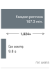
Запись одной копии на реплику занимает в 1024 раза больше времени, чем запись каждого уникального байта один раз.
Определение 4.5: Шторм контрольных точек
Шторм контрольных точек — это всплеск синхронизированного сетевого и дискового трафика, возникающий, когда все узлы парка машин МЛ-обучения одновременно сохраняют состояние модели.
- Значимость: Когда каждая реплика записывает свою полную копию, наивный шторм занимает
, где — число реплик, записывающих одновременно, а — агрегированная скорость, с которой целевой уровень хранилища принимает записи. Координированное сохранение, записывающее каждый уникальный байт один раз, занимает . Согласно контракту контрольных точек главы, модель с 70B параметров, меньшая, чем сквозной пример на 175B, хранит 140 GB весов FP16, 280 GB главных весов FP32 и 560 GB моментов Adam. При наивном параллелизме по данным на 1,024 replicas (по одной на каждый GPU эталонного кластера книги, а не парк из 256 узлов в главе) наивная запись этого полного состояния каждой репликой порождает 1003.5 TB одновременного трафика. Ни одно устройство на 80 GB не может вместить реплику объёмом 0.98 TB, поэтому случай служит границей объёма записи, а не развёртываемой схемой. При 100 GB/s агрегированной пропускной способности приёма хранилища запись занимает примерно 10,035.2 seconds, то есть более 167.3 minutes простоя обучения. Координированный протокол контрольных точек записывает одну логическую копию. Реплицируемый параллелизм по данным может выбрать одного писателя; ZeRO-3 вместо этого распределяет эту копию по рангам, каждый из которых записывает свой фрагмент. В шардированном примере суммарный объём составляет примерно 0.98 TB, снижая примерно до 9.8 seconds. Градиенты не входят ни в один из объёмов, поскольку при восстановлении они пересчитываются. - Отличие: В отличие от общего соперничества за ввод-вывод (которое стохастично и непредсказуемо), шторм контрольных точек синхронен и периодичен: каждый узел пишет в один и тот же момент, потому что оркестратор обучения запускает сохранение контрольной точки после фиксированного числа шагов. Его предсказуемость делает его одновременно более разрушительным (все узлы конкурируют одновременно) и более управляемым (его можно предотвратить проектом — разнесённым по времени планированием или асинхронной сериализацией).
- Типичная ошибка: Распространённое заблуждение — считать, что сохранение контрольной точки каждые 100 шагов имеет «низкие накладные расходы» при любом протоколе сохранения. При наивном протоколе в масштабе 70B, если каждый шаг обучения занимает 10 секунд, а шторм контрольных точек — 10,035.2 seconds, сохранение каждые 100 шагов означает, что большая часть выполнения уходит на ввод-вывод контрольных точек, а не на полезное обучение.
Серьёзность шторма контрольных точек зависит от двух факторов: размера шарда на узел, определяемого размером модели и стратегией шардирования, и пропускной способности первого яруса записи, обычно локального NVMe. Конкретный пример с моделью 175B показывает, почему именно фаза локальной записи, а не долговременное копирование в параллельную файловую систему, определяет видимую паузу обучения.
Инженерный расчёт 4.7: Поэтапная выкладка контрольной точки
Постановка задачи: предположим устойчивую пропускную способность, локальные диски, которые пишут так же быстро, как их номинальная скорость последовательного чтения, отсутствие накладных расходов на копирование снимка, сериализацию, координацию и отсутствие помех от фоновых копий. Полученные времена являются нижними границами по пропускной способности. Кластер из 256 узлов сохраняет контрольную точку модели 175B параметров каждые 10 minutes. Каждая контрольная точка в сумме составляет 2,450 GB. При однократной записи каждого уникального байта и равномерном распределении байтов по узлам каждый узел сохраняет примерно 9.6 GB.
- Запись на локальный NVMe на каждом узле (4 дисков по 7 GB/s каждый = 28 GB/s): 9.6 GB
28 GB/s 0.34 seconds. - Асинхронное копирование в PFS: 256
9.6 GB 2.4 TB всего. Если PFS предоставляет агрегированные 1 TB/s, шторм завершается примерно за 2.4 seconds. - Пропускная способность PFS на узел: если все 256 узлов пишут одновременно, каждый получает 1000 GB/s
256 = 3.9 GB/s. - Пауза обучения: не менее 0.34 seconds на запись на локальный NVMe в рамках этой модели. Копирование в PFS перекрывается со следующей итерацией обучения.
- Нижняя граница накладных расходов: 0.34 seconds паузы каждые 600 seconds
0.06 percent времени обучения, потерянного из-за контрольных точек.
Системный вывод: при этих предположениях об агрегированной пропускной способности PFS в 1 TB/s поэтапная выкладка снижает накладные расходы на контрольные точки примерно с 2.4 seconds прямой записи в PFS до менее чем секундной локальной записи. Пауза обучения может закончиться на границе локального снимка до долговременной публикации, но фактическая пауза включает создание снимка, сериализацию и координацию сверх этой нижней границы по переносу байтов.
Прямое сохранение в PFS за несколько секунд каждые 10 minutes стоит заметно меньше 1 процента прогона, что может сделать поэтапную выкладку ненужной для рассматриваемого примера. Аргумент о доминировании контрольных точек из Глава 4.5.1 касается переносимых байтов, а не этой паузы, и экономия в несколько секунд в ноутбуке справедлива лишь пока выполняются его предположения. Задача имеет в своём распоряжении всю файловую систему на 1 TB/s; при разделении между десятью параллельными задачами из Глава 4.3.6 она получает десятую часть пропускной способности, то же сохранение занимает в десять раз дольше, а её всплеск замедляет чтение других задач. Реализуемый приём данных также падает ниже номинальной агрегированной величины, как только вступают сериализация, операции с метаданными и отстающие узлы. Интервал сохранения сокращается с ростом парка, потому что более крупный парк отказывает чаще и анализ надёжности из Интервал контрольных точек Юнга—Дейли требует более частых сохранений, а более крупная модель увеличивает объём каждого сохранения.
Поэтапная выкладка изолирует цикл обучения от этой конкуренции за разделяемый ярус, разбивая сохранение на две фазы. В первой фазе, как рассчитано в ноутбуке 4.7, каждый из 256 узлов записывает свою долю 9.6 GB контрольной точки объёмом 2,450 GB на 4 локальных NVMe-диска с пропускной способностью 28 GB/s, устанавливая нижнюю границу по переносу байтов для
Во второй фазе фоновый процесс асинхронно копирует локальную контрольную точку в параллельную файловую систему для долговременного хранения. Копирование может перекрываться с обучением, но оно всё равно конкурирует за память, сеть и службу хранилища и должно завершиться прежде, чем повторные сохранения создадут неограниченную очередь. Поэтому две фазы по-разному ложатся в Закон парка (Уравнение (3)). Локальная запись — это пауза, которую каждый ранг делает на одной и той же границе шага, и обучение возобновляется только когда самый медленный писатель завершит свой шард. Это форма барьера, а не переноса между исполнителями — стоимость координации (
Если узел отказывает до завершения копирования, новое поколение может потерять требуемый шард. Репликация на NVMe-диски соседних узлов может защитить от потери одного узла, при условии что реплики занимают независимые домены отказов. Ожидание этой репликации продлевает паузу сверх расчёта только по локальной записи. Проект, возобновляющий обучение раньше, должен сохранять предыдущее зафиксированное поколение, пока новое не достигнет своей заявленной границы долговременной сохранности.
Одна долговременная сохранность ещё не делает распределённую контрольную точку восстановимой. Каждый ранг пишет свой шард с контрольной суммой под неизменяемым идентификатором поколения. Только после сохранения всех шардов координатор публикует манифест, называющий полный набор шардов. Эта фиксация использует атомарный примитив целевого яруса — операцию, которая действует полностью или не действует вовсе. Файловая система предлагает создание или переименование. Хранилище объектов предлагает условное создание, которое успешно выполняется только если имя всё ещё не занято, либо версионируемый указатель — небольшую запись, называющую текущее поколение. Тогда сбой может оставить мусор для сборки, но никогда не породит неполное поколение, выглядящее как корректное.
↪ Правило фиксации, лежащее в основе этого порядка, двухфазная фиксация по набору шардов и согласованность среза, который называет манифест, разбираются в Шаблоны координации контрольных точек.
Таким образом, видимая пауза и граница долговременной сохранности приходятся на разные моменты, как их выравнивают четыре параллельные дорожки на Рисунок 8. Обучение останавливается только на время записи шарда на локальный NVMe (
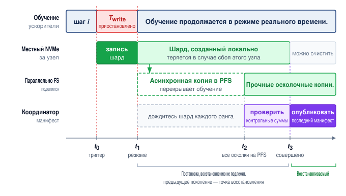
4.6.1 Синхронная и асинхронная запись контрольных точек
В двухфазной шкале времени Рисунок 8 первая фаза всё ещё синхронна по отношению к локальной флеш-памяти. На всех 256 nodes узлах каждый узел должен записать и подтвердить свой шард одного и того же завершённого шага обучения, прежде чем барьер завершения выпустит следующую итерацию, а правила фиксации, делающие этот срез согласованным, разбираются в Шаблоны координации контрольных точек. Поэтому самый медленный локальный писатель задаёт видимую паузу от
Асинхронное сохранение контрольных точек сокращает даже эту паузу на локальной флеш-памяти, размещая снимок сначала в DRAM хоста. Узлы координируют шаг обучения для захвата, копируют каждый шард, находящийся на ускорителе, в выделенный закреплённый буфер памяти хоста и немедленно возобновляют обучение, пока фоновый поток пишет буфер на локальный NVMe. Буфер снимка должен оставаться неизменяемым до завершения фоновой записи; отдельные буферы живого состояния позволяют обучению продвигаться, не изменяя захваченное поколение. Если узел отказывает во время асинхронной записи, его локальный шард может оказаться неполным. Задача должна дождаться требуемых записей или репликации от соседей, прежде чем объявить это поколение долговременно сохранённым, даже если обучение уже возобновилось.
Выбор между синхронным и асинхронным сохранением контрольных точек зависит от бюджета паузы и частоты сохранений. Пауза в 1-second стоит в рассматриваемом примере около 22 percent одного смоделированного шага в 4.64-second, или 0.17 percent интервала сохранения 10-minute. При таком темпе синхронное сохранение дёшево; накладные расходы растут как длина паузы, умноженная на частоту сохранений, поэтому аргументы в пользу асинхронного сохранения усиливаются по мере учащения сохранений или удлинения пауз. Асинхронное сохранение сокращает видимое время записи, когда доступны буферы снимков и фоновая пропускная способность, но в решение входят также ёмкость буферов, конкуренция и задержка достижения долговременной сохранности.
Форматы контрольных точек реализуют правило однократной записи из шторма контрольных точек как сохранения с шардированием по рангам — как в zero-redundancy checkpointing в DeepSpeed и Distributed Checkpoint в PyTorch (PyTorch Contributors 2026 г.). Именно шардирование удерживает паузу короткой. Если бы один узел сохранял все 2,450 GB сам, его локальная полоса с пропускной способностью 28 GB/s потребовала бы более минуты вместо 0.34 seconds при равномерном шарде. Однако ускорение каждого отдельного сохранения создаёт кумулятивную проблему ёмкости, когда за многонедельный прогон накапливаются тысячи снимков.
4.6.2 Хранение и восстановление контрольных точек
Сохранение контрольных точек модели на 175B параметров каждые 10 minutes в течение окна обучения в 30-day порождает примерно 4,320 снимков по 2,450 GB каждый, в сумме около 10.6 PB — объём, который переполнил бы разделяемую параллельную файловую систему при полном хранении. Политика хранения, принятая в этом прогоне, держит три самые свежие контрольные точки в параллельной файловой системе для быстрого восстановления, копирует каждую сотую контрольную точку и финальную контрольную точку в хранилище объектов для долгосрочной проверяемости и удаляет остальные. Эта политика сокращает занимаемый объём контрольных точек в параллельной файловой системе с 10.6 PB примерно до 7.35 TB (три живые полные контрольные точки), сохраняя 43 периодических исторических снимков в хранилище объектов, плюс финальную контрольную точку, если она не совпадает с этим расписанием, для анализа после обучения.
Инкрементальные контрольные точки предлагают дальнейшую оптимизацию для сокращения
Практический случай 4.1: Резервная копия, которую не восстанавливали (2017)
Контекст: 31 января 2017 года инженер по надёжности сайта GitLab.com, разбирая инцидент репликации базы данных, случайно стёр основной каталог данных PostgreSQL (GitLab 2017 г.).
Механизм: Все пять слоёв резервного копирования отказали одновременно: дампы в S3 были молча пустыми из-за несовпадения версий, снимки дисков Azure были отключены, репликация была сломана, снимки LVM отставали на шесть часов, а архивирование WAL не было реализовано.
Последствия: Шесть часов производственных записей в базу данных, комментариев пользователей и метаданных репозиториев были утрачены навсегда; потребовалось 18-часовое аварийное восстановление из снимка на staging-среде.
Решение: GitLab внедрил автоматизированное ежедневное тестирование восстановления резервных копий, унифицировал версии PostgreSQL между средами и реализовал автоматизированное архивирование WAL в S3.
Урок систем: Надёжность хранилища — свойство восстановления, а не резервного копирования. Контрольная точка (checkpoint), реплика или дамп имеют ценность лишь тогда, когда команда регулярно доказывает, что их можно найти, проверить и восстановить в условиях инцидента. ML-системы уязвимы к тому же. Контрольная точка модели, записанная в объектное хранилище, или срез хранилища признаков (системы, хранящей входные признаки модели) бесполезны, если из-за неочевидных расхождений версий или отсутствия тестов восстановления невозможно возобновить многодневный запуск обучения после вытеснения узла.
Для сквозного примера тест восстановления читает обратно сегменты сохранённого поколения, сверяет их с манифестом и возобновляет обучение с них.
↪ Восстановительная тренировка (restore drill), проверяющая этот путь восстановления до того, как на него придётся положиться при инциденте, разобрана в Обнаружение и предотвращение программных отказов.
Контрольная точка 4.4: Проектирование хранилища контрольных точек
Обучающий кластер из 256 nodes узлов сохраняет контрольную точку модели с 175 млрд параметров каждые 10 minutes. Каждая контрольная точка занимает 2,450 GB суммарно, распределённые по всем узлам.
Теперь, когда учёт контрольных точек полностью выведен, потребности сквозного примера в хранилище можно сопоставить с той же иерархией. Расположив рядом обучающий датасет, текущее состояние модели, контрольные точки и архивную родословную, видно, какое направление трафика доминирует в окне обучения.
Системный взгляд 4.2: Занимаемый объём памяти модели с 175 млрд параметров
Сквозной пример — модель с 175 млрд параметров, обучаемая на 256 nodes в течение окна 30-day, — размещает данные на каждом ярусе иерархии (Таблица 5).
Таблица 5: Занимаемый объём памяти при обучении модели с 175 млрд параметров: объём и основной ярус хранения для каждой категории данных в запуске обучения с окном 30-day на 256 узлах.
| Категория | Объём | Основной ярус |
|---|---|---|
| Обучающий датасет (сжатый источник) | 3 TB | Объектное хранилище |
| Обучающий датасет (токенизированный, на эпоху) | 6 TB | Объектное хранилище |
| Веса модели (FP16) | 350 GB | HBM GPU (распределённо) |
| Мастер-веса (FP32) | 700 GB | HBM GPU (распределённо) |
| Моменты Adam (два состояния FP32) | 1,400 GB | HBM GPU (распределённо) |
| Одна возобновляемая контрольная точка | 2,450 GB | NVMe |
| Все контрольные точки (30 days, интервал 10-minute) | 10.6 PB | NVMe (транзитно) |
| Архив (сохранённые контрольные точки + датасет) | ~116.8 TB | Glacier |
Суммарный объём данных, перемещаемых через иерархию, составляет примерно 10.6 PB данных контрольных точек плюс 6 TB за 1 epoch чтений обучающих данных. Для запуска обучения языковой модели с одной эпохой ввод-вывод контрольных точек доминирует над вводом-выводом загрузки данных с коэффициентом более 1,764.
Следовательно, контрольные точки задают бюджет записи запуска, тогда как куда меньший обучающий корпус несёт иное обязательство. Поскольку качество обучения зависит от точных сэмплов, доставляемых на каждом шаге, каждый байт этого корпуса должен оставаться прослеживаемым до версии источника и кода преобразований, которые его породили.
4.7 Версионированные данные и границы фиксации
Если многонедельный запуск обучения внезапно получает скачок потерь или развёрнутая модель регрессирует, инженерная команда, не зафиксировавшая, какие версии сегментов, код препроцессинга и зерна перемешивания подавались на каждом шаге, не сможет отличить дефект модели от неочевидного изменения входных данных. Манифест контрольной точки даёт одну границу фиксации на каждое сохранение. У конвейера данных, построившего обучающий корпус, их много — по одной на каждом этапе, превращающем сырые входы в обработанные сегменты. Система хранения должна зафиксировать и точные прочитанные байты, и код препроцессинга, зерно перемешивания, схему и проверки целостности, породившие их до начала запуска.
Опорный пример 4.1: Архетип B (DLRM в масштабе): задержка хранилища признаков
Пока Архетип A (GPT-4/Llama-3) обучается на статичных, версионированных сегментах, Архетип B (DLRM в масштабе) обучается на живых потоках признаков, меняющихся ежесекундно по мере действий пользователей. Точное воспроизведение батча становится тогда задачей точек во времени, которую решает хранилище признаков, ведя сохраняемый версионированный журнал признаков.
↪ Корректность точек во времени, предотвращаемая ею утечка и стоимость хранения сохраняемой истории признаков разобраны в Точность на момент времени.
Даже когда лежащие в основе файлы сегментов неизменяемы, распределённый загрузчик порождает поток потребляемых сэмплов, чьи версии и порядок могут смещаться между эпохами в течение 30-day запуска. Версионирование датасетов даёт запись наподобие «Git для данных», снимая криптографические хеши13 каждого сегмента данных, точный код препроцессинга, использованный для токенизации, и случайные зерна, управляющие глобальным перемешиванием. Имея такой снимок, инженеры, разбирающие расхождение посреди запуска, могут воспроизвести точный батч, вызвавший скачок потерь, и проверить, был ли виноват повреждённый сэмпл или численная нестабильность оптимизатора.
В масштабе петабайтов конвейер данных должен делать каждое преобразование воспроизводимым. Сырые документы очищаются, токенизируются, упаковываются в обучающие примеры и нарезаются на сегменты по ярусам хранения. Каждый этап записывает неизменяемый артефакт, и каждый артефакт фиксирует версию входа, версию кода, схему и пройденные статистические проверки. Когда эти зависимости явны, конвейер образует направленный ациклический граф: поздние артефакты зависят от ранних, и ни одному этапу не разрешается переписывать свою историю. При старте обучающего задания менеджер кластера проверяет, что локальные сегменты NVMe каждого воркера соответствуют снимку данных, объявленному для запуска. Отношение к конвейеру данных как к графу версионированных артефактов, а не простой передаче файлов, делает неочевидный дрейф данных обнаруживаемым и атрибутируемым конкретному этапу, версии кода или снимку входа. Неизменяемость ещё и приносит дивиденд по хранилищу. Поскольку артефакт после записи никогда не меняется, манифест может именовать его по идентификатору содержимого — хешу его байтов, — и множество экспериментов могут ссылаться на те же неизменённые сегменты без копирования целых датасетов.
4.7.1 Повторное воспроизведение и границы фиксации в конвейерах данных
Когда воркер токенизации падает на полпути построения сегмента корпуса сквозного примера, его замена должна решить, какие сырые документы обработать заново, не потеряв записи молча и не записав дубликаты. Версионированные артефакты определяют, что произвёл конвейер, тогда как правила фиксации и повторного воспроизведения определяют, могут ли промежуточные сбои изменить этот результат. Роль системы хранения в этом решении — граница фиксации: точка, в которой выход этапа становится устойчивым и видимым ниже по потоку; тот же контракт, что Глава 4.6 применил к поколениям контрольных точек. Именно из-за этого общего контракта глава о хранилищах владеет этой семантикой: потеряет ли повторное воспроизведение данные или задублирует их, решается тем, что хранилище зафиксировало. Перезапущенный воркер сравнивает свою входную позицию с последней зафиксированной выходной и воспроизводит всё после неё, так что под угрозой работа, накопившаяся после последней фиксации.
Сколько незафиксированной работы накопится, определяют два эффекта скорости обслуживания. Записи распределяются воркерам по ключу партиции, например источнику документа или идентификатору пользователя, и перекос партиций возникает, когда один ключ владеет непропорциональной долей работы и держит свой этап открытым, пока остальной парк простаивает. Обратное давление переносит ограничение медленного нижестоящего этапа вверх по потоку, замедляя приём или ограничивая данные в полёте, — это управляющий ответ на перегрузку, а не другое название медленной обработки.
Отказы вблизи границы фиксации ставят вопрос корректности, и три гарантии отвечают на него по-разному. Обработка «не более одного раза» никогда не воспроизводит сомнительную работу, поэтому документ, прочитанный, но чей выход не подтверждён, теряется. Обработка «не менее одного раза» воспроизводит всё после последней подтверждённой фиксации, поэтому документ, чей выход записан, но ещё не подтверждён, записывается дважды. Фактически «ровно один раз» сочетает воспроизводимые входы с идемпотентными записями — записями, оставляющими один и тот же результат при любом числе повторений, — либо с транзакционным выходом, привязанным к стабильному идентификатору события или транзакции (Akidau и др. 2015 г.). Надёжная доставка каждой записи от одного воркера к следующему сама по себе не даёт этой гарантии, поскольку дубликат порождается собственным воспроизведением воркера. Потоковые конвейеры признаков Архетипа B (DLRM в масштабе) сталкиваются с этим вопросом на каждом событии.
Пример 4.2: Разрыв подтверждения
Трасса отказа: Воркер конвейера признаков записывает выходную строку для события клика
e42, затем падает прежде, чем зафиксировать успех записи. Его замена не может определить, была ли зафиксирована e42. Пропуск события рискует его потерять. Воспроизведение его в режиме добавления записывает строку признаков второй раз, и клик считается дважды в каждом обучающем наборе, построенном из таблицы. Запись строки под стабильным ключом (feature_version, e42) превращает воспроизведение в перезапись той же строки, так что сомнительное событие можно безопасно обработать заново.
Урок систем: «Ровно один раз» должно находиться на границе фиксации выхода, чья запись обязана связывать входную позицию, версию преобразования, стабильный идентификатор и состояние фиксации.
Два воспроизведения различаются лишь тем, как адресуется выход. Добавление даёт каждой попытке собственную строку, тогда как запись под стабильным ключом отправляет каждую попытку в одну и ту же строку, так что повторная обработка сомнительной работы не меняет сохранённого результата (Рисунок 9).
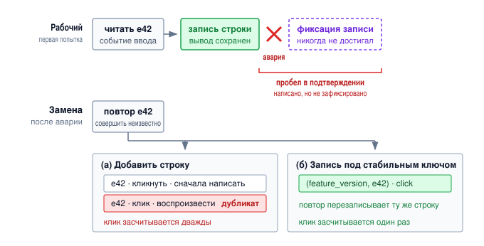
Потоковая обработка добавляет к контракту временну́ю границу. Время события фиксирует, когда событие произошло; время обработки — когда воркер его обработал. Конвейер, агрегирующий клики по часам, должен решить, когда час завершён, хотя события могут приходить с опозданием. Водяной знак — это текущая оценка конвейера о том, что все события до некоторого времени события уже пришли, что позволяет закрыть окно и выдать результат; политика поздних данных определяет, обновляют, отзывают, изолируют или отбрасывают поздние прибытия результат (Akidau и др. 2015 г.). Следовательно, водяные знаки обменивают свежесть на полноту, а не доказывают, что более старых событий не осталось.
Каждый из этих механизмов покупает одно свойство ценой другого. Буферизация поглощает конечные всплески или временные замедления, но увеличивает состояние восстановления и отставание свежести; устойчивая перегрузка всё равно требует обратного давления или большей мощности обслуживания. Агрессивные водяные знаки сокращают задержку, но исключают больше поздних данных, тогда как воспроизведения помогают лишь тогда, когда записи безопасно повторять. Эти выборы меняют сохранённый результат: таблица признаков, закрытая при агрессивном водяном знаке, содержит другие строки, чем закрытая при мягком. Поэтому воспроизводимый снимок обучения должен фиксировать версии источника и кода наряду с партиционированием, политикой воспроизведения, стабильными идентификаторами, состоянием водяных знаков и решениями по поздним данным. Именно эта запись позволяет позднему дозаполнению признаков (feature backfill) — воспроизведению истории под новым кодом — воссоединить признаки в правильных точках времени, не смешивая старую и новую истории.
↪ Дозаполнения признаков, воспроизводящие историю по этому контрактному снимку, разобраны в Процедуры бэкфилла.
4.7.2 Синтетическая топливная линия
Контракт версионированных артефактов применим и к сгенерированным обучающим сэмплам, и к собранным. Когда парк генерирует сэмплы-кандидаты, фильтрует их и проверяет выживших, каждый этап добавляет трафик хранения и записи, которые должны оставаться связанными с принятым полезным грузом. Потребность в генерации проистекает из вычислительно-оптимального распределения Законы масштабирования ИИ, растущего бюджет токенов с ростом числа параметров. По мере того как высококачественный созданный людьми текст становится всё труднее наращивать, парк сталкивается с данных стеной: точкой, где дополнительные обучающие сэмплы всё в большей степени должны поступать из синтеза, симуляции, курирования или дорогого сбора людьми (Villalobos и др. 2024 г.).
Этот сдвиг от простого сбора к управляемой генерации данных пропускает через иерархию больше, чем байты полезного груза. «Синтетическая топливная линия» должна также хранить цепочку происхождения каждого сэмпла: какая модель его сгенерировала, какие фильтры его приняли или отклонили, какие модели-верификаторы его оценили и какой нижестоящий запуск его потребил. Эта родословная делает многократное повторное использование сгенерированного материала прослеживаемым, а стена данных провоцирует такое использование, потому что парк, испытывающий нехватку нового созданного людьми текста, может в итоге обучаться на собственных более ранних выходах. Поэтому запись родословной поддерживает исследование коллапса модели, при котором рекурсивное обучение на сгенерированных данных может деградировать изученное распределение (Shumailov и др. 2024 г.); одного лишь хранения происхождения недостаточно, чтобы предотвратить деградацию. Проектирование хранилища должно отдельно бюджетировать сохраняемые артефакты и повторные сканирования, используемые для их оценки.
Инженерный расчёт 4.8: Стоимость хранения синтетических данных
Задача: синтетический датасет объёмом 1 TB хранит метаданные происхождения (provenance) и проходит три независимые проверки верификаторами. Сколько постоянной ёмкости и трафика конвейера он требует, если результаты верификаторов не сохраняются как полные копии датасета?
- Исходные данные: 1 TB.
- Накладные расходы на метаданные происхождения: дополнительно 40 percent на хэши lineage, журналы генерации и оценки верификаторов.
- Трафик верификации: 3 проходов верификатора, каждый из которых читает payload, порождая 3 TB трафика чтения. Их оценки хранятся в метаданных происхождения, а не в трёх сохранённых копиях payload.
- Результат по ёмкости: постоянная ёмкость составляет 1 TB
1.4 = 1.4 TB, то есть коэффициент ёмкости 1.4×. - Результат по трафику: однократная запись payload и метаданных и трёхкратное чтение payload перемещают 4.4 TB, то есть коэффициент трафика 4.4× — ещё до учёта вычислений генераторов и верификаторов.
Системный вывод: верификация в первую очередь нагружает скорость обслуживания и вычисления, тогда как сохраняемые метаданные происхождения расходуют ёмкость. Оба вида затрат совпадают лишь тогда, когда конвейер превращает результат каждого верификатора в ещё одну полную копию датасета. Следовательно, хранилище синтетических данных должно бюджетировать байты в покое отдельно от перемещаемых байтов и фиксировать, какой генератор, какие фильтры, верификаторы и последующие запуски произвели каждый принятый образец.
Поэтому сгенерированные данные превращают lineage в часть самого payload, и хранилище обязано закладывать бюджет на сохраняемые метаданные происхождения и трафик верификации наряду с самими образцами.
4.8 Экономика хранилищ
Контрольные точки, обучающие шардированные данные и связывающий их lineage теперь каждые занимают своё место в иерархии, и каждое размещение имеет цену, определяемую уровнем, на котором лежат байты, и тем, как часто они пересекают границу тарификации. Поэтому экономика хранилищ для машинного обучения — это не просто выбор самого дешёвого уровня ёмкости; цель проектирования — минимизировать совокупную стоимость доставки данных, складывающуюся из регулярных платежей за хранение, платы за передачу через границы, платы за запросы и извлечение, а также упущенной выгоды от простаивающих ускорителей.
Применительно к одному обучающему датасету объёмом 100 TB ставки за гигабайт, упомянутые ранее для каждого уровня, различаются на порядки: объектное хранилище (S3 Standard) стоит $24,000 в год, выделенный локальный NVMe — $120,000 в год, а архивное хранилище (например, Glacier) опускается до $4,800 в год. Напротив, гипотетическое выделение той же ёмкости в виде памяти GPU по цене $15/GB потребовало бы $1,500,000 только на первоначальную закупку — ещё до учёта амортизации, энергопотребления и размещения серверов.
Разница в стоимости в 5× между локальным NVMe и объектным хранилищем мотивирует размещать данные на самом дешёвом уровне, который удовлетворяет требованиям к доставке и восстановлению данных. Свойства устройства также вносят вклад в этот градиент цен. HBM использует объёмно-монтированный кремний со сквозными кремниевыми межсоединениями (TSV), а ёмкость рядом с ускорителем ограничена корпусированием и дизайном кристалла. Общее хранилище разделяет ёмкость между клиентами, но вводит сетевые и сервисные зависимости. Сравнение стоимости должно учитывать эти зависимости, а не выводить самый дешёвый пригодный путь только из цены за ёмкость.
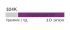
Повторяющийся исходящий трафик через границы, а не хранение, доминирует в стоимости облака.
Однако стоимость хранения — лишь часть уравнения. Затраты на передачу данных могут доминировать, особенно в облачных средах. Когда вычисления выполняются в другом регионе (отдельная группа дата-центров провайдера) или другом облаке, чем бакет, как предполагается здесь, чтение датасета объёмом 100 TB из объектного хранилища на вычислительные инстансы влечёт плату за передачу в размере $9,000, называемую платой за исходящий трафик (egress), поскольку она тарифицирует байты, покидающие регион или облако. Для многоэпохового обучения, которое читает датасет 10 раз, одна только плата за исходящий трафик достигает $90,000 — больше годовой стоимости хранения. Эта инверсия, при которой чтение данных стоит дороже, чем их хранение, определяет архитектурное решение кэшировать данные на локальном NVMe, а не стримить их из объектного хранилища каждую эпоху.
Экономический анализ меняется ещё сильнее, если учесть упущенную выгоду от простоя ускорителей. Референсный кластер книги из 1,024 GPUs — половина сквозного кластера этой главы — по цене $2/GPU-hour стоит $49,152 в день. Если остановки из-за ввода снижают долю активных вычислений с 90 percent до 70 percent, потерянное время вычислений оценивается в $9,830 в день. За 30 days обучения это составляет $294,912. Эта величина задаёт бюджет для оценки апгрейда хранилища, но извлекаемая выгода зависит от того, сколько видимого ожидания устранит апгрейд. Ёмкость, не разгружающая лимитирующий этап, не даёт соответствующей экономии времени вычислений.
Системный взгляд 4.3: Айсберг стоимости хранилища
Видимая стоимость хранения ($/ГБ/мес) — лишь верхушка айсберга. Под поверхностью скрываются затраты, которые нередко превышают саму стоимость хранения:
- Плата за исходящий трафик: плата за исходящий трафик за десять эпох, $90,000, вычисленная выше, уже превышает год хранения.
- Плата за запросы: объектное хранилище тарифицирует каждый запрос. Запросы GET в S3 Standard стоят около $0.0004 за 1,000 requests, так что датасет из 100M отдельных файлов, прочитанный один раз, обходится примерно в $40 платы за GET-запросы ещё до платы за передачу или извлечение — при том, что стоимость хранения составляет $2,000/мес.
- Стоимость простаивающих ускорителей: $9,830 в день потерянных вычислений, посчитанные выше, на порядок превышают любую экономию на хранении.
- Плата за извлечение: архивное хранилище взимает плату за извлечение ($0.02/GB для Glacier) сверх исходящего трафика. Восстановление датасета объёмом 100 TB из Glacier стоит $2,000 платы за извлечение плюс $9,000 исходящего трафика.
Экономически рациональная стратегия часто вкладывает больше средств в хранилище (кэширование на локальном NVMe, ёмкость параллельной файловой системы), чтобы сократить затраты на передачу и предотвратить остановки ускорителей.
Айсберг затрат показывает, что на сырую ёмкость хранилища может приходиться менее половины совокупных расходов; репликация, операции с метаданными, вызовы API и межрегиональные передачи в совокупности могут доминировать в счёте при масштабе. Из этих скрытых статей расходов исходящий трафик — та, что чаще всего переворачивает архитектурное решение. В отличие от платы за ёмкость, которая растёт с объёмом хранимых данных, плата за исходящий трафик растёт с объёмом читаемых данных, а обучение в машинном обучении читает весь датасет на каждой эпохе.
Инженерный расчёт 4.9: Стоимость исходящего трафика
Задача: команда обучает модель компьютерного зрения на датасете изображений объёмом 50 TB, хранящемся в S3. Обучение длится 20 эпох. Вопрос в том, стримить данные из S3 каждую эпоху или переносить их (staging) на локальный NVMe.
Вариант A: стриминг из S3
- Хранение: 50 TB
$0.02/GB/month 12 месяцев = $12,000/год - Исходящий трафик: 50 TB
20 эпох $0.09/GB = $90,000 за один запуск обучения - Итого за 4 запусков обучения/год: $12,000 + $360,000 = $372,000/год
Вариант B: перенос на локальный NVMe
- Хранение (S3 как источник истины): $12,000/год
- Ёмкость NVMe (50 TB по всему кластеру): 50 TB
$0.10/GB/month 12 = $60,000/год - Исходящий трафик (один перенос на каждый запуск обучения): 50 TB
4 запусков $0.09/GB = $18,000/год - Итого: $12,000 + $60,000 + $18,000 = $90,000/год
Системный вывод: кэширование на локальном NVMe экономит $282,000/год при 20 эпохах на запуск — этого достаточно, чтобы купить 9 дополнительных GPU H100 по прейскурантной цене. С учётом годовой стоимости выделенного NVMe в размере $60,000/год и однократного за запуск исходящего трафика при переносе точка безубыточности находится чуть выше 4 эпох на запуск; к пятой эпохе локальное кэширование дешевле, чем стриминг из S3 каждую эпоху.
Ноутбук превращает айсберг в правило принятия решений: самый дешёвый уровень хранения — не всегда самый дешёвый путь доставки. Объектное хранилище может оставаться источником истины, но повторяющиеся чтения делают исходящий трафик, накладные расходы на запросы и стоимость простоя ускорителей частью проектирования хранилища. Многоэпоховое обучение моделей зрения может оправдать перенос на локальный NVMe уже к пятой эпохе, тогда как одноэпоховое предобучение языковых моделей может оставить корпус в объектном хранилище и оптимизировать путь стриминга. Сквозной пример всё равно переносит данные, хотя читает корпус лишь однажды, — потому что решает не исходящий трафик. Доля шардов каждого узла легко помещается на локальном NVMe, копия переносится однократно до запуска таймера, а локальные чтения удерживают хвосты задержек объектного хранилища вне каждого шага обучения. Когда вычисления и бакет находятся в одном регионе, платы за передачу практически исчезают, и то же сравнение решается уже платой за запросы, задержкой и простаивающими ускорителями. Архитектура, следовательно, выбирается по шаблону доступа, количеству чтений и чувствительности к задержке, а не только по $/ГБ/мес.
Анализ затрат распространяется и на уровень параллельной файловой системы, который занимает промежуточное положение между NVMe и объектным хранилищем как по производительности, так и по цене. Параллельной файловой системе, способной выдать совокупную пропускную способность 1 TB/s, требуется порядка 100 узлов OSS, каждый с несколькими NVMe-накопителями и высокоскоростными сетевыми подключениями. Поскольку это количество серверов задаёт целевая пропускная способность, а не объём хранения, система, масштабированная под пропускную способность, стоит гораздо дороже, чем можно предположить по одним лишь хранимым байтам. Эти расходы оправданы, только если альтернатива — стриминг из объектного хранилища с оплатой исходящего трафика — обходится ещё дороже или если требования к задержке записи контрольных точек не могут быть выполнены одним лишь объектным хранилищем. Анализ безубыточности зависит от смеси рабочих нагрузок организации. Команда, запускающая один долгий обучающий джоб, может обнаружить, что перенос данных на локальный NVMe с полным отказом от параллельной файловой системы — самый дешёвый вариант, тогда как команда, запускающая множество параллельных коротких задач, выигрывает от общего пространства имён, которое предоставляет параллельная файловая система.
Решение «строить или покупать» инфраструктуру хранилища определяется компромиссом между высокими капитальными затратами на локальную параллельную файловую систему и регулярными операционными затратами на облачное объектное хранилище. Развёртывание Lustre на 1 петабайт, рассчитанное по ёмкости, а не по целевым 1 TB/s, упомянутым выше, обходится примерно в $3–5 млн за аппаратное обеспечение плюс ещё $500,000 в год операционных накладных расходов на электропитание, охлаждение и инженерную поддержку. Хранение 1 PB в облачном объектном хранилище по цене $0.02/GB/month обходится в $240,000 в год только за хранение. Однако плату за исходящий трафик (egress) за доступ к данным доминирует в совокупной стоимости. Чтение этого петабайта с частотой 10 reads/year добавляет $900,000 платы за передачу данных.
При таких допущениях ежегодная стоимость облачной доставки составляет $1,140,000; после вычитания $500,000 операционных расходов локальной инфраструктуры чистая экономия составляет $640,000 в год. Итоговая окупаемость аппаратного обеспечения составляет примерно 4.7–7.8 years, а окупаемость в течение двух лет потребовала бы более интенсивной рабочей нагрузки со значительно большим числом полных чтений датасета в год, меньших капитальных затрат или иных драйверов, не связанных с egress, — таких как задержка контрольных точек и требования к общему пространству имён. Для сквозного примера сериализованный корпус объёмом 6 TB значительно меньше 1 PB, поэтому локальный вариант хранения определяется скорее задержкой, повторными экспериментами и подготовкой контрольных точек, чем одной лишь экономией на egress за год.
4.8.1 Стратегии распределения по уровням
Описанная выше структура затрат превращает распределение по уровням в политику размещения: данные держатся настолько близко к ускорителю, насколько это оправдано частотой доступа и требованиями к задержке. Стратегия распределения по уровням кодирует эту политику во всей иерархии. Её метки hot, warm, cold и archive обозначают роли размещения датасета, а не устройств, и следуют областям охвата на Рисунок 1. HBM остаётся за пределами этих меток, поскольку она хранит активный батч и состояние модели, а не хранимый датасет.
Горячий уровень — это пара «локальный NVMe + DRAM хоста» на узле, хранящая данные, которые потребляет запущенное задание. В предыдущих разделах локальный NVMe назывался тёплым кэшем, потому что он стоит перед общим хранилищем; в этой лексике размещения те же диски относятся к горячему уровню. Этот уровень выделяется на узел, поэтому данные, одновременно нужные нескольким заданиям или командам, не могут жить здесь одни. Требование общего доступа оправдывает тёплый уровень — параллельную файловую систему, чьё общее пространство имён и сильная согласованность обслуживают датасеты, используемые несколькими заданиями или командами, общие контрольные точки для восстановления после сбоев и артефакты моделей в активной разработке. Холодный уровень — это объектное хранилище, канонический репозиторий, где датасеты создаются и версионируются, и долговременная резервная копия контрольных точек, подготовленных через параллельную файловую систему. Данные, которые нужно хранить для соответствия требованиям или воспроизводимости, но которыми не предполагается доступ в ходе обычных операций, опускаются на архивный уровень (Glacier или аналог).
Политики жизненного цикла того рода, что показаны для архивного уровня в Глава 4.3.8, автоматизируют перемещение в обоих направлениях. Они повышают уровень данных с холодного на тёплый, когда задание их запрашивает, понижают, когда ни одно задание не читало их в течение настроенного периода, и переводят холодные данные в архив спустя 90–365 дней с момента последнего доступа.
В сквозном примере исходный корпус объёмом 3 TB и сериализованные шарды объёмом 6 TB постоянно живут в объектном хранилище (холодный уровень), а жизненный цикл подготовки и очистки из Глава 4.5.1 проводит шарды каждого узла через локальный NVMe (горячий уровень) на всё время жизни задания. Параллельная файловая система хранит только недавние контрольные точки задания, которыми управляет политика хранения из Глава 4.6.2.
Экономический эффект автоматизированного распределения по уровням накапливается со временем. Организация, хранящая 50 учебных датасетов по 10 TB каждый, нуждалась бы в 500 TB ёмкости параллельной файловой системы, если бы все данные оставались на месте. Если десять датасетов активны одновременно, а остальные сорок могут быть понижены после завершения их заданий, автоматизированное распределение по уровням сокращает требуемую на параллельной файловой системе ёмкость под датасеты до 100 TB, экономя $144,000 в год при тарифе параллельной файловой системы за TB. Эта экономия незаметна в любом отдельном эксперименте, но существенна при накоплении по всему парку. Таким образом, распределение по уровням и подготовка определяют, где живут учебные данные и контрольные точки и во сколько обходится каждое размещение; обслуживание использует ту же иерархию с иной целью, определяемой временем загрузки модели в HBM и задержкой состояния во время обслуживания, а не пропускной способностью по эпохам.
4.9 Хранилище для обслуживания
Если обучение на полном корпусе стримит датасеты неделями и пишет контрольные точки всплесками, то базовый сценарий обслуживания с весами, резидентными в памяти, из Глава 4.2 читает веса модели один раз при запуске или восстановлении реплики и затем отвечает на запросы из HBM — до того, как выгрузка KV-кэша и поисковые индексы добавят собственный ввод-вывод во время обслуживания.
Именно это стартовое чтение делает задержку загрузки модели, часто называемую временем холодного старта, главной метрикой хранилища для обслуживания с весами, резидентными в памяти: это длительность, необходимая для загрузки модели из хранилища в HBM ускорителя. Для языковой модели на 175 млрд параметров одни лишь веса занимают 350 GB в формате FP16; последовательная загрузка этого объёма с одного высокопроизводительного NVMe-накопителя на скорости 14 GB/s занимает 25 seconds — недопустимая задержка для пользовательского приложения. Загрузка из общей PFS на скорость 4 GB/s на узел занимает 87.5 seconds. Чтение из объектного хранилища на скорости 1 GB/s растягивает задержку до 5.8 minutes.
Чтобы сократить время холодного старта, модель разбивается на шарды и загружается параллельно. Если модель объёмом 350 GB распределяется по 8 NVMe-накопителям, каждый из которых загружает шард 43.75 GB на скорости 7 GB/s, общее время загрузки падает примерно до 6.2 seconds. При использовании тензорного параллелизма на 8 GPU каждый GPU загружает только свой шард 43.75 GB. Если веса уже находятся в DRAM хоста, собственная PCIe-линия каждого GPU могла бы переместить его шард примерно за 0.7 seconds, но 8 передач делят 200 GB/s пропускной способности памяти хоста, так что полная загрузка занимает около 1.8 seconds. Для наиболее чувствительных к задержке приложений организации поддерживают тёплые реплики: одну или несколько копий весов модели, заранее загруженных в DRAM хоста и готовых к этой ограниченной памятью хоста передаче. Это обменивает ёмкость DRAM на загрузку около 1.8 seconds вместо 6.2 seconds при чтении с чередованием с NVMe.
↪ How cold-start time limits autoscaling, and how warm pools trade idle capacity for scaling response, is developed in Автомасштабирование и управление ёмкостью.
Приведённые времена загрузки описывают одну реплику. Развёртывание модели, предварённое в Глава 4.2, просит все 100 реплик загрузить новую версию одновременно — 35 TB весов одним всплеском. Если каждая реплика читает из объектного хранилища на одно-клиентской скорости 1 GB/s, парк запрашивает у хранилища 100 GB/s. Хранилище, чья совокупная пропускная способность соответствует этой цифре — 100 GB/s из Таблица 2, — завершает развёртывание примерно за 5.8 minutes, не медленнее холодного старта одной реплики; любой меньший совокупный ресурс растягивает развёртывание пропорционально. Чтение вместо этого из параллельной файловой системы на 1 TB/s заняло бы около 35 seconds, но лишь ценой монополизации всей файловой системы и голодания всех делящих её учебных заданий — зеркального отражения шторма контрольных точек на стороне чтения. Поэтому парки обслуживания подготавливают новую версию на локальном NVMe с регулируемой скоростью до переключения трафика, раскатывают обновление по группам реплик, чтобы старая версия продолжала обслуживать, или позволяют репликам, закончившим загрузку, обслуживать остальные.
Во время авторегрессионной генерации сервер ведёт для каждого запроса запись ключей и значений внимания, порождённых предыдущими токенами, чтобы генерировать следующий токен без повторного вычисления всего префикса. Эта запись, называемая KV-кэшем (key-value cache), растёт с длиной последовательности и может занимать значительный объём HBM. Для длинных последовательностей (128K токенов и более) выгрузка KV-кэша в DRAM хоста или NVMe расширяет эффективное окно контекста ценой повышенной задержки на каждый сгенерированный токен, поскольку блоки кэша должны быть возвращены в HBM, прежде чем механизм внимания сможет их использовать. Урок для хранилища: инференс поддерживает активный рабочий набор, а не предъявляет исключительно потребность в загрузке модели. Когда обслуживание должно ещё и извлекать внешний контекст для обоснования генерации, конвейер хранилища сталкивается с совершенно иным паттерном доступа: низколатентными случайными запросами в многомерные векторные индексы.
↪ Рост KV-cache и создаваемая им стена ёмкости HBM для обслуживания моделей подробно рассматриваются в Стена KV-кэша и ёмкость памяти.
4.9.1 Индексы для поиска
Запрос на инференс, которому нужны сопроводительные документы, не может ждать последовательного сканирования обучающего корпуса. Система поиска сначала преобразует документы в векторы, представляющие смысл, затем находит близкие векторы и возвращает их исходные документы в качестве контекста. Тот же анализ хранилища по-прежнему применим, но единицей спроса становится запрос и его обращения к индексу, а дедлайном — бюджет задержки обслуживания. При использовании графового индекса приближённого поиска ближайших соседей (ANN), который связывает каждый вектор с несколькими его соседями, система хранилища обходит граф высокоразмерных векторов вместо потоковой передачи последовательных блобов через такие форматы, как TFRecord или Parquet. Другие семейства индексов смещают нагрузку на хранилище в иное место. Точный плоский поиск сканирует каждый сохранённый вектор и ограничен пропускной способностью сканирования. Инвертированная файловая организация (IVF) группирует векторы в кластеры и проверяет лишь несколько ближайших к запросу, так что каждый запрос читает малую часть индекса. Произведённая квантизация (PQ) сжимает каждый вектор в короткие коды, чтобы большая часть индекса помещалась в памяти — ценой некоторой потери точности.
Системный взгляд 4.4: Узкое место по IOPS при поиске в высокоразмерном пространстве
Для графового ANN этот архитектурный шаблон смещает основное узкое место хранилища с пропускной способности последовательного чтения на случайнодоступный ввод-вывод (IOPS). Поиск обходит высокоразмерный граф, чтобы найти приближённых ближайших соседей среди миллиардов эмбеддингов. Его производительность определяется компромиссом между полнотой (recall), задержкой и ёмкостью, где полнота — это доля истинных ближайших соседей, которую возвращает приближённый поиск. Повышение полноты требует обхода большей части индекса, что наращивает IOPS и задержку. Арифметика обхода, размещённого на диске, показывает, почему именно IOPS, а не байты, задают предел. Каждый переход, промахивающийся мимо DRAM, стоит одного зависимого чтения с SSD порядка 100 μs (Таблица 2), а следующий переход не может начаться, пока это чтение не вернётся, так что десять таких переходов уже расходуют миллисекунду бюджета обслуживания только на хранилище. Пропускная способность ограничена отдельно. Накопитель, случайные чтения 4 КБ которого выполняются на скорости около 0.5 ГБ/с (Глава 4.2), совершает порядка
Насколько часто переход промахивается мимо DRAM, зависит от того, какая часть индекса там помещается. Эмбеддинг размерности 1,536 в FP32 (4 байт на значение) занимает приблизительно 6.1 KB, так что корпус из миллиарда документов требует порядка 6.1 TB ещё до списков смежности графа. При 50 to 100 bytes на узел эти списки добавляют 50 GB to 100 GB, то есть около 6.2 TB в верхнем пределе. Промышленные индексы могут быть больше, если учесть идентификаторы, уровни графа, накладные расходы аллокатора, запас на удалённые записи и репликацию. Размещённые в памяти иерархические навигируемые графы малых миров делают навигацию по графу быстрой, когда индекс помещается в DRAM (Malkov и Yashunin 2020 г.). Размещённые на диске графовые индексы, такие как DiskANN, обменивают занимаемый объём памяти DRAM на обход по SSD, сохраняя высокую полноту и низкую задержку запроса (Subramanya и др. 2019 г.).
Поэтому графовый поиск расходует бюджет хранилища на уровни индекса, которые удерживают случайный обход внутри SLO по задержке обслуживания. Размещённый на диске граф экономичен лишь тогда, когда дополнительные обращения к SSD не стирают выигрыш в качестве от поиска по более крупному корпусу. Та же иерархия теперь поддерживает массовую загрузку модели, KV-состояние в области запроса и поиск, каждый — с собственным контрактом скорости обслуживания. Все рассмотренные проекты к тому же предполагают нынешние шесть уровней, а границы между этими уровнями сами смещаются.
4.10 Технологии хранилищ, сдвигающие уровни
Нынешняя шестоуровневая иерархия оставляет обрыв задержки в 1,000× между DRAM хоста (~100 ns) и локальным NVMe (~100 μs), заставляет CPU хоста тратить такты на декодирование и стейджинг байтов полезной нагрузки и приостанавливает обучение, пока синхронные контрольные точки достигают флеш-памяти. Compute Express Link (CXL), когерентный уровень ёмкости из Compute express link (CXL), нацелен прежде всего на разрыв между DRAM и NVMe. С точки зрения хранилища память, подключённая через CXL, — это «Уровень 1.5»: медленнее DRAM хоста, но с побайтовой адресацией, с задержками доступа порядка 200–500 нс против примерно 100 μs у чтения NVMe. Она предлагает пул ёмкости для структур, которые, как показало обсуждение Уровня 1, конкурировали за DRAM хоста. Для сквозного примера память CXL могла бы расширить эффективный уровень памяти хоста с 512 GB до более чем 4 ТБ на узел. Такой пул мог бы вместить более глубокие очереди предзагрузки, переполнение таблиц эмбеддингов или локальный кэш шард размером с 3 TB сжатого исходного корпуса — без оплаты задержки доступа NVMe при каждом чтении, хотя он всё же не дотягивает до полной 6 TB токенизированной обучающей копии на одном узле.
Иное узкое место появляется, когда конвейер ограничивает не пропускная способность хранилища, а декодирование на стороне CPU. Вычислительный накопитель снимает это узкое место, встраивая вычислительные элементы — либо программируемые пользователем вентильные матрицы (FPGA), либо простые ядра CPU — прямо в контроллер SSD, что позволяет выполнять декомпрессию, фильтрацию или преобразование формата на самом устройстве хранения, а не расходовать такты CPU хоста. Для ML-конвейеров, где узким местом является декодирование на CPU, вычислительное хранилище могло бы полностью исключить CPU из тракта данных, дополняя GDS выгрузкой работы, которую прямой DMA охватить не может.
Запись контрольных точек создаёт паузу
Эти технологии пока не получили широкого развёртывания в масштабе крупнейших ML-кластеров, но они показывают направление эволюции иерархии хранилищ. Фундаментальный принцип не меняется: более быстрое и дорогое хранилище ближе к ускорителю, более медленное и дешёвое — на периферии. Меняются гранулярность уровней и размер разрывов между ними.
4.11 Заблуждения и ловушки
Ошибки проектирования хранилищ относятся к самым дорогим ошибкам в ML-инфраструктуре, потому что они обнаруживаются поздно, когда обучение уже началось, а устранение требует либо дорогостоящей замены оборудования, либо трудоёмкого переформатирования данных. Следующие заблуждения и ловушки описывают самые частые ошибки, которые совершают опытные инженеры по хранилищам, впервые столкнувшись с ML-нагрузками.
Заблуждение: NVMe достаточно быстр, чтобы напрямую кормить GPU без конвейеризации.
Устройство может иметь достаточную устойчивую пропускную способность и всё же порождать остановки, когда передачи сериализованы с вычислениями. Без конвейеризации и предзагрузки, скрывающих задержку загрузки из NVMe в DRAM хоста и далее в HBM, каждая передача батча вносит остановку, равную времени передачи. Сравнивая четырёхдисковую полосу RAID-0 с HBM — разрыв около 120× — нельзя сказать, способен ли NVMe прокормить задачу, потому что состояние модели многократно используется при каждом батче, загруженном из хранилища. Релевантный тест сопоставляет измеренную доставку входных данных с байтами батча, делёнными на время вычислений, и проверяет, скрывает ли буферизация задержку и джиттер передачи.
Ловушка: Полагаться на предзагрузку, чтобы скрыть задержку объектного хранилища.
Предзагрузка скрывает задержку лишь в пределах времени, покрываемого готовыми батчами; она не может скрыть сколь угодно долгий перерыв. При
Заблуждение: Миллионы мелких обучающих файлов безвредны в масштабе.
Хранение каждого обучающего примера отдельным файлом (один JPEG на изображение, один JSON на текстовый пример) порождает повторяющуюся пофайловую работу через такие операции, как open(), stat() и close(). Метаданные становятся узким местом, когда порождённая частота запросов превышает пропускную способность сервиса, даже если байтовая пропускная способность остаётся доступной. Агрегирование примеров в последовательные шарды амортизирует эту работу (Глава 4.3.5). Упаковка от 10 000 до 100 000 примеров на шард может сократить файловые операции в соответствующие 10 000–100 000
Ловушка: Игнорировать плату за исходящий трафик (egress) при проектировании архитектуры хранилища.
Плата за исходящий трафик в облаке невидима на этапе разработки, но может доминировать в масштабе. При представительной плате $0.09/GB за гигабайт при пересечении границ задача обучения, читающая датасет 100 TB из объектного хранилища 10 раз, несёт $90,000 платы за egress, что многократно превышает годовую стоимость хранения $24,000 при ценовом допущении объектного хранилища из Глава 4.3.7. Эти платы применяются, когда чтения пересекают границу региона, провайдера или интернета; внутрирегиональные чтения могут быть бесплатными или со скидкой — именно поэтому стоимость остаётся скрытой, пока топология с несколькими регионами или облаками не сделает её неизбежной. Команды, прототипирующие на малых датасетах в объектном хранилище и затем масштабирующиеся, обнаруживают, что их архитектура хранилища экономически нежизнеспособна. Решение — явно закладывать плату за egress в бюджет и проектировать конвейер данных так, чтобы минимизировать межуровневые переносы, обычно стейджингом данных на локальный NVMe при старте задачи вместо потокового чтения из объектного хранилища каждую эпоху.
Заблуждение: Средней пропускной способности записи достаточно для проектирования контрольных точек.
Контрольные точки записываются всеми узлами одновременно, порождая всплески, которые могут превышать устойчивую пропускную способность в 10
Ловушка: Считать, что более быстрые ускорители автоматически повышают пропускную способность обучения.
Когда организация обновляет GPU с A100 до H100, она ожидает, что время обучения снизится пропорционально приросту вычислений. Если конвейер хранилища уже был на грани на A100, доставляя данные едва достаточно быстро, чтобы избежать остановок, более быстрые вычисления H100 упрутся в стену ввода-вывода раньше. Обновление ускорителя сокращает время вычислений
Заблуждение: RAID-конфигурации, оптимизированные под базы данных, подходят для обучения ML.
Выбор RAID следует контракту уровня на отказ. Одноразовый локальный кэш может использовать RAID 0 для объединения дисков без чётности, при условии, что остаётся доступный долговечный источник и парк способен выдержать повторный стейджинг после отказа диска. Избыточные схемы всё же могут сократить перерывы в работе, когда повторный стейджинг медленен или кэш поддерживает цель доступности. Локальная контрольная точка, ожидающая долговечной репликации, ещё не является одноразовой только потому, что лежит на тех же дисках NVMe. Отношение ко всему ML-хранилищу как к заменимым входным данным смешивает размещение ёмкости с политикой восстановления.
Ловушка: Создавать полные копии для каждого снапшота датасета.
Копирование всего датасета для каждой версии дублирует неизменённое содержимое. Для датасета 10 TB с изменёнными 5 percent байтов полная копия сохраняет 9.5 TB избыточных данных. Хранилище с адресацией по содержимому или дельта-кодирование могут переиспользовать неизменённые объекты или блоки. Если гранулярность хранения изолирует изменённые байты, новая полезная нагрузка составляет примерно 500 GB — сокращение в 20× до метаданных и избыточности. Перезапись больших сжатых шардов может свести эту экономию на нет, поскольку малое изменение примера может заменить значительно более крупный хранимый объект. Поэтому версионирование должно сохранять происхождение, выбирая гранулярность переиспользования, совместимую с форматом датасета.
Заблуждение: Сжатие всегда полезно, потому что уменьшает объём читаемых данных.
Сжатие уменьшает хранимые и передаваемые байты, но добавляет работу по декодированию. Если декодирование дополнительно насыщает и без того лимитирующий процессор хоста, оно делает это узкое место хуже, а не лучше. Если лимитирует передача и у декодирования есть запас, сжатие может улучшить доставку, пока лимитирующим не станет другой этап. Сравнивайте представления-кандидаты по эквивалентным по выходу скоростям этапов, включая декодирование на CPU или GPU, а не выбирайте самый сильный кодек по одной лишь метке «ограничен вводом-выводом». Тот же выбор может снизить стоимость ёмкости, не повышая пропускную способность обучения.
Все эти заблуждения и ловушки возвращаются к одному и тому же учётному упражнению: где живёт каждый байт, как часто он перемещается и какой уровень платит за это стоимость.
4.12 Итоги
Хранилище в системах машинного обучения — это активный многоуровневый конвейер, который снабжает ускорители входными данными, сохраняет восстанавливаемое состояние и фиксирует происхождение (lineage) артефактов обучения и обслуживания. Иерархия существует потому, что рабочим нагрузкам нужны разные сочетания пропускной способности, ёмкости, задержки, долговечности и стоимости, а нагрузка на неё растёт вместе с законами масштабирования, которые определяют рост парка. Более крупные модели требуют больше токенов обучения и несут большие контрольные точки, поэтому давление на хранилище возрастает на каждом шаге по кривой размера модели. Уравнение пропускной способности конвейера данных,
Если трактовать иерархию как кэш, это определение размера становится зависящим от рабочей нагрузки. Доля попаданий и времена обслуживания горячего и холодного путей определяют среднюю эффективную пропускную способность, а хвост и корреляция промахов — исчерпается ли конечный буфер предзагрузки. На долговечных уровнях надёжность также распадается на три контракта: выживание данных, ответ сервиса и версия, которую может наблюдать читатель. Это, соответственно, долговечность (durability), доступность (availability) и согласованность (consistency); улучшение одного не устанавливает автоматически остальные.
Диагностическая задача — определить, какой сервисный контракт нарушен, прежде чем менять уровень хранилища. Низкая утилизация ускорителей может возникать из-за загрузки с интенсивной работой с метаданными, исчерпанной очереди предзагрузки, видимой записи контрольной точки или трафика памяти хоста через перегруженную NUMA-связь. Измеряйте ожидание входа отдельно от коммуникации и синхронизации, прежде чем приписывать его хранилищу. Сканы всего корпуса благоприятствуют агрегированным шардам, тогда как графовый поиск и «живые» признаки требуют случайного доступа и явной согласованности. Исчерпанная очередь входа может отражать медленное хранилище, конкуренцию за метаданные или недостаточную ёмкость декодирования. Для записей контрольных точек оценивайте более короткую паузу обучения вместе со временем до того, как полное поколение станет долговечным и опубликованным.
Основные выводы: Кормите ускорители или расточайте их
- Потребность рабочей нагрузки определяет путь доставки: Используйте
для выбранной скорости обучения, затем проверьте скорость обслуживания и буферизацию каждой стадии, потому что доставка — это минимум по стадиям, и более быстрые вычисления против фиксированного входного пути выходят на плато на этой скорости (принцип «Стена ввода-вывода»). GDS убирает копирование полезной нагрузки хостом, но не управление I/O со стороны CPU, и помогает, когда это копирование — или забираемое им время CPU у других стадий — ограничивает доставку. - Рабочая нагрузка определяет контракт хранилища: Сканы всего корпуса требуют последовательной пропускной способности и агрегированных шардов, а операции с метаданными могут ограничить доставку раньше, чем это сделает побайтовая полоса. Графовый поиск на дисках должен уместить свой случайный I/O в дедлайн обслуживания, а конвейеры синтетических данных должны бюджетировать трафик верификации отдельно от удерживаемой ёмкости, сохраняя версионированное происхождение каждого принятого примера.
- Соотношение уровней — не требование подачи: Уровни указывают полосу на ускоритель, на узел или как общий агрегат, поэтому делите общую полосу между активными клиентами и определяйте размер доставки по входным байтам, а не по разрыву между HBM и хранилищем (принцип «Модель иерархии хранилищ»).
- Хвостовая задержка задаёт бюджет кэша: Высокая доля попаданий недостаточна, когда промахи на порядки медленнее. При последовательном обслуживании доля попаданий 95 percent с промахами в 100× раз медленнее даёт лишь около одной шестой скорости полностью горячего пути. Используйте Уравнение 1 как средний базовый уровень, затем определяйте буферы предзагрузки по p99-задержке I/O и проверяйте коррелированные всплески промахов против вычислительного окна.
- Восстановление контрольной точки — это протокол хранилища: Локальная постановка на NVMe может сократить паузу, но восстанавливаемая контрольная точка также требует долговечной публикации, зафиксированного манифеста и верифицированных шардов; долговечность, доступность и согласованность остаются отдельными контрактами.
- Корректность конвейера живёт на границах фиксации: Повторное воспроизведение (replay) сохраняет полноту обработки только тогда, когда стабильные идентификаторы и идемпотентные или транзакционные записи предотвращают дублирующие эффекты. Затем водяные отметки времени события делают отдельный компромисс свежесть–полнота явным.
- Иерархию решает полная стоимость доставки, а не цена за байт: Плата за ёмкость масштабируется с хранимыми байтами, тогда как плата за передачу — с прочитанными байтами, поэтому датасет, читаемый много раз через границу биллинга, может стоить дороже в чтении, чем в хранении (принцип «Модель иерархии хранилищ»). Сравнивайте полную стоимость доставки, включая плату за передачу и простаивающие ускорители, прежде чем решать, где ставить данные на паузу.
Постановка контрольных точек показывает компромисс C
Дальнейшие шаги: От хранилища к коммуникации
Кремний для вычислений, сетевые fabric и иерархии хранилищ устанавливают физические ресурсы парка машинного обучения. Координация этих ресурсов в одно обучающее вычисление остаётся отдельной задачей. Бегущая модель 175B из этой главы уже превышает — одними весами FP16 — устройство на 80 GB из примера размещения в HBM, поэтому её состояние и работа должны охватывать несколько устройств, и каждое разделение этой работы обязывает воркеров обмениваться градиентами, активациями или параметрами через fabric. Часть II переходит от физической инфраструктуры к распределённому исполнению. Она начинается с коллективных операций, которые осуществляют эти обмены, и стоимости каждой из них, затем разбирает разбиение нейронных сетей по измерениям данных, тензоров, конвейера и последовательности, прежде чем перейти к аппаратным отказам, которые парк должен переживать.
↪ Коллективные операции, осуществляющие обмены градиентами и активациями, и модели стоимости, которые их оценивают, развиты в Коллективная коммуникация.
использованная литература
Aizman, Alex, Gavin Maltby, и Thomas Breuel. 2019 г. «High Performance I/O for Large Scale Deep Learning». 2019 IEEE International Conference on Big Data (Big Data), 5965–67. https://doi.org/10.1109/bigdata47090.2019.9005703.
Akidau, Tyler, Robert Bradshaw, Craig Chambers, и др. 2015 г. «The dataflow model: A Practical Approach to Balancing Correctness, Latency, and Cost in Massive-Scale, Unbounded, Out-Of-Order Data Processing». Proceedings of the VLDB Endowment 8 (12): 1792–803. https://doi.org/10.14778/2824032.2824076.
Amazon Web Services. 2020 г. Amazon S3 Update – Strong Read-After-Write Consistency. AWS News Blog. https://aws.amazon.com/blogs/aws/amazon-s3-update-strong-read-after-write-consistency/.
Amazon Web Services. 2026 г.a. Checking Object Integrity in Amazon S3. Amazon S3 User Guide. https://docs.aws.amazon.com/AmazonS3/latest/userguide/checking-object-integrity.html.
Amazon Web Services. 2026 г.b. Managing the Lifecycle of Objects. Amazon S3 User Guide. https://docs.aws.amazon.com/AmazonS3/latest/userguide/object-lifecycle-mgmt.html.
Amazon Web Services. 2026 г.c. Naming Amazon S3 objects. Amazon S3 User Guide. https://docs.aws.amazon.com/AmazonS3/latest/userguide/object-keys.html.
Amazon Web Services. 2026 г.d. Understanding Archive Retrieval Options. Amazon S3 User Guide. https://docs.aws.amazon.com/AmazonS3/latest/userguide/restoring-objects.html.
Databricks. 2026 г. Mosaic Streaming: Main Concepts. Databricks Mosaic AI Training Documentation. https://docs.mosaicml.com/projects/streaming/en/stable/getting_started/main_concepts.html.
Dean, Jeffrey, и Luiz André Barroso. 2013 г.a. «The tail at scale». Communications of the ACM 56 (2): 74–80. https://doi.org/10.1145/2408776.2408794.
Dean, Jeffrey, и Luiz André Barroso. 2013 г.b. «The tail at scale». Communications of the ACM 56 (2): 74–80.
Devarajan, Hariharan, Huihuo Zheng, Anthony Kougkas, Xian-He Sun, и Venkatram Vishwanath. 2021 г. «DLIO: A Data-Centric Benchmark for Scientific Deep Learning Applications». 2021 IEEE/ACM 21st International Symposium on Cluster, Cloud and Internet Computing (CCGrid), 81–91. https://doi.org/10.1109/CCGrid51090.2021.00018.
GitLab. 2017 г. Postmortem of Database Outage of January 31. GitLab postmortem. https://about.gitlab.com/blog/postmortem-of-database-outage-of-january-31/.
Google Cloud. 2026 г. About Cloud Storage Objects. Google Cloud Documentation. https://docs.cloud.google.com/storage/docs/objects.
Huang, Cheng, Huseyin Simitci, Yikang Xu, и др. 2012 г. «Erasure Coding in Windows Azure Storage». 2012 USENIX Annual Technical Conference (USENIX ATC 12), 15–26. https://www.usenix.org/conference/atc12/technical-sessions/presentation/huang.
Intel Corporation. 2022 г. Form 10-Q for the quarterly period ended July 2, 2022. https://www.sec.gov/Archives/edgar/data/50863/000005086322000030/intc-20220702.htm.
Kang, Daniel, Ankit Mathur, Teja Veeramacheneni, Peter Bailis, и Matei Zaharia. 2020 г. «Jointly optimizing preprocessing and inference for DNN-based visual analytics». Proceedings of the VLDB Endowment 14 (2): 87–100. https://doi.org/10.14778/3425879.3425881.
Lustre Wiki. 2017 г. lfs setstripe: set striping pattern of a file. Lustre Wiki manual page. https://wiki.lustre.org/Pfl2-lfs-setstripe.1.
Lustre Wiki. 2019 г. Configuring Lustre File Striping. Lustre Wiki. https://wiki.lustre.org/index.php/Configuring_Lustre_File_Striping.
Malkov, Yury A., и Dmitry A. Yashunin. 2020 г. «Efficient and Robust Approximate Nearest Neighbor Search Using Hierarchical Navigable Small World Graphs». IEEE Transactions on Pattern Analysis and Machine Intelligence 42 (4): 824–36. https://doi.org/10.1109/TPAMI.2018.2889473.
MLCommons. 2024 г. MLPerf Storage v1.0 Results. https://github.com/mlcommons/storage_results_v1.0.
Patterson, David A., Garth Gibson, и Randy H. Katz. 1988 г. «A Case for Redundant Arrays of Inexpensive Disks (RAID)». Proceedings of the 1988 ACM SIGMOD International Conference on Management of Data, 109–16. https://doi.org/10.1145/50202.50214.
Plank, James S. 1997 г. «A tutorial on Reed-Solomon coding for fault-tolerance in RAID-like systems». Software: Practice and Experience 27 (9): 995–1012. https://doi.org/10.1002/(SICI)1097-024X(199709)27:9<995::AID-SPE111>3.0.CO;2-6.
PyTorch Contributors. 2026 г. Distributed Checkpoint: torch.distributed.checkpoint. https://docs.pytorch.org/docs/stable/distributed.checkpoint.html.
Reed, I. S., и G. Solomon. 1960 г. «Polynomial Codes Over Certain Finite Fields». Journal of the Society for Industrial and Applied Mathematics 8 (2): 300–304. https://doi.org/10.1137/0108018.
Schmuck, Frank, и Roger Haskin. 2002 г. «GPFS: A Shared-Disk File System for Large Computing Clusters». Proceedings of the USENIX Conference on File and Storage Technologies (FAST ’02), 231–44.https://www.usenix.org/conference/fast-02/gpfs-shared-disk-file-system-large-computing-clusters .
Schwan, P. 2003 г. «Lustre: Building a File System for 1,000-node Clusters». Proceedings of the 2003 Linux Symposium, 380–86.
Shumailov, Ilia, Zakhar Shumaylov, Yiren Zhao, Nicolas Papernot, Ross Anderson, и Yarin Gal. 2024 г. «AI Models Collapse When Trained on Recursively Generated Data». Nature 631 (8022): 755–59. https://doi.org/10.1038/s41586-024-07566-y.
Subramanya, Suhas Jayaram, Fnu Devvrit, Harsha Vardhan Simhadri, Ravishankar Krishnawamy, и Rohan Kadekodi. 2019 г. «DiskANN: Fast Accurate Billion-point Nearest Neighbor Search on a Single Node». Advances in Neural Information Processing Systems (NeurIPS) 32.https://papers.nips.cc/paper_files/paper/2019/hash/09853c7fb1d3f8ee67a61b6bf4a7f8e6-Abstract.html .
Villalobos, Pablo, Anson Ho, Jaime Sevilla, Tamay Besiroglu, Lennart Heim, и Marius Hobbhahn. 2024 г. «Position: Will we run out of data? Limits of LLM scaling based on human-generated data». Proceedings of the 41st International Conference on Machine Learning (ICML), Proceedings of Machine Learning Research, т. 235: 49523–44. https://proceedings.mlr.press/v235/villalobos24a.html.
Сноски
RAID (redundant array of independent disks): Берклиевская таксономия стратегий объединения накопителей, обменивающих избыточность, ёмкость и производительность ввода-вывода (Patterson и др. 1988 г.). RAID 0 чередует данные без избыточности и может подойти для одноразового кэша с долговременным источником данных. Тогда отказ накопителя требует повторной загрузки данных; избыточность может остаться оправданной, когда стоимость такого восстановления или требуемая доступность это окупают. Нереплицированные контрольные точки и единственные копии датасетов требуют иного контракта долговечности.↩ Вернуться к тексту
IOPS (input/output operations per second): Метрика, десятилетиями доминировавшая в закупках хранилищ, потому что рабочие нагрузки баз данных выдают миллионы мелких случайных чтений. Обучение ML инвертирует этот приоритет: конвейеру, стримящему шарды по 256 МБ последовательно, нужна устойчивая пропускная способность в ГБ/с, а не скорость на операцию. Выделение хранилища по рейтингу IOPS для ML-нагрузки переплачивает за возможности случайного доступа, которые конвейер никогда не использует.↩ Вернуться к тексту
LRU (least recently used): Политика вытеснения, отбрасывающая запись, не использовавшуюся дольше всех; эффективна, когда недавно использованные данные, вероятно, скоро понадобятся снова. При независимом перемешивании некоторые сэмплы, удержанные с конца одной эпохи, могут быть переиспользованы в начале следующей, поэтому командам следует измерить такое переиспользование, прежде чем выделять DRAM, которая иначе могла бы служить буферами предвыборки.↩ Вернуться к тексту
NVMe (Non-Volatile Memory Express): протокол хранения, спроектированный для SSD и подключаемый напрямую к процессору через линии PCIe. Именно множество глубоких очередей команд, пришедших на смену единственной 32-командной очереди старого интерфейса SATA, позволяют ML-загрузчику данных с множеством воркеров держать в полёте достаточно запросов, чтобы насытить пропускную способность накопителя.↩ Вернуться к тексту
WebDataset: формат данных, который переиспользует стандартные POSIX tar-архивы для обучения моделей машинного обучения. Ключевая идея дизайна: последовательная компоновка tar — сначала заголовок, затем данные, — изобретённая в 1979 году для резервного копирования на магнитную ленту, идеально ложится на шаблон потокового доступа, необходимый загрузчикам данных в машинном обучении.↩ Вернуться к тексту
OSS (object storage server — сервер объектного хранения): В терминологии параллельных файловых систем «объект» означает блок данных полосатого файла, управляемый объектным хранилищем-целью (object storage target); такое употребление появилось более чем за десятилетие до облачного объектного хранения (S3, GCS). Путаница между этими значениями — частый источник недопонимания: когда администратор Lustre говорит «добавить больше узлов OSS», он имеет в виду наращивание пропускной способности по отдаче данных в параллельной файловой системе, а не выделение облачных бакетов.↩ Вернуться к тексту
Lustre: Портманто от «Linux» и «cluster», разработан в Университете Карнеги — Меллона и впервые развёрнут в промышленной эксплуатации в 2003 году. Lustre распространён в инфраструктуре HPC и ML, потому что его архитектура наращивает суммарную пропускную способность линейно с числом узлов OSS — то же свойство делает его естественным выбором для обучающих кластеров, где одна задача может требовать сотен GB/s устойчивого пропускного чтения.↩ Вернуться к тексту
GPFS (General Parallel File System): Разработан IBM Research начиная с 1998 года, ныне продаётся как IBM Spectrum Scale. Для записи контрольных точек ML его токен-ориентированная распределённая координация может снизить зависимость от единственного выделенного пути метаданных, но также делает поведение блокировок частью периметра производительности.↩ Вернуться к тексту
Одиннадцать девяток (долговечность 99,999999999 процента): Целевой показатель в 11 девяток годовой долговечности соответствует ожидаемой вероятности потери около
на объект в год; для одного миллиона объектов это примерно одна ожидаемая потеря объекта за 100 000 лет.↩ Вернуться к тексту Кодирование с избыточностью (erasure coding): Построено на кодах Рида — Соломона (Reed и Solomon 1960 г.), использующих кодирование с максимальным разделяемым расстоянием для восстановления исходных данных из любого достаточного подмножества закодированных фрагментов. В системах хранения коды типа Рида — Соломона и более поздние варианты локальной реконструкции обменивают накладные расходы на хранение против пропускной способности восстановления и стоимости деградированного чтения (Plank 1997 г.; Huang и др. 2012 г.). Коды локальной реконструкции, например, читают меньше уцелевших фрагментов для восстановления потерянного, сокращая трафик восстановления ценой небольшого дополнительного объёма.↩ Вернуться к тексту
Гравитация данных: Метафора, трактующая большие датасеты как массивные объекты, притягивающие вычисления. Гравитационная аналогия уместна: перемещение датасета 100 TB из одного облачного провайдера к другому стоит примерно $9,000 в виде платы за исходящий трафик и занимает часы, тогда как запуск вычислений рядом с данными почти мгновенен. В проектировании МЛ-парка гравитация данных означает, что расположение хранилища обучающего датасета часто диктует физическое размещение всего обучающего кластера.↩ Вернуться к тексту
GDS (GPUDirect Storage): Часть семейства NVIDIA GPUDirect, включающего также GPUDirect RDMA (сетевые адаптеры, пишущие напрямую в память GPU) и GPUDirect Peer-to-Peer (доступ между памятями GPU); GDS распространяет этот подход с обходом копирования данных на хранилище NVMe. С RDMA и GDS полезные данные могут проходить путь удалённое хранилище
сеть память GPU без промежуточного копирования с участием процессора, тогда как процессор по-прежнему инициирует и координирует операции.↩ Вернуться к тексту Стоимость хеширования (SHA-256): Проверка целостности датасета объёмом 100 TB с помощью SHA-256 занимает около 55.6 CPU-core hours при скорости хеширования 500 MB/s на ядро. Работа распараллеливается по сегментам, но всё же конкурирует с декодированием за ядра хоста и требует прочитать каждый байт, поэтому этап проверки лучше конвейеризовать с загрузкой, а не запускать отдельным проходом до старта парка.↩ Вернуться к тексту